Quần Vợt Đánh Đôi Thông Minh (Intelligent Doubles)
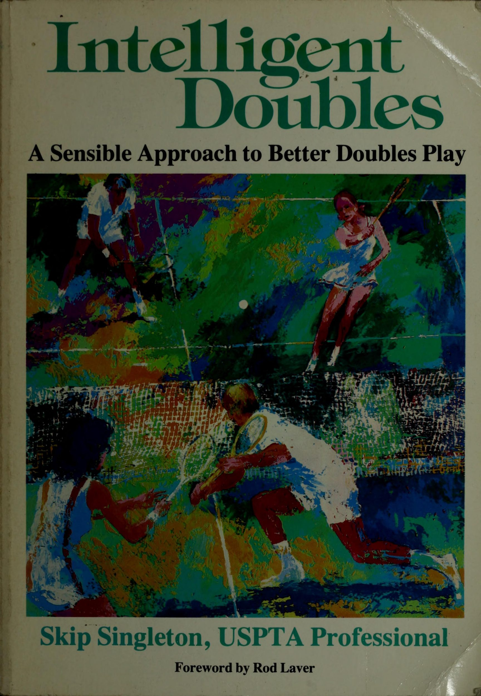
Bản dịch Việt ngữ này chỉ dùng cho mục đích học tập cá nhân, phi thương mại. Bản quyền tác phẩm gốc thuộc về tác giả và nhà xuất bản.
Lời nói đầu của Rod Laver & Lời nói đầu: Nghệ thuật nhân đôi thông minh
LỜI NÓI ĐẦU cải thiện trò chơi đánh đôi của bạn. Nó cung cấp cái nhìn sâu sắc tuyệt vời và nhiều lời khuyên hay về cách tận hưởng một trận đấu đôi tốt hơn ở mọi cấp độ, cả xã hội và cạnh tranh. Hầu hết người chơi đều đồng ý với trò chơi đánh đôi nhưng không luyện tập đủ để đạt được mức độ nhất quán cần thiết nhằm cải thiện lối chơi của họ. Để chơi tốt trò chơi này đòi hỏi phải có sự chuẩn bị tinh thần và tinh thần đồng đội cao, cùng với sự hiểu biết về chiến lược và thực hiện cú đánh nhất quán. Mặc dù không có bí quyết nào để phát âm nhân đôi, nhưng tôi cảm thấy đây là một trong số ít những cuốn sách có sẵn về nhân đôi mà bạn có thể tiếp tục đọc và phát triển. Danh sách kiểm tra dưới mỗi bản tóm tắt giúp bạn ôn lại nhanh chóng sau khi đã tiếp thu từng chương trong cuốn sách. Tôi đã biết Skip trong nhiều năm qua là một giáo viên am hiểu về trò chơi và là huấn luyện viên được nhiều người kính trọng. Anh ấy hiểu cần những gì để trở thành một tay vợt đánh đôi chiến thắng. Phong cách giảng dạy thực tế của anh ấy làm cho trận đấu trở nên dễ hiểu trong khi anh ấy đề cập đến trò chơi tinh thần, tinh thần đồng đội, lựa chọn cú đánh, vị trí và mối quan hệ giữa các cá nhân trên sân một cách tích cực và đầy động lực. Cách tiếp cận hợp lý này đối với trò chơi đánh đôi tạo nên một cuốn sách hay. Tôi rất thích đọc nó và cảm thấy bạn cũng vậy. Rod Laver
LỜI NÓI ĐẦU Cuốn sách này được viết để cung cấp lời khuyên nhân đôi tích cực, động lực và hợp lý cho người chơi ở mọi cấp độ. Một cuốn sách khác mà tôi đã viết, Quần vợt thông minh, được viết cho tất cả người chơi trong môn thể thao quần vợt với một thông điệp có thể giống nhau, tuy nhiên, lại khác. Chủ đề của cuốn sách này đặc biệt liên quan đến trò chơi đánh đôi. Nó đề cập đến các cú đánh và chiến lược của trò chơi cũng như các cách để luôn đạt được lối chơi tốt nhất cho bản thân và đối tác của bạn trên sân đánh đôi. Ở cấp độ câu lạc bộ, đánh đôi có lẽ là hình thức chơi quần vợt phổ biến nhất hiện nay. Mặc dù nhiều người đang chơi trò chơi này nhưng ít người thực sự hiểu và chơi đôi như một trò chơi riêng biệt. Điều này mang lại lợi thế nhất định cho những ai tìm hiểu thêm và hiểu được trò chơi nhân đôi là một trò chơi độc đáo. Những người chơi đơn thành công sẽ tiếp tục vật lộn với việc tiến bộ trong lối chơi đôi của họ cho đến khi họ nhận ra sự khác biệt đôi. Bí quyết để đánh đôi thành công được một số người cho rằng chỉ đơn giản là 'tìm một đối tác tuyệt vời'! Tuy nhiên, trò chơi này còn có nhiều điều hơn là ghép đôi với một cầu thủ xuất sắc để gánh vác bạn trong các trận đấu mà bạn chơi. Một mối quan hệ hợp tác phải được phát triển giữa hai bên với sự hiểu biết chung và mối quan hệ làm việc. Hai tâm trí phải có khả năng hòa hợp với nhau như một cũng như hai tính cách thể hiện sự tôn trọng và tin tưởng lẫn nhau trên sân. Sau đó, việc di chuyển, chọn vị trí, lựa chọn cú đánh, chiến lược và thậm chí cả các bàn thắng sẽ được xây dựng và thực hiện theo cặp hoặc cụ thể hơn là theo đội. Để chơi tốt trò chơi này, người chơi sẽ phải thực hiện nhiều cú đánh khác nhau hơn mức thường được yêu cầu trong trò chơi đánh đơn. Cuốn sách này giải thích việc sử dụng các nét này và thảo luận về cách kiểm soát từng nét. Nó cũng dạy cách kiểm soát đối thủ, các trận đấu bạn chơi và chính bạn trên sân đôi. Nó nhằm mục đích giúp bạn và đối tác của bạn
phát triển lợi thế tinh thần và hiểu biết chiến lược tốt hơn về trò chơi đánh đôi để phát huy lối chơi tốt nhất của bạn ... một cách nhất quán! Khi bạn đọc cuốn sách này, hãy chia sẻ tài liệu bạn đã đọc với bạn đời của mình để họ cũng có thể được hưởng lợi. Bạn cũng nên chuyển cuốn sách cho đối tác của mình sau khi bạn đọc xong hoặc khuyến khích họ mua một bản sao. Sau đó, cả hai bạn sẽ tiếp tục học hỏi và cùng nhau phát triển, điều này cực kỳ quan trọng trong sự phát triển của một đội đánh đôi thành công.
1. Sự khác biệt đôi: Một ván cờ có nhịp độ nhanh
CHƯƠNG 1 Hỏi & Đáp về sự khác biệt đôi DÀNH CHO MỌI NGƯỜI “Đôi thực sự là một trò chơi hay hơn đánh đơn hoặc bất kỳ môn thể thao nào khác mà bạn muốn đề cập đến.” Bill Talbert. Đánh đôi, thường được coi là “hình thức nghệ thuật của quần vợt”, đã trở nên phổ biến trong những năm qua với những người chơi từ cấp độ mới bắt đầu cho đến chuyên nghiệp. Vậy sức hấp dẫn lớn là gì? Điều gì ở trò chơi đánh đôi này mà lại mời gọi rất nhiều người chơi mới tham gia trò chơi cũng như thu hút nhiều người đam mê đánh đơn lâu năm? Là một môn thể thao xã hội, quần vợt luôn được xếp hạng trong số những môn thể thao tốt nhất. Golf, bowling, chèo thuyền, trượt tuyết và các môn thể thao khác đã giữ giá trị xã hội của chúng; tuy nhiên, nhờ vào nội dung đánh đôi, quần vợt tiếp tục là một trong những môn dẫn đầu về mặt xã hội. Với nội dung đôi, các gia đình có thể chơi cùng nhau (và ở cùng nhau), bạn bè có thể kết đôi và đó là cách dễ dàng để kết bạn và làm quen mới. Hãy đối mặt với sự thật, đánh đôi đơn giản là mang lại nhiều niềm vui hơn đánh đơn. Nó ít mệt mỏi hơn so với trò chơi đánh đơn và thường mang tính xã hội nhiều hơn. Và khi có bốn người chơi tham gia, vô số biến cố và diễn biến trên sân có thể tạo nên một ngày chơi quần vợt thú vị và hấp dẫn cho tất cả mọi người! Đánh đôi cũng đang trở nên khá phổ biến với những người chơi giải đấu và những người tham gia giải đấu ở mọi cấp độ. Các yêu cầu về thể chất trong đánh đôi thường ít đòi hỏi hơn nhiều so với
họ thi đấu đơn, điều này mở ra cơ hội cho nhiều tâm hồn cạnh tranh, những người có thể không thể thi đấu quần vợt nếu không có trò chơi đánh đôi. Đối với bộ cũ hơn, chậm hơn hoặc nặng hơn, đây có thể chỉ là trò chơi duy nhất trong thị trấn. Nhưng vẻ đẹp thực sự của đánh đôi là hai người chơi có thể kết hợp với nhau và tạo thành một cặp khá đáng gờm bất kể họ ở độ tuổi hay cân nặng nào. Ở những vùng của đất nước nơi khí hậu nóng cấm quần chúng thi đấu đơn, các trận đấu đôi diễn ra phổ biến hơn trừ khi trời rất sớm*sáng hoặc tối. Và tại các câu lạc bộ và khu phức hợp trong nhà cực kỳ năng động, thời gian ra tòa không chỉ khá tốn kém mà còn khó có được. Giải pháp cho cả hai - "'chúng ta hãy chơi đôi!' Có vẻ như mọi người đang tham gia vào hoạt động chơi đôi. Và tại sao không? Đó có thể là môn quần vợt được chơi tốt nhất. Với sự hành động và phấn khích trong môn thể thao này, những trận đánh đôi chơi tốt thậm chí có thể được gọi là "buổi biểu diễn vĩ đại nhất trên trái đất"! Nhưng có phải luôn như vậy không? Chúng ta hãy xem tại sao "buổi biểu diễn vĩ đại nhất trên trái đất" đôi khi cũng có thể được gắn nhãn là "đánh đôi đôi"! Q TRÒ CHƠI TRUNG BÌNH CỦA ĐÔI Để chơi tốt trò chơi, một yêu cầu quan trọng đối với một cặp đôi là phải có khả năng chơi cùng nhau, tức là giống như một đội. Tuy nhiên, quần vợt có xu hướng hình thành tính cá nhân giữa những người tham gia. Việc lựa chọn, bố trí và thực hiện cú đánh đều được thực hiện độc đáo bởi người chơi trong trò chơi và đó là một trong những niềm vui của quần vợt. Nó phát huy các kỹ năng và tài năng cá nhân. Tuy nhiên, nó cũng tự nhiên khiến người ta trở thành người chơi đơn. Tin tuyệt vời cho các nghệ sĩ nhân đôi của bạn! Bạn thấy đấy, có rất ít tay vợt có thể trở thành tay vợt đánh đôi thực sự giỏi. Đối với hầu hết, đánh đôi chỉ là phần mở rộng của đánh đơn, vì vậy, trận đấu đánh đôi trung bình tiếp tục có bốn người chơi trên sân đánh đôi, tất cả đều cố gắng chơi đánh đơn. Để điều chỉnh trò chơi đánh đơn của bạn cho phù hợp với trò chơi đánh đôi, trước hết, bạn phải hiểu rằng đánh đôi không phải là đánh đơn. Đây là một trò chơi quần vợt riêng biệt nên được chơi riêng. Suy nghĩ và hành động của cá nhân phải học cách nhường chỗ cho nỗ lực của tập thể. “Vì lợi ích của đội” sẽ là phương châm mới được bạn áp dụng, với “tôi, chính tôi và tôi” ngồi ở ghế sau khi bạn thi đấu trên sân đôi. Cá tính của bạn có thể không bị dập tắt hoàn toàn khi bạn hình thành một
Sự khác biệt nhân đôi @ hợp tác với người khác. Các đội đánh đôi giỏi sẽ tính đến phong cách của từng người chơi khi xây dựng những cú đánh và chiến lược nào sẽ được đội sử dụng. Điều quan trọng cần nhớ là cả đội quyết định các cú đánh và chiến lược chứ không phải từng người chơi độc lập với nhau. Mối quan hệ hợp tác tốt nhất sẽ phát triển khi hai người chơi học cách làm việc cùng nhau để hoàn thành một nhiệm vụ tương tự. Chính tinh thần đồng đội đã mang lại cho người chơi đôi thành công nhất, cũng như hiểu và chơi đôi như một trò chơi riêng biệt. Q& ĐIỀU GÌ LÀM CHO NHÂN ĐÔI KHÁC BIỆT? Ngoài thực tế hiển nhiên là bốn người tham gia đánh đôi trong khi hai người chơi đấu đơn, có rất ít điểm tương đồng trong đánh đơn và đánh đôi. Ồ chắc chắn rồi, bạn vẫn đánh một quả bóng tennis màu vàng mờ qua lưới trong một số đường ranh giới giống như trong đánh đơn, tuy nhiên, các đường ranh giới thay đổi và các cú đánh trong đánh đôi cũng vậy. Sân trở nên rộng hơn 9 feet ở hai bên lưới nhờ các con hẻm. Trong khi các cú giao bóng, thuận tay và trái tay tiếp tục thách thức hầu hết người chơi trong trò chơi, thì các cú đánh trong nội dung đánh đôi mang lại thách thức thậm chí còn lớn hơn cho những người tham gia. Việc bổ sung các cú đánh như lốp bóng, chuyền bóng, chuyền bóng một nửa, chuyền bóng, chuyền bóng, sút bóng, và các cú đánh khác khiến các cú đánh đôi trở thành một trò chơi đòi hỏi một kho cú đánh lớn hơn nhiều. Đây là một trong những lý do chính tại sao đánh đôi tốt có thể khó chơi hơn đánh đơn. Sự khéo léo thường sẽ đánh bại sức mạnh trong các trận đấu đôi. Chính sự kết hợp giữa tiếp xúc và các góc cùng với tính nhất quán, không phải sức mạnh thô bạo và người chiến thắng, sẽ tạo ra kết quả tối ưu trong đánh đôi. Các quả giao bóng được thực hiện để xác định vị trí, bóng hướng vào chân đối phương và các quả giao bóng chỉ được thực hiện khi ở đúng vị trí để thực hiện các cú đánh như vậy. Mặc dù một số ngôi sao đánh đôi chuyên nghiệp thành công nhất hiện nay đang tạo được dấu ấn với lối chơi “nhân đôi sức mạnh”, nhưng rất có thể những pha đánh đôi tốt nhất của bạn sẽ không bao giờ đạt được hiệu quả nhất quán thông qua việc sử dụng sức mạnh. Vị trí và sự khéo léo cùng với tỷ lệ cú đánh là nền tảng để xây dựng trò chơi đánh đôi chiến thắng của bạn. Việc trao đổi bóng nhanh hơn diễn ra trong nội dung đánh đôi khi các cầu thủ trên lưới chặn bóng và đặt lại cho đối phương sớm hơn nhiều so với thông thường xảy ra trong nội dung đánh đơn. Đó là những thứ này
trao đổi nhanh hơn cùng với sự khéo léo và kiểm soát các góc được bố trí hợp lý thường khiến trò chơi nhân đôi trở nên thú vị hơn để chơi và xem. Động tác của người chơi trong trò chơi đánh đôi cũng rất khác nhau. Trong đánh đơn, người chơi thường di chuyển sang ngang, trong khi ở đánh đôi, người chơi di chuyển tiến và lùi nhiều hơn. Với một đối tác chia sẻ một nửa sân, nhu cầu di chuyển ngang sẽ ít hơn. Và như chúng ta sẽ thảo luận sau, những cú đánh đôi tốt đòi hỏi phải di chuyển đến lưới, điều này mang lại cho bạn chuyển động “lên trên” trên sân và nếu bóng được lốp bóng, chuyển động “lùi lại” để rút lui. Với việc bốn người chia nhau sân thay vì hai, quần vợt cũng trở nên phức tạp hơn. Tính cách thường khác nhau và khi bị đặt vào những tình huống căng thẳng và áp lực thì điều gì cũng có thể xảy ra! Sự tập trung trở nên khó kiểm soát hơn trong các trận đánh đôi do có nhiều biến số được tạo ra trên sân khi có nhiều người chơi hơn. Vì tất cả người chơi không tham gia vào mọi cú đánh bên phần sân của họ nên tâm trí của họ có thể đi lang thang. Những người chơi thích giữ im lặng và giữ im lặng khi chơi quần vợt có thể khó điều chỉnh để giao tiếp trên sân đôi trong khi vẫn giữ được sự tập trung cao độ. Chiến thuật trong các trận đấu đơn và đôi cũng khá khác biệt và đa dạng. Chơi đơn thường yêu cầu lập kế hoạch chiến lược để tính đến một số biến số như trò chơi của đối thủ, bề mặt chơi và những hạn chế của người chơi tham gia. Mặt khác, những người chơi đánh đôi có nhiều biến số hơn để đối mặt. Mặc dù tốc độ bề mặt sân không đóng vai trò quan trọng trong việc hình thành chiến lược đánh đôi, nhưng bằng cách tăng số lượng người tham gia lên bốn, các biến số sẽ tăng lên đáng kể. Điểm mạnh và điểm yếu của cả bốn cầu thủ cũng như điểm mạnh và điểm yếu của mỗi đội đều phải được tính đến. Chiến lược nhân đôi cũng phải linh hoạt hơn vì những thay đổi có nhiều khả năng xảy ra nhân đôi hơn. & LÀ TRÒ CHƠI NHÂN ĐÔI CHO BẠN? Vậy bạn nghĩ sao? . . trò chơi đánh đôi này có thực sự phù hợp với bạn không? Các nhà tâm lý học và bác sĩ tâm thần đã nghiên cứu về các vận động viên quần vợt đã phát hiện ra rằng những người chơi đánh đôi được yêu thích hơn.
Sự khác biệt đôi @ người chơi đơn. Họ đã phát hiện ra rằng tinh thần đồng đội giúp mối quan hệ giữa các cá nhân tốt hơn và do đó, những người chơi đánh đôi sẽ dễ dàng hòa hợp hơn. Các tay vợt đánh đơn thường gặp khó khăn trong việc chia sân và trách nhiệm thi đấu đôi. “Court hog” là một thuật ngữ được ưa chuộng dùng để mô tả những người chơi đánh đơn thiếu hiểu biết về đánh đôi. Họ lao đi khắp sân mà không để ý đến bất kỳ hoặc tất cả nỗ lực của cả đội. Những cá nhân này cũng có thể gặp khó khăn trong việc chia sẻ công lao hoặc đổ lỗi cho thành công hay thất bại của nhóm. Họ thường là những người ích kỷ và sẽ không trở thành những tay vợt đánh đôi thực thụ cho đến khi họ học cách từ bỏ thái độ 'tôi, tôi' và trở thành một đội với đồng đội của mình. Một trong những điều khó nuốt trôi nhất là việc trở thành một tay vợt đánh đơn giỏi không nhất thiết khiến bạn trở thành một tay vợt đánh đôi giỏi. Và nếu bạn là một tay vợt đánh đơn giỏi, bạn thậm chí có thể bị coi là kẻ không phù hợp trên sân đánh đôi! Ôi. Điều đó có thể khó chấp nhận. Vậy tất cả những điều này dẫn đến điều gì? Nếu bạn thực sự muốn học cách chơi hết mình đánh đôi trước tiên bạn phải hiểu rằng đánh đôi là một trò chơi riêng biệt so với đánh đơn và phải được chơi riêng. Một khi bạn cam kết hiểu và áp dụng thực tế này cùng với các nguyên tắc được thảo luận ở đây, bạn tiếp tục chỉ suy nghĩ và hành động cho chính mình trên sân đánh đôi, thì thành công của bạn sẽ rất ít. Tuy nhiên, nếu bạn học cách làm việc cùng nhau, sẽ có vô số cơ hội vui chơi và luyện tập cho cả hai bạn. trong môn quần vợt giành được mọi vinh quang. Họ là những ngôi sao ở sân trung tâm sẽ nhận được nhiều sự chú ý và ngưỡng mộ nhất từ công chúng. Họ là những người nổi tiếng trong môn thể thao này vì họ đang được chú ý. Vậy thì những tay vợt đánh đôi là gì? hoặc các sân sau rời khỏi sân đấu chính và sân chính để bạn biết ai... những “ngôi sao độc thân” đó! Đám đông và máy quay truyền hình cũng có thể đã biến mất từ lâu
e@ các đội đôi thậm chí còn đưa ra tòa. Một số trận quần vợt chuyên nghiệp hay nhất hiếm khi được xem vì nó được thi đấu trên sân đôi. Tại sao những người chơi đánh đơn lại được đối xử như ngôi sao còn những người chơi đánh đôi thì không? Với những người chuyên nghiệp, tiền có thể có tác dụng gì đó. Nhà vô địch đơn nhận được số tiền thưởng gấp bảy lần số tiền thưởng của mỗi thành viên trong đội chiến thắng đôi. Các cầu thủ đánh đơn siêu sao cũng thu hút rất đông khán giả đến xem các giải đấu và xem truyền hình. Báo chí nắm bắt được họ và theo dõi mọi hành động của họ cho đến khi thu hút được sự chú ý của công chúng. Điều thúc đẩy lớn cho nội dung đánh đôi là khi những tay vợt như John McEnroe, Boris Becker, Steffi Graf và Martina Navratilova bước ra sân đánh đôi sau khi thi đấu đơn và thu hút đám đông theo cùng. Tôi có thể nghe thấy các tay vợt đánh đôi hét lên: ‘Tôi không được tôn trọng!’, và đúng như vậy. Đánh đôi là một trò chơi tuyệt vời; nhiều người thậm chí còn coi nó là vĩ đại nhất. Vậy thì tại sao bạn lại muốn trở thành công dân hạng hai? Tại sao phải chơi đôi khi bạn có thể đạt được trạng thái siêu sao với tư cách là người chơi đơn? Ối... đợi một chút. Chơi đơn không nhất thiết sẽ biến bạn thành siêu sao. Sẽ chỉ có một người chiến thắng trong mỗi giải đấu đơn diễn ra và những người còn lại đều thua cuộc. Bạn sẽ thấy rằng thực sự có rất ít siêu sao trong môn quần vợt ở bất kỳ cấp độ nào bạn chơi. Quần vợt sẽ được chơi như một trò chơi giải trí cho những người còn lại. Chiến thắng có thể mang lại niềm vui ở cả nội dung đánh đơn và đánh đôi, tuy nhiên, một số niềm vui lớn nhất mà bạn có được khi chơi quần vợt có thể có được trên sân đánh đôi với đối tác phù hợp. Nó thậm chí có thể không đến từ chiến thắng mà là từ việc cùng nhau cải thiện và học cách chơi đôi tốt nhất của bạn. . . một cách nhất quán! Đó là một cảm giác tuyệt vời khi có thể hiểu trò chơi đánh đôi, chia sẻ nó với người khác, sau đó cùng nhau phát triển và cải thiện. Trong mọi trường hợp, niềm vui mà bạn có được khi chơi đôi chắc chắn sẽ làm lu mờ tình trạng công dân của bạn! & TÌM KIẾM ĐỐI TÁC PHẢI (HOẶC TRÁI) Bây giờ đã đến lúc bạn tìm kiếm và tìm một người đặc biệt mà bạn sẽ chia sẻ sân chơi của mình. Nhưng trước khi ra ngoài tìm kiếm Ông/Bà Đúng, có một số điểm quan trọng mà bạn cần phải nhận ra. Bạn không nhất thiết phải tìm kiếm một người giống hệt bạn về
Sự khác biệt nhân đôi @ các điều khoản trong cách chơi của bạn (cú đánh, sức mạnh và tốc độ), hoặc thậm chí phù hợp với sở thích và tính cách của bạn. Đối tác tốt nhất có thể tìm được là người vừa bổ sung vừa miễn phí. Đối tác phù hợp có thể là một người bạn mà bạn đã có; mặc dù không phải là một yêu cầu cần thiết nhưng nó thường giúp ích. Tuy nhiên, đó phải là người mà bạn tương thích, hòa đồng và có thể nói chuyện dễ dàng. Bạn cũng nên lưu ý khi tìm kiếm đối tác rằng bạn đang tìm kiếm một “người chơi trong nhóm”. Những người hào nhoáng có thể bốc đồng, coi mình là trung tâm và khá khó bắt cặp. Mặc dù họ có thể có những khoảnh khắc rực rỡ và đôi khi trông ấn tượng, nhưng việc hình thành mối quan hệ lâu dài với những người chơi này có thể gây ra thảm họa về lâu dài. Nếu bạn tìm thấy ai đó sẵn sàng chia sẻ công lao hoặc đổ lỗi cho bạn về việc thắng hay thua, bạn sẽ tìm được một cá nhân mà bạn sẽ chia sẻ sự tôn trọng và tin cậy lẫn nhau. Điều cuối cùng bạn muốn cảm thấy là sự xấu hổ hoặc tội lỗi sau khi bỏ lỡ mỗi lần quay, và chính đối tác của bạn (và mối quan hệ mà bạn có) sẽ khiến bạn cảm thấy như vậy hoặc không. Sẽ cần có sự cân bằng hỗ trợ lẫn nhau để giữ mức độ tin cậy cao cho cả hai bạn. Sự tha thứ, hỗ trợ và thấu hiểu là nền tảng để xây dựng mối quan hệ tôn trọng. Hãy tìm người mà bạn có thể chia sẻ những phẩm chất quan trọng này. Hãy suy nghĩ xem phong cách chơi của bạn sẽ phù hợp như thế nào. Liệu người này có bổ sung cho điểm mạnh và điểm yếu của bạn không và bạn có bổ sung cho điểm yếu của cô ấy không? Cả hai bạn đều là người lãnh đạo hoặc người theo sau, hay tốt nhất là một trong hai người? Bạn có chơi ở trình độ tương tự không? Bạn có mong muốn và mục tiêu tương tự cho trò chơi không? Khi tìm kiếm một phong cách bổ sung, hãy biết bạn thích chơi bên nào của sân (thuận tay/phải/deuce hoặc trái tay/trái/quảng cáo) và tìm một đối tác chơi tốt bên kia. Các đội đánh đôi xuất sắc trong quá khứ thường có cầu thủ mạnh ở bên trái hoặc bên quảng cáo và cầu thủ khéo léo hoặc ổn định ở bên phải. Cầu thủ kiên định ở bên phải sẽ có thể chơi nhiều bóng hơn, vì người chơi ở phía bên này của sân sẽ có ít nhất nhiều cơ hội nếu không muốn nói là nhiều hơn để đưa bóng vào cuộc. Người chơi ở phía quảng cáo sẽ là người tạo ra cú đánh cơ hội, người có thể tận dụng cơ hội để đạt được những điểm lớn và “biến nó thành hiện thực”. Nếu bạn thuộc loại “sân đấu quảng cáo”
hãy tự mình chơi, tránh kết hợp với những người chơi quảng cáo khác trừ khi bạn muốn có kết quả không nhất quán. Mặt khác, nếu bạn là một người chơi ổn định ở bên phải và hợp tác với một “Eddie ổn định” khác, bạn có thể thấy rằng với tư cách là một đội, bạn thiếu “cú đấm hạ gục” cần thiết để giành được một số điểm. Tìm kiếm người chơi bên phải (hoặc bên trái), người sẽ bổ sung cho đội của bạn và giúp thống nhất các nỗ lực của bạn. Q TÓM TẮT Khi chơi tốt, đánh đôi có thể là trò chơi hay nhất! Rất ít tay vợt có thể trở thành tay vợt đôi thực sự giỏi vì họ sẽ tiếp tục chơi đơn trên sân đôi. Đánh đôi thực sự khá khác so với đánh đơn và nên chơi theo cách đó. Từ số lượng người chơi đến quy mô sân, từ các cú đánh đến động tác, từ chiến thuật cho đến tinh thần đồng đội cần thiết, đánh đôi đều có những nét đặc biệt riêng. Nếu bạn gặp khó khăn trong việc chia sân hoặc trách nhiệm thi đấu đôi, thay vào đó bạn có thể cân nhắc việc chơi đơn. Tuy nhiên, nếu bạn hiểu trò chơi đánh đôi và sẵn sàng học hỏi và làm việc với người khác, những thành công lớn đang chờ đợi bạn. Mặc dù các trận đấu đơn sẽ tiếp tục (ít nhất là ở thời điểm hiện tại) tạo ra các siêu sao, nhưng những người chơi đánh đôi trên khắp thế giới sẽ nhận được nhiều niềm vui từ trò chơi đến mức vị thế ngôi sao dường như không đáng kể. Đối tác tốt nhất mà bạn từng tìm được sẽ không chỉ bổ sung cho phong cách chơi của bạn mà còn là kiểu người đáng khen ngợi.
2. Phát triển theo nhóm: Biết bản thân và đoàn kết
CHƯƠNG 2 Phát triển theo nhóm Q BIẾT BẢN THÂN Bây giờ, bạn đã sẵn sàng chứng tỏ mình là một đội, một cặp gắn kết với nhau và chiến thắng như một. Nhưng trước khi bạn bắt đầu xây dựng kế hoạch và chiến lược cho nhóm mới của mình, hãy xem xét kỹ bản thân bạn và các trò chơi mà bạn chơi. Nếu không hiểu rõ nhau, làm sao bạn có thể thiết lập và hoạch định các chiến lược để nhóm thực hiện? Trước tiên, bạn phải biết khả năng của mình trước khi nhóm của bạn sẵn sàng thực hiện ý định của mình. Bạn hy vọng bạn đã chọn được một đối tác bổ sung cho trò chơi của mình. Bây giờ chúng ta hãy đảm bảo rằng anh ta được bố trí ở phía sân có lợi nhất. Hai người thuận tay phải thường thấy họ làm việc tốt nhất với cầu thủ thuận tay tốt hơn ở bên phải và cầu thủ có cú đánh trái tay tốt nhất ở bên trái. Những người thuận tay trái cũng thường gây nhiều sát thương hơn cho đội đối phương từ phía quảng cáo của sân, bởi vì các cú trái tay của họ gần như bị ẩn và khiến người giao bóng khó tìm thấy. Mặc dù đây là những đội hình đã được thống nhất chung, mỗi đội là duy nhất và phải được phân tích để khám phá điểm mạnh và điểm yếu của các cầu thủ nhằm xác định vị trí của mỗi đội vì lợi ích của đội. Những người chơi ảo tưởng về sự vĩ đại thường tự coi mình là người có thể thực hiện bất kỳ và tất cả các cảnh quay trong sách. Mặc dù bề ngoài những cầu thủ này thường tỏ ra tự tin nhưng bên trong sự tự tin và mức độ quý trọng của họ nhìn chung rất thấp.
‘Adajeujs ul sasueyo ssnosip 4AAl4yS Ub_ Pue PAO]NBUABN BULB 4ayBaUq-al] B Ul Jas Jsulf AY) Bujso] say rr Beusl arb iiaacorittt UFATYHS VAOTILVUAYN VOIwoO O
Phát triển asa Team @ khá thấp. Điều này là do họ chưa bao giờ khám phá ra trò chơi của riêng mình nên họ không biết cách chơi trong đó. Bạn phải có khả năng thiết lập các chiến lược và kế hoạch trò chơi phù hợp với trò chơi và phong cách chơi của riêng bạn để mong đợi đạt được thành công khi chơi chúng. Đừng tưởng tượng rằng bạn là một người chơi nào đó mà bạn không phải là người chơi. Thay vào đó, hãy cố gắng trở thành con người của bạn, hiểu người đó là ai, sau đó lập kế hoạch và chơi trò chơi của bạn như một người béo. Không có gì mang lại cho bạn kết quả nhất quán hơn việc chỉ đơn giản hiểu trò chơi của bạn và chơi trong đó. Q HAI ĐẦU TỐT HƠN... Trong nội dung đánh đôi, hai đầu không chỉ thuận tiện hơn mà còn rất cần thiết! Nếu không có “cuộc họp tâm trí”, người chơi có thể lập kế hoạch và chơi độc lập với nhau. Chiến lược, lựa chọn cú đánh, đánh giá đối thủ và các kế hoạch chiến thuật khác chỉ có thể được thảo luận và quyết định với tư cách một đội. Bất kỳ cách nào khác chỉ đơn giản là chơi các trò chơi quần vợt riêng biệt như một trò chơi song song. Với việc hai người cùng nhau chia sẻ nguồn lực của mình, những gì mỗi người nhìn thấy, nghe thấy, cảm nhận và suy nghĩ sẽ được chia sẻ để củng cố nhận thức chung của nhóm. Những gì bạn đạt được từ một quan điểm khác cũng có thể mang lại sự khai sáng và thậm chí giúp nâng cao nhận thức cá nhân của bạn. Với hai người đối diện với bạn, có rất nhiều biến số cần xem xét. Bạn có thể chọn ra điều gì đó mà một trong số những người chơi đang làm trong khi đối tác của bạn bắt kịp một sự việc quan trọng khác từ đội đối phương. Khi mỗi người trong số các bạn chia sẻ những phát hiện của mình với người khác, nhóm không chỉ được hưởng lợi từ những khám phá tổng hợp của bạn mà mỗi người cũng sẽ cải thiện nhận thức của mình. Chiếc máy tính phức tạp nhất thế giới nằm trong đầu bạn. Khi được bật và tập trung đúng cách, khả năng bạn có thể đạt được những gì về mặt tinh thần là vô hạn. Tuy nhiên, điều khá thường xuyên xảy ra là nhiều người sẽ để tâm trí của họ không hoạt động hoặc chuyển sang trạng thái "tắt". Khi hai tâm trí kết hợp với nhau và hợp lực, quan điểm tinh thần tổng hợp của mỗi người sẽ được nâng cao hơn nhiều. Và chính nỗ lực tinh thần thống nhất này sẽ mang lại cho nhóm nhận thức rõ ràng nhất và đạt được nhiều thành công nhất.
4OUINY A]}I] @ YIM JUIUIOU ASUA] B ASBA BAO]NBAABN BUILLBPY PUB JAAILYS Thứ Tư °.7
NGHỆ THUẬT GIAO TIẾP Phát triển asaTeam @ OS, : Bản chất của tinh thần đồng đội bắt đầu khi sự hiểu biết chung được thiết lập vững chắc giữa các đối tác. Điều này có thể diễn ra dưới nhiều hình thức giao tiếp, cả bằng lời nói và phi ngôn ngữ. Những phiên “pow-wow” ngắn gọn diễn ra khi các đồng đội gặp nhau để chia sẻ và thảo luận các ý tưởng là một trong những phương tiện giao tiếp cơ bản cũng như quan trọng nhất ở các cặp đôi. Các chiến lược có thể được thảo luận trong những cuộc trò chuyện nhanh này hoặc thậm chí chúng có thể được sử dụng như một hình thức “‘động viên’ để giữ cho cả nhóm vừa có động lực vừa tập trung vào những gì đang diễn ra. Người chơi thường chia sẻ những cú đánh họ sắp đánh hoặc nơi họ sẽ hướng quả bóng tiếp theo. Tại sao? Vì vậy, đối tác của họ sau đó sẽ biết những gì cần chuẩn bị. Sẽ không có bất ngờ nào theo cách này. Khi một người giao bóng cho đối tác chơi trên lưới biết rằng quả giao bóng sẽ được thực hiện rộng, điều đó sẽ cho người đó trên lưới một manh mối rằng cô ấy phải chuẩn bị để che sân của mình nhiều hơn bình thường một chút vì cú giao bóng rộng sẽ tạo ra một góc cho người nhận có lợi cho các vị trí trong hẻm. Nếu không có kiến thức trước, người dùng mạng có thể đã thoải mái hơn một chút khi đưa tin về con hẻm của mình và dễ dàng bị vượt qua. Tương tự như vậy, người nhận bóng chuẩn bị thực hiện một cú trả bóng lốp bóng thường sẽ thành công hơn nếu họ cảnh báo trước cho đối tác của mình để cô ấy sẽ phản ứng nhanh hơn nếu cú lốp bóng ngắn và cô ấy phải đối mặt với một 'bánh sandwich mờ' đang lao tới. Những giao tiếp giữa các điểm này thường hữu ích và sẽ cải thiện việc lập kế hoạch và định vị của đội. Tín hiệu cung cấp một phương tiện giao tiếp nhân đôi khác. Nó thường được sử dụng nhất bởi người thực hiện tín hiệu tay ẩn sau lưng với người giao bóng. Nó cho phép Người giao bóng biết liệu anh ta sẽ “cướp” hay di chuyển qua sân để chặn cú vô lê hay anh ta nên giữ nguyên vị trí đó. Anh ta cũng có thể chỉ cho người giao bóng biết nơi bóng nên được hướng (trái hoặc phải) trong ô giao bóng để anh ta ở vị trí phản ứng với việc trả lại quả giao bóng. Ngón trỏ chỉ về bên trái có nghĩa là quả giao bóng ở đó, và ngón cái chỉ theo hướng ngược lại cho biết quả giao bóng nên được hướng về phía bên phải của ô. Nếu máy chủ có quyền kiểm soát thì đây có thể là một cách tuyệt vời để cả hai cùng làm việc. Quan trọng như giao tiếp tăng gấp đôi, quá nhiều
có thể gây ra tình trạng mất tập trung vì bạn tập trung nhiều hơn vào việc chia sẻ suy nghĩ với đối tác của mình hơn là trò chơi thực tế. Vì lý do này, bạn và đối tác của mình phải quyết định mức độ giao tiếp cần thiết cho nhóm của bạn. Bạn có thể chọn giữ cuộc nói chuyện trên sân của mình ở mức tối thiểu. Hãy nhớ rằng im lặng thường là vàng. Nếu mọi thứ đều hoạt động tốt và nhóm của bạn đang đi đúng hướng, ý tưởng tốt nhất có thể chỉ là im lặng và chơi! Bạn có thể khám phá ra rằng việc cắn lưỡi khi bạn muốn nói chuyện có thể mang lại lợi ích cho cả hai. Tìm kiếm tỷ lệ giao tiếp phù hợp và im lặng để đạt được mức độ thành công cao nhất cho nhóm của bạn. Cho dù bạn là người lãnh đạo hay người theo sau trong nhóm của mình, để trở thành một người giao tiếp tốt đòi hỏi phải có tài năng lắng nghe. Người nói ít học nhiều và nghe nhiều! Tất cả các bạn đều biết có người nói nhiều đến nỗi không chịu lắng nghe ai. Ngay cả khi bạn nói, bạn có thể thấy rằng anh ấy thực sự không lắng nghe vì anh ấy chỉ nghĩ về những gì mình sẽ nói tiếp theo. Đây là lý do tại sao những người có khả năng giao tiếp tốt nhất trong cuộc sống, những người được coi là người giao tiếp tốt nhất, lại là những người biết lắng nghe! Khi đối tác của bạn nói chuyện, hãy lắng nghe và học hỏi. Hình thức giao tiếp quan trọng nhất mà bạn sẽ chia sẻ với đối tác của mình (cũng như với đối thủ) là biểu cảm trên khuôn mặt bạn. Nó sẽ kể toàn bộ câu chuyện về cảm giác của bạn nếu bạn không chú ý. Hãy học cách kiểm soát hành động của nó để tạo ra bầu không khí chung cho nhóm của bạn. Một nụ cười hoặc vẻ bình tĩnh trên khuôn mặt bạn sẽ thể hiện sự tự tin và có thể giúp đối tác của bạn thư giãn hơn hầu hết những lời nói có thể. Một cái nhìn thân thiện, nhẹ nhàng hoặc ấm áp từ đối tác cũng giúp bạn giảm bớt khả năng phòng thủ và bạn có thể thấy mình sẵn sàng lắng nghe và biểu diễn cho cô ấy hơn. Q NHÀ NGOẠI GIAO ĐÔI Kỹ năng giao tiếp tốt đòi hỏi kiến thức làm việc về quan hệ con người. Không phải lúc nào những gì bạn nói đôi cũng quan trọng mà còn là cách bạn nói điều đó. Nếu nói sai, những thông tin bạn chia sẻ dù quan trọng đến đâu cũng có thể không được đối tác của bạn chấp nhận, thậm chí không nhận được. Mọi người có xu hướng nghe những gì họ muốn nghe, vì vậy bạn phải chắc chắn rằng đối phương cũng muốn nghe những gì bạn nói. Cách bạn trình bày thông điệp của mình thậm chí có thể được coi là “chào hàng bán hàng”. Nó phải được trình bày cẩn thận, đặc biệt là trong những thời điểm căng thẳng và cố gắng như khi thi đấu đôi, và đặc biệt là khi
Chủ đề phát triển asa Team @ mang tính chất cá nhân - giống như việc anh ấy chơi quần vợt! Điểm mấu chốt của mọi giao tiếp trong các cuộc giao tiếp đôi phải là: Đừng khiến đối tác của bạn tức giận hoặc khó chịu. Không ai thích nổi điên và chắc chắn sẽ không có kết quả là chơi tốt hơn. Cho dù đối tác của bạn có chơi kém đến đâu, hãy nhớ rằng họ cũng như bạn, đang chơi tốt nhất có thể vào ngày hôm đó. Thay vào đó hãy hiểu biết. .. bạn cũng sẽ trải qua những ngày "không vui" và bạn sẽ mong đợi sự thông cảm của họ khi lối chơi của bạn không đạt tiêu chuẩn. Tránh xa những lời nhận xét mỉa mai, cái nhìn không lịch sự hoặc tỏ ra lạnh lùng với đối tác của mình. Thay vào đó, hãy cố gắng thu phục anh ta về phía bạn bằng sự tế nhị và khéo léo. Bằng cách đó, bạn không chỉ ghi điểm với đối tác của mình mà còn có thể ghi được nhiều điểm hơn trước đối thủ của mình. Không ai thích đứng ở phía cuối của việc nhận mệnh lệnh. Các câu hỏi đưa ra một cách khéo léo để xử lý đưa đối tác của bạn theo cách suy nghĩ của bạn. "Bạn có nghĩ rằng chiến lược lốp bóng của chúng tôi là phù hợp để sử dụng để chống lại đội này không?" “Thay vào đó bạn nghĩ chúng ta nên làm gì?” Cách tiếp cận này luôn mang lại kết quả tốt hơn là chỉ nói “Tôi ước gì bạn ngừng lốp bóng quá nhiều và bắt đầu đánh bóng!” Một cách tiếp cận tích cực khác là sử dụng ‘chúng tôi’ thay cho “bạn” khi nói chuyện với đối tác của mình. “Chúng ta nên làm…” nghe có vẻ dễ chịu hơn “bạn nên làm…” Đây không phải là một chiến thuật khắc nghiệt, ít đổ lỗi cho cá nhân liên quan hơn và thay vào đó đặt nhiệm vụ lên cả nhóm. Khi đó, các cá nhân sẽ muốn tập hợp nỗ lực của cả đội và sẵn sàng áp dụng đường lối hành động mới của đội. Tuy nhiên, khi được bảo rằng bản thân họ phải thay đổi vì điều gì đó họ đang làm, sự phòng thủ của họ sẽ tăng lên và sự tự tin của họ thường giảm xuống. Khi đó, giao tiếp sẽ trở thành kẻ hủy diệt nhóm thay vì là phương tiện nâng cao thành công của nhóm. Cố gắng làm cho các cuộc thảo luận nhóm mang tính khích lệ và động viên bằng cách nêu rõ hoặc ngụ ý rằng sự thay đổi cần thiết là một nhiệm vụ dễ dàng. Khi những suy nghĩ và lời nói tuyệt vọng xuất hiện, sự chán nản xuất hiện và khiến cả nhóm suy sụp. Tính hài hước cũng không bao giờ gây hại! Khi cả hai bạn có thể lùi lại và chọc ghẹo hoặc nói đùa trong những thời điểm đặc biệt khi căng thẳng đang dâng cao, điều đó có thể giúp bạn thư giãn và xích lại gần nhau hơn. Hãy cẩn thận với giọng điệu bạn sử dụng. Nó có thể ảnh hưởng đến phản ứng của đối tác đối với tin nhắn của bạn theo hướng tích cực hoặc tiêu cực. Một phần quan trọng của việc hiểu con người và học cách trở thành một nhà ngoại giao đôi là biết rằng mọi người
nói chung là thích được coi là quan trọng. Cũng nên nhớ rằng vấn đề của mỗi người là mối quan tâm lớn nhất của họ. Những khái niệm này vô cùng quan trọng trong việc giao tiếp với đối tác của bạn. Giao tiếp là con đường hai chiều và bạn sẽ cần nhận ra cảm xúc của đối tác khi tương tác. Hãy quan tâm thực sự đến đối tác của bạn. Hãy lắng nghe với đôi tai quan tâm, không chỉ những gì anh ấy nói mà còn cả những gì anh ấy đang cảm nhận. Những người chơi không quan tâm đến người khác sẽ gặp khó khăn lớn trong trò chơi cuộc sống và trò chơi! H HÃY ĐỐI VỚI NÓ, GIỐNG NHƯ MỘT CUỘC HÔN NHÂN Một nhóm đôi phải được xây dựng trên sự tin tưởng, tôn trọng, hiểu biết, giao tiếp và hỗ trợ lẫn nhau. Nghe có quen không? “Bạn ________ nhận _____ làm bạn đời đôi của mình, để có và chơi cùng cho đến khi bạn thua cuộc?' Cũng giống như với một cuộc hôn nhân hoặc bất kỳ mối quan hệ nào khác, trong mối quan hệ đôi, bạn nhận lại những gì bạn đã bỏ ra. Có thể cần một chút nỗ lực để giữ cho cả nhóm trôi chảy cùng nhau. Đôi chắc chắn đưa ra một tình huống cho và nhận, và có những lúc bạn phải chuẩn bị để làm điều đó, "cho đi" nhiều hơn một chút. Việc “nhận” đến từ những gì bạn sẽ nhận lại được thông qua tất cả những gì bạn cho đi. Hãy học cách cho đi mà không mong đợi nhận lại và bạn chắc chắn sẽ nhận được lợi ích từ việc đó. Tuy nhiên, nếu bạn chỉ sẵn sàng cho đi có điều kiện thì cũng đừng mong nhận lại được nhiều. Suy cho cùng, bạn không sẵn lòng cống hiến quá nhiều cho bản thân. Sự hỗ trợ nhạy cảm và thông cảm của đối phương sẽ gửi đi thông điệp về sự quan tâm và tình cảm của bạn dành cho anh ấy. Nếu bạn học cách khiến anh ấy cảm thấy hài lòng về bản thân thông qua sự hỗ trợ của bạn, rất có thể anh ấy sẽ chơi tốt hơn (vì bạn). Bạn sẽ khiến anh ấy cảm thấy thoải mái, tự tin và sẵn sàng làm việc với bạn với tư cách là đối tác. Mặt khác, nếu bạn thiếu sự nhạy cảm để quan tâm đến đối tác của mình sau khi anh ấy bỏ lỡ ba cú thuận tay cuối cùng, đừng mong đợi anh ấy tập hợp lại và hỗ trợ cho ý tưởng chiến lược tuyệt vời tiếp theo của bạn cho đội. Người ta nói rằng yêu có nghĩa là không bao giờ phải nói lời hối tiếc. Cũng nên tránh những lời xin lỗi dứt khoát và lặp đi lặp lại trên sân đánh đôi. Hãy cố gắng quên đi những lỗi lầm trong quá khứ. Khi xin lỗi, bạn chỉ đang nhắc nhở bản thân, đối phương và đối phương về những sai lầm của mình. Đừng tập trung vào những điều tiêu cực. Thay vào đó, hãy cố gắng rút kinh nghiệm từ những lỗi lầm của mình để không lặp lại chúng, sau đó đưa ra những lời động viên.
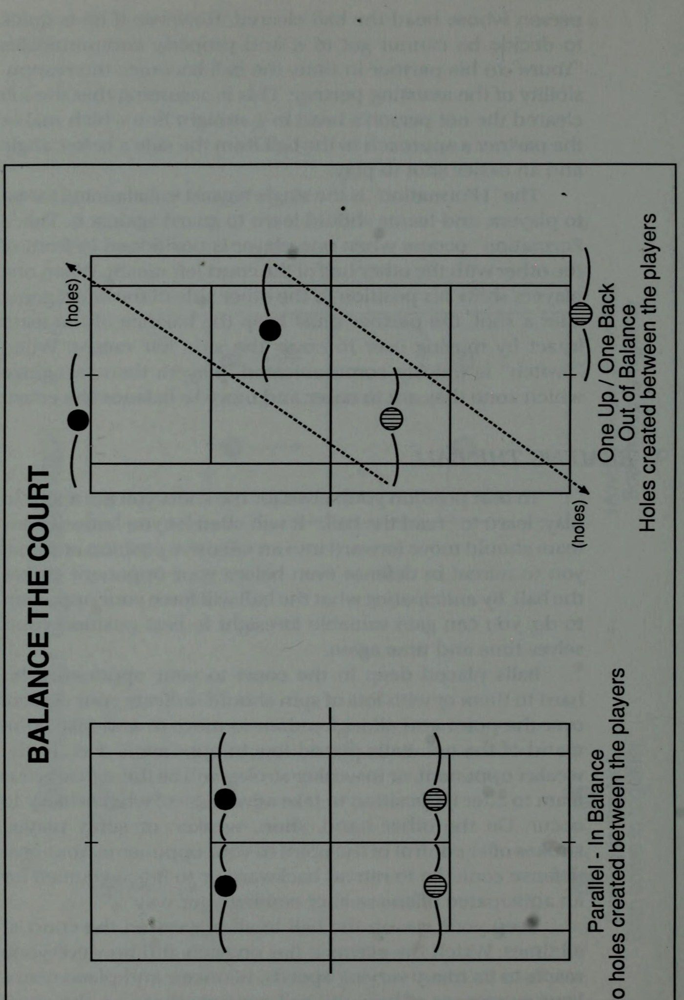
Phát triển asa Team @ cho chính bạn và đối tác của bạn. Hãy tiến về phía trước trong suy nghĩ và hành động của bạn và tránh xa những bước lùi. Nhiều cuộc hôn nhân tan vỡ vì thiếu sự giao tiếp. Đảm bảo rằng với tư cách là một cặp đôi, cả hai bạn đều sẵn sàng thảo luận về đội của mình trong và ngoài sân đấu (tốt nhất là ở ngoài sân). Chính sách “mở cửa” này giúp duy trì luồng giao tiếp ổn định để tránh những suy nghĩ tiêu cực tích tụ. Bạn sẽ phải cam kết thiết lập mối quan hệ bền chặt với đối tác sinh đôi của mình. Tuy nhiên, một khi bạn đã quyết định thực hiện điều đó và đặt nó thành ưu tiên, bạn và đối tác sinh đôi của mình có thể thấy mình thành công bên nhau "cho đến khi cái chết chia lìa"! Q& CỦA TÔI, CỦA BẠN, CỦA AI? Học cách chơi theo đội đòi hỏi phải có sự hiểu biết ngầm về ai sẽ thực hiện và thực hiện mỗi cú đánh về phía sân của bạn. Với hầu hết các quả bóng, khá rõ ràng ai sẽ đánh trả khi các cầu thủ đã đứng đúng đội hình, tuy nhiên, như bạn có thể nhận ra, có những trường hợp ngoại lệ đối với quy tắc này. Hai tình huống thiếu quyết đoán phổ biến nhất xảy ra khi bóng được hướng giữa hai bạn xuống giữa sân và khi bóng được đánh cao qua đầu bạn (hoặc đầu đối tác của bạn). Những quả bóng đánh xuống giữa sân phải được thực hiện bởi cầu thủ mạnh nhất trong đội, nghĩa là người giỏi hơn trong hai người. Điều này có thể được xác định rõ hơn bằng việc ai trong số các bạn có cú đánh tốt nhất ở giữa sân. Thông thường đó là cú đánh thuận tay nhưng không phải lúc nào cũng vậy. Đây là lý do tại sao cả đội nên hiểu trước và quyết định ai sẽ chơi những quả bóng này để tránh nhầm lẫn trong quá trình chơi thực tế. Một sự cân nhắc khác có thể là ai đã chơi cú đánh cuối cùng. Nếu cùng một người đánh bóng một lần nữa, anh ta có thể có nhịp điệu tốt hơn, sẵn sàng hơn và có thể phản xạ nhanh hơn một chút so với đối tác của mình. Cầu thủ nào ở gần lưới nhất với quả bóng được đề cập? Người chơi ở gần lưới nhất phải luôn được ưu tiên. Ở gần lưới hơn, cầu thủ này có vị trí tốt hơn để tận dụng các góc tạo ra lợi thế cho đội. Cô ấy ở vị trí tốt hơn để đưa bóng đi và giành điểm hơn đối tác của mình. Tất cả các quả bóng được ném từ trên cao về phía sân của bạn sẽ nhanh chóng được gọi to bằng một câu “Của tôi!” hoặc
weeeveseagae eavarsenre ‘su1y 4a]ua9 ay) umop 4aaajI fo 1]Nsa4 ay] UaLfo ‘,sJayIe1 Suryse]d,, 1ySneo Ja3 Juemajlg poomsayg Puke uasslay ALB SUBLIJIA JINDAID
Nhóm phát triển asa @ “Của bạn!” Điều quan trọng là điều này phải được quyết định và tuyên bố ngay lập tức, để đối tác của bạn biết ý định của bạn$ và có thể chuẩn bị cũng như định vị phù hợp. Khi nói 'của tôi', bạn đã cho biết rằng bạn sẽ nhận bóng để đối tác của bạn chuẩn bị che chắn phần sân của anh ta. (Tuy nhiên, anh ấy cũng nên chuẩn bị sẵn sàng để hỗ trợ bạn nếu khả năng phán đoán của bạn không tốt và bạn không thể thực hiện cú đánh.) Khi ngay lập tức hét lên “của bạn”, bạn đang cho đối tác biết rằng bạn không thể tiếp cận quả bóng và bạn cần giúp đỡ. Các vấn đề xảy ra với việc che bóng khi người chơi lơ là không thực hiện cú đánh hoặc nếu người chơi do dự quá lâu và thực hiện cú gọi muộn. Người chơi sau đó không chắc chắn ai sẽ lấy bóng và kết quả hỗn loạn. “Hãy để nó nảy lên!” và “Chuyển đổi!” là hai lệnh khác có thể giúp ích cho nhóm. “Hãy để nó nảy lên” nhanh chóng được một cầu thủ cảnh báo gọi đồng đội của mình sắp đánh một quả bóng có vẻ như đang bay ra ngoài. Và “chuyển đổi” là từ dùng để mô tả những gì đối tác của bạn nên làm sau khi bạn vượt qua phía sân của anh ấy. Q& HỌC CÁCH CHƠI MỘT MÌNH Mặc dù mọi người đều có nhiệm vụ riêng lẻ nhưng chính những người chơi học cách làm việc hướng tới mục tiêu chung sẽ khám phá ra bản chất thực sự của tinh thần đồng đội và sự thành công mà nó mang lại. Chơi như một người là nền tảng của lối chơi tập thể tốt. Một khi bạn đã hiểu được trò chơi của mình, đã tính đến trò chơi của đối thủ, đã cùng nhau thống nhất và truyền đạt một chiến lược, thì điều quan trọng là phải thực hiện nhiệm vụ như một. Điều thường xảy ra là một đội đánh đôi xây dựng chiến lược chung trước khi bắt đầu trận đấu và sau đó chơi trận đấu một cách “ngẫu hứng”. Sẽ có rất ít giao tiếp trên sân vì ngay từ đầu có rất ít tinh thần đồng đội. Điều mà nhóm cần đầu tiên là lập kế hoạch chiến lược cụ thể hơn. Mỗi thành viên trong nhóm phải biết đội đang hướng tới hướng nào để chơi trò chơi của mình theo cùng một hướng. Nếu không có con đường rõ ràng để đi theo, người chơi chắc chắn sẽ chơi một trò chơi độc lập với đối tác của mình. Nếu hai bạn cùng nhau thực hiện một chuyến đi dài trên những chiếc xe riêng, bạn sẽ không bao giờ cân nhắc việc cất cánh trước khi chia sẻ lộ trình chính xác của mình. Nếu chỉ có những hướng chung chung như “đi về phía đông”
e@ đã được đưa ra, bạn có nghĩ rằng hai người sẽ đến cùng một đích không?! Để một cặp đôi tiếp tục thi đấu như một, bạn phải thực hành giao tiếp trên sân để đội có thể thích ứng hoặc thay đổi kế hoạch của mình nhằm ứng phó với nhiều tình huống có thể xảy ra. Một nhóm không theo kịp những thay đổi này có thể thấy mình bị tụt lại phía sau với một chiến lược không theo kịp. Trong các môn thể thao khác, việc người chơi làm việc cùng nhau như một đơn vị là điều bình thường. Trong bóng đá, tiền vệ và trung vệ phải kết nối đúng cách với việc di chuyển bóng; trong bóng rổ, người bắn sẽ vô dụng nếu không có sự trợ giúp của người hỗ trợ hoặc người chuyền bóng; và trong bóng chày, người ném bóng và người bắt bóng phối hợp chặt chẽ với nhau để đoán được người đánh bóng. Trong quần vợt, mỗi cặp đôi cũng phải trở thành một. Khi đội đang giao bóng, người chơi lưới đề nghị bắt bóng nhiều hơn hoặc tư vấn nơi giao bóng khi đội gặp rắc rối. Các cầu thủ không im lặng, họ luôn làm việc cùng nhau để cố gắng thực hiện cú giao bóng như một đội. Và với tư cách là đội nhận giao bóng, họ càng phải nỗ lực hơn nữa để vượt qua lợi thế tấn công của đội giao bóng. Q PHẢI CẦN HAI HAI ĐỂ THẮNG (HOẶC THUA!) Điều quan trọng nhất cần nhớ khi cùng đồng đội của bạn phát triển thành một đội là: “Bạn không chơi với đồng đội của mình”. Học cách làm việc với đối tác của bạn chứ không phải chống lại cô ấy. Mọi người đều có những ngày tốt và xấu hoặc nóng và lạnh, vì vậy hãy thông cảm và thông cảm nếu trò chơi của đối tác của bạn trở nên tồi tệ. Cô ấy sẽ không bao giờ thể hiện ở tiêu chuẩn cao hơn nếu bạn làm nhục cô ấy. Tuy nhiên, khi sự tôn trọng được thể hiện, ngay cả trong những thời điểm khó khăn nhất, những lời khen ngợi của bạn sẽ giúp khôi phục lại sự tự tin cần thiết cho đối tác của bạn, từ đó giúp cô ấy thực hiện công việc. Một số người chơi chơi với đối tác của họ. Đôi khi, họ trở nên tức giận đến mức thậm chí không nói chuyện với đồng đội của mình trong nhiều ngày sau khi chơi một trận đấu đôi được gọi là “thân thiện” với họ. Họ có xu hướng đổ lỗi cho người khác thay vì chấp nhận trách nhiệm ngang nhau về những mất mát. Họ cảm thấy rằng bằng cách cô lập đối tác của mình, họ sẽ ra hiệu cho những người khác thực sự đã thua trận vì đội. Cái tôi lớn của một hoặc cả hai người chơi có thể làm hỏng một đội đôi nhanh hơn bạn có thể nói, "Có ai tham gia trò chơi đôi không?"
Phát triển nhóm asa @ Sự tự tin, hình ảnh và niềm tin vào bản thân của bạn liên quan rất nhiều đến những hành động và sự hỗ trợ mà đối tác thể hiện đối với bạn. Anh ấy có thể khiến bạn cảm thấy hài lòng hoặc tồi tệ về bản thân (và chơi theo cách đó nữa), đồng thời bạn có tác động đến cảm nhận của đối phương về anh ấy. Vì cả hai bạn đều không thể giành chiến thắng nếu không có người kia, hãy học cách thể hiện sự tôn trọng và hỗ trợ mà bạn khao khát từ anh ấy. Khi hai người chơi ở trình độ khác nhau, người chơi mạnh hơn, người thường đảm nhận nhiệm vụ đội trưởng của đội, nên hết sức thận trọng và chỉ đưa ra những gợi ý để đội làm theo. Người chơi yếu hơn đã cảm thấy thiếu sót và những chỉ dẫn dành cho đội phải được giữ ở mức tối thiểu và mang tính ngoại giao. Cũng cần chú ý đến biểu cảm và cử chỉ trên sân. Dù nhẹ đến đâu, chúng cũng có thể gây tổn hại đến lòng tự trọng của hầu hết người chơi. Sự nhạy cảm và trách nhiệm với đối tác của bạn sẽ là điều giúp bạn trở nên mạnh mẽ hơn. Hãy nhớ rằng, bạn sẽ thắng hoặc thua mỗi trận đấu theo cặp, vì vậy hãy học cách làm việc và chơi như một. Q TÓM TẮT Hãy xem xét kỹ cả phong cách chơi và khả năng bắn của bạn trước khi bắt đầu lập chiến lược cho cả đội làm theo. Việc lập kế hoạch và chơi theo bản thân sẽ mang lại cho đội của bạn những kết quả nhất quán nhất. Hãy tập trung tâm trí của bạn lại và chia sẻ những suy nghĩ của bạn. Mỗi bạn không chỉ có thêm kiến thức mà cả nhóm sẽ được hưởng lợi rất nhiều từ những quan sát tổng hợp của bạn. Giao tiếp là cực kỳ quan trọng để giữ cho một cặp chơi có sự hiểu biết chung. Hãy tìm kiếm những phương tiện và cách thức tốt nhất cũng như mức độ giao tiếp phù hợp cần thiết để nhóm của bạn hoạt động hiệu quả nhất. Không phải lúc nào điều bạn nói cũng quan trọng nhất mà cách bạn nói điều đó như thế nào. Hãy thật ngoại giao trong cách tiếp cận của bạn với đối tác để phát huy tốt nhất lối chơi của cô ấy. Một đội đôi có thể được so sánh với một cuộc hôn nhân. Nó thể hiện mối quan hệ cho và nhận giữa hai người và bạn thường sẽ nhận lại những gì bạn đã bỏ ra. Việc giao tiếp với đối tác của bạn về những quả bóng có vấn đề phải được thực hiện một cách rõ ràng và dứt khoát để làm rõ ai sẽ chơi bóng. Để có thể “chơi như một” sẽ cần có kế hoạch cụ thể để cả nhóm thực hiện. Những khái quát hóa chắc chắn sẽ khiến đội phải chơi một trận quần vợt riêng. Vì bạn không
khi chơi với đồng đội của bạn, hãy phát triển sự nhạy cảm cho họ để giúp họ phục hồi sau những pha chơi kém. Chấp nhận trách nhiệm rằng bạn sẽ thắng hay thua với tư cách là một đội, vì vậy hãy bỏ cái tôi đi và làm việc với đối tác của bạn trong cả những ngày tốt và xấu của anh ấy.
3. Chơi game có kiểm soát: Cân bằng tinh thần & Nhịp độ trận đấu
CHƯƠNG 3 Chơi trò chơi trong tầm kiểm soát Hỏi & ĐẠT ĐƯỢC KIỂM SOÁT BẢN THÂN Ohhhh.... sức mạnh của việc kiểm soát. Các chính trị gia thích nó, các nhà lãnh đạo doanh nghiệp khao khát nó, và nhiều cá nhân rất muốn có nó. Việc nắm quyền kiểm soát có thể mang lại cảm giác chỉ huy. Đó là cảm giác “chịu trách nhiệm” có thẩm quyền mang lại cho rất nhiều người niềm vui, sự sang trọng và sức mạnh kiểm soát. Những người chơi quần vợt đang tìm kiếm sự thăng tiến trong trò chơi nên ghi lại một vài ghi chú từ những nhà lãnh đạo thành công trong “thế giới thực”. Việc kiểm soát có những lợi thế nhất định. Người chơi tennis kiểm soát được bản thân, tâm trí và bóng chắc chắn sẽ kiểm soát được đối thủ và trận đấu khi họ chơi. Tuy nhiên, nếu không kiểm soát được bản thân hoặc không tập trung trí óc, khả năng kiểm soát bóng của bạn sẽ bị giảm đi rất nhiều. Trở ngại này chắc chắn sẽ làm thay đổi khả năng kiểm soát đối thủ của bạn và cuối cùng là khả năng nắm bắt trận đấu của bạn. Kiểm soát bản thân được mô tả tốt nhất bằng từ duy nhất “kỷ luật”. Chính sự điều chỉnh liên tục này đối với những suy nghĩ và hành động của bạn sẽ tạo ra “cái tôi” mong muốn mà bạn mong muốn trở thành. Nói một cách đơn giản, mọi người được coi là “kiểm soát” bản thân trên sân hoặc “mất kiểm soát”. Hầu hết các hành vi phi thể thao đều có thể bắt nguồn trực tiếp từ một cá nhân thiếu kỷ luật hoặc tự chủ. Những người này không có khả năng chỉ huy bản thân nên hiếm khi họ có thể chỉ huy một cách nhất quán các trận đấu mà họ tham gia. Để chơi trò chơi quần vợt mong muốn của bạn sẽ yêu cầu bạn phải kiểm soát được nhiều tình huống có thể xảy ra trong một trận đấu.
chẳng hạn như thay đổi thời tiết hoặc điều kiện sân đấu, đối thủ khó tính, áp lực của khán giả hoặc những phiền toái xung quanh khác. Những người chơi thiếu khả năng kiểm soát bản thân thường sẽ để những tình huống này kiểm soát họ bằng cách cho phép họ bóp méo lối chơi của mình. Đây là "thời gian xin lỗi" quan trọng nhất vì việc đổ lỗi cho những sự việc xảy ra bên ngoài luôn dễ dàng hơn là tự chịu trách nhiệm về việc chơi kém. Mặt khác, những đối thủ có tinh thần khó khăn sẽ không bị ảnh hưởng bởi các yếu tố tình huống khi họ để họ thoát ra khỏi lớp vỏ cứng cáp bên ngoài và thay vào đó chơi tàn phá đối thủ. Nhịp điệu và thời gian của những người chơi kiểm soát cũng khá tương phản với những người vội vã chạy vội trên sân. nghĩa là những hành động có trách nhiệm. Nếu sau này bạn thấy mình liên tục cảm thấy hối hận về những trò hề và hành động của mình, đã đến lúc nhận ra sự thiếu sót của mình trong khả năng tự chủ. Bạn có thể thay đổi bằng cách rèn luyện kỷ luật hơn cho bản thân. Về một cú đánh hoặc một vấn đề mà họ đang gặp phải sẽ không đạt được nhiều thành công trong môn quần vợt. Trong khi tâm trí phải được rèn luyện để suy nghĩ về điều gì, nó cũng phải được rèn luyện để duy trì sự tập trung vào nhiệm vụ trước mắt. Một tâm trí lang thang sẽ không tập trung vào đâu và gây bất lợi cho việc chơi, trong khi một tâm trí tập trung không chỉ có lợi cho việc chơi mà còn vô cùng cần thiết để có được kết quả tối ưu. Quần vợt là môn thể thao mà nhiều người chơi đã quen thuộc. cần thiết để chơi một trận đấu như vậy. Mặc dù tâm trí không hoạt động theo hướng có lợi cho những người chơi này, nhưng nó thường bị đánh thuế khá nặng nề khi người chơi rên rỉ, phàn nàn và hờn dỗi về màn trình diễn dưới mức trung bình của họ. Nhiều khả năng là những người chơi này không biết cách sử dụng trí óc của mình một cách hợp lý trong môn quần vợt.
Chơi trò chơi có kiểm soát @ để khám phá ra rằng chính trí thông minh mới tạo nên người chiến thắng trong môn quần vợt. Họ nên sử dụng tâm trí của mình để nuôi dưỡng những suy nghĩ có lợi chứ không phải những suy nghĩ tự hủy hoại bản thân. Suy nghĩ có kiểm soát là điều thường phân biệt trình độ của người chơi. Nó cũng quyết định hướng đi của hầu hết các trận đấu. Hãy giành chiến thắng trong set đầu tiên, thả lỏng sự tập trung và xem trận đấu dần trôi qua. Hãy thư giãn sự tập trung của bạn sau khi bẻ được quả giao bóng của đối thủ và việc giữ được quả giao bóng của chính bạn sẽ trở thành một cuộc đấu tranh khó khăn hơn nhiều. Hãy nghĩ về những gì bạn đã làm tối qua hoặc về một số điều quan trọng xảy ra trong cuộc đời bạn và quên nó đi! Tâm trí của bạn sẽ đưa bạn đi nơi khác và khả năng kiểm soát trận đấu của bạn không còn nữa. Tập trung là nghệ thuật duy trì sự tập trung vào đây và bây giờ. Nó ngăn chặn những suy nghĩ trong quá khứ và tương lai có thể cản trở cuộc chơi của bạn. Những người chơi tập trung thường không để những sai lầm làm phiền họ, bởi vì họ kiểm soát suy nghĩ của mình đến mức không cho phép những suy nghĩ tiêu cực hoặc tự đánh bại bản thân xâm nhập và kiểm soát. Có thể duy trì sự tập trung với tâm trí tập trung là điều mà hầu hết các tay vợt phải vật lộn trong suốt những năm chơi quần vợt của mình. Họ chơi tốt khi đầu óc họ “đồng điệu” và thất thường khi không. Nhưng những người chơi này sẽ cố gắng hiểu rõ hơn hoặc làm việc chăm chỉ hơn để phát triển mức độ tập trung cao hơn trong bản thân họ thường xuyên như thế nào? Đáng buồn phải nói, nó là hiếm. Hầu hết các cầu thủ dường như hài lòng với việc hét lên “xem bóng” với chính mình, đòi hỏi sự tập trung ngay lập tức khi họ bỏ lỡ những trận đấu dễ. Giá như họ học cách thư giãn hơn, giải tỏa đầu óc khỏi những suy nghĩ không liên quan và kỷ luật suy nghĩ của mình thì chỉ riêng sự tập trung của tâm trí họ có thể nâng cao trình độ chơi của họ. Họ thậm chí có thể phát hiện ra rằng họ sẽ không cần phải hét “xem bóng” nữa vì họ đã tập trung vào nó rồi. Yêu cầu bạn phải tập trung ngay lập tức trên sân cũng khó như yêu cầu bạn phải chạy marathon ngay lập tức. Không thể hoàn thành được nếu không có sự chuẩn bị, kỷ luật và mong muốn đúng đắn và kỹ lưỡng. Bạn phải thực sự muốn đạt được mức độ tập trung cao độ để dồn toàn bộ suy nghĩ và năng lượng của mình vào nhiệm vụ. Nó cũng sẽ không đến khi bị ép buộc. Hãy thư giãn khi bạn muốn mức độ tập trung của mình được cải thiện. Khi bạn đã học được cách làm chủ sự tập trung của mình, bạn sẽ phát hiện ra rằng khả năng kiểm soát nó sẽ là đồng minh lớn nhất của bạn trên sân. Tuy nhiên, hãy bỏ qua sức mạnh của nó và bạn sẽ phải làm việc chăm chỉ và lâu dài để nâng cao trò chơi quần vợt của mình.
HIỂU VÀ THỰC HIỆN KIỂM SOÁT BÓNG Chơi trò chơi có kiểm soát là điều không thể thực hiện được nếu không hiểu và có khả năng thực hiện việc kiểm soát bóng trước tiên. Mặc dù mọi người đều hiểu rằng quả bóng tennis di chuyển theo hướng chúng được đánh, việc kiểm soát bóng vẫn tiếp tục là vấn đề khiến hầu hết mọi người phải lo lắng. Bốn sai lầm duy nhất trong quần vợt là: đánh bóng vào lưới, đánh bóng quá xa, đánh bóng quá xa về bên trái và đánh bóng quá xa về bên phải. Bốn sai lầm đơn giản này khiến các chuyên gia giảng dạy trên toàn thế giới phải đau đầu trong lĩnh vực kinh doanh, khi các sinh viên của môn thể thao này tiếp tục tìm kiếm sự hiểu biết về cách kiểm soát những quả bóng mà họ đánh tốt hơn. Rõ ràng, tất cả cơ chế của mỗi cú đánh diễn ra chỉ đơn giản là để tiếp xúc thích hợp với quả bóng và đưa nó đi theo hướng mong muốn. Các chuyên gia quần vợt và các chuyên gia hướng dẫn khác thích làm phức tạp quá trình đánh bóng bằng cách đưa ra “1.001 cách đã được chứng minh để có cú đánh tốt hơn”. Sau đó, người chơi cố gắng kết hợp lời khuyên này vào trò chơi của mình bằng cách thay đổi hoặc thay đổi một số phần trong cú đánh của họ, mà không bao giờ thực sự hiểu nó liên quan như thế nào đến việc họ kiểm soát bóng. Họ có thể thay đổi cách cầm vợt, thay đổi cách xoay hoặc thậm chí di chuyển chân theo cách khác vì nghĩ rằng đây là câu trả lời mà họ đang tìm kiếm. Có thể là như vậy, và có thể là không. Nếu không hiểu rõ ràng sự thay đổi liên quan đến việc kiểm soát bóng của họ như thế nào thì sự thay đổi đó thường sẽ vô ích. Động tác bằng chân giúp cơ thể bạn chuẩn bị cho cú đánh cần thiết, trong khi việc chuẩn bị vợt sẽ giúp vợt của bạn vào vị trí tiếp xúc mong muốn. Tay cầm của bạn giữ vợt ở một góc thích hợp trong khi độ cứng của tay cầm giúp ổn định chuyển động của vợt trong suốt cú đánh để kiểm soát tốt hơn. Bóng phải được đánh ở phía trước cơ thể trong tất cả các cú đánh và được đánh ở độ cao và khoảng cách thoải mái với cơ thể để tránh bị chuột rút và với tay quá mức không cần thiết. Sự thăng bằng của cơ thể cũng là một yêu cầu quan trọng để điều khiển bóng đúng cách. Mỗi cái này liên quan đến cái kia trong quá trình vuốt ve tại điểm tiếp xúc. Đây là lúc mặt vợt (dây) và bóng gặp nhau, và cuối cùng nó quyết định hướng bóng sẽ tiếp tục di chuyển. Cú đánh tiếp tục tiến triển với cú đánh tiếp theo khi vợt tiếp tục vung sau khi tiếp xúc
Chơi trò chơi có kiểm soát @ theo hướng mục tiêu đã định và hướng bóng đến đó trong quá trình đó. ; : Khi những sai lầm hoặc vấn đề xảy ra với cú đánh của bạn, hãy chú ý đến điểm tiếp xúc bóng của bạn. Đây là nơi bạn thường sẽ khám phá ra lý do tại sao quả bóng lại đi theo hướng không mong muốn như nó đã đi. 'Đóng băng' khi kết thúc các lượt truy cập trong giây lát để phân tích sự cân bằng, theo dõi và định vị các lượt truy cập của bạn. Cũng đứng yên khi đối thủ của bạn đánh một cú đánh vào lưới để phân tích vợt và sự chuẩn bị của cơ thể cũng như cường độ của bạn trước khi bạn chuẩn bị đánh. Cả hai thao tác cố định này đều có thể giúp bạn có được cái nhìn sâu sắc có giá trị về trò chơi của mình và hiểu rõ hơn về khả năng kiểm soát bóng của bạn. Sức mạnh tuyệt đối chỉ phát huy tác dụng gấp đôi khi có sự kiểm soát. Đây là một trong những trở ngại lớn nhất để chơi thành công, điều chỉnh lượng sức mạnh sao cho có thể kiểm soát được. Những cú giao bóng bằng súng thần công nên được để dành để thay đổi chiến lược tốc độ, trong khi cú giao bóng 4 tốc độ với độ sâu và vị trí tốt là lý tưởng. Mỗi phát bắn đều có mục tiêu trong đầu nên việc bố trí có chủ ý là chìa khóa ở mọi cấp độ chơi. Cố gắng sử dụng cú xoay có kiểm soát để đánh bóng có kiểm soát. Những cú xoay người hiệu quả mượt mà di chuyển qua bóng một cách hiệu quả sẽ mang lại cho đội của bạn kết quả mà bạn mong muốn. Q CHỈ CÓ SUY NGHĨ TÍCH CỰC, VUI LÒNG Để chơi trò chơi đôi trong sự kiểm soát, bạn cần phải kiểm soát được suy nghĩ của mình. Bất cứ ai để cho những ý nghĩ tuyệt vọng, nghi ngờ hay vô vọng xâm nhập vào tâm trí mình sẽ đắm chìm trong sự bi quan của chính mình. Các đội kiểm soát được suy nghĩ của mình sẽ tự đưa ra những lời động viên cho chính mình, từ đó thúc đẩy sự lạc quan mạnh mẽ. Sức mạnh của tư duy tích cực có chọn lọc là khá đáng chú ý. Bạn là những gì bạn nghĩ, vì vậy hãy rèn luyện bản thân để suy nghĩ như một người chiến thắng! Những sai lầm và lối chơi kém cỏi là những gì thường kiểm tra sức mạnh tinh thần của một người. Thật dễ dàng để tỏ ra không hài lòng với những sai lầm; tuy nhiên, nó thể hiện tính cách và sự dẻo dai về tinh thần để không bị ảnh hưởng bởi chúng về mặt cảm xúc. Các lỗi sẽ nhanh chóng được quên đi sau khi phân tích sửa lỗi vì thay vào đó người chơi sẽ nhớ đến những cú đánh tốt mà họ đã chơi. Đã bao nhiêu lần bạn chơi một trận đấu đôi và sau khi đánh được mười đến mười lăm cú đánh tốt, bạn chỉ nhớ những lỗi tồi tệ mà bạn đã mắc phải.
được thực hiện trước đó? Thế còn những cú đánh của đối tác của bạn thì sao? Bạn có tiếp tục ghi nhớ một số sai lầm mà cô ấy đã mắc phải hay thay vào đó bạn vẫn giữ thái độ tích cực bằng cách chọn tập trung vào lối chơi tốt hơn của cô ấy? Bạn kiểm soát suy nghĩ của mình và có quyền lựa chọn giữa những suy nghĩ khiến bạn và đối tác thất vọng hoặc nâng đỡ bạn và đối tác. Trong nội dung đánh đôi, suy nghĩ tội lỗi thường là lý do lớn nhất khiến một số người chọn chơi đơn thay vì đánh đôi. “Tôi không muốn làm đối tác của mình thất vọng” là phản ứng phổ biến của nhiều người sợ chơi kém. Họ tự tạo áp lực cho bản thân để phải thực hiện ở mức siêu phàm mà không phạm sai lầm, đến mức họ trở thành “những người suy nghĩ tiêu cực” đã định trước. Trong khi một số người chơi đơn cố gắng chơi đôi gây áp lực tội lỗi lên đồng đội của họ, thì những cảm giác này thường chỉ đơn giản đến từ bên trong. Phải đến khi họ học cách kìm nén những suy nghĩ chán nản này và thay thế chúng bằng những suy nghĩ tích cực và có động lực, họ mới cảm thấy thoải mái trên sân đánh đôi. Suy nghĩ tích cực mang lại kết quả tích cực. Rất ít điều có thể ảnh hưởng đến kết quả trận đấu nhiều hơn những gì các cầu thủ liên quan đang nghĩ. Những gì mọi người nghĩ có ảnh hưởng sâu sắc đến họ đến mức nó thực sự định hình con người họ. Thái độ là cách mọi người hành động, cảm nhận và suy nghĩ và được xác định bởi những gì mỗi chúng ta thường nghĩ đến. Vẻ đẹp trong thái độ của bạn là nó có thể được định hình hoặc nhào nặn theo ý muốn của bạn chỉ bằng cách kiểm soát những gì bạn nghĩ về. Những người chơi đánh đôi luôn tích cực về bản thân và đội của họ như họ muốn và kết quả là sẽ chơi theo cách đó! & TIN VÀO CHÍNH MÌNH Những người chơi cố gắng không thua trên sân thường thấy cơ bắp của họ căng cứng trong một lá chắn phòng thủ. Hiếm khi họ đạt đến đỉnh cao khi chơi cho đến khi họ phát hiện ra rằng thay vào đó, cố gắng chơi hết mình là điều sẽ giúp họ tạo ra sự trôi chảy và duyên dáng hơn trong các cú đánh và phong cách của mình. Niềm tin vào bản thân sẽ giúp họ thấm nhuần hơn nữa sự tự tin cần thiết và đưa họ đến chiến thắng. . Học cách tin tưởng vào bản thân là bước đầu tiên để chơi trò chơi “tự động”. Quần vợt chơi tự động còn được gọi là “trong khu vực”. Đây là trạng thái hoạt động lý tưởng khi những suy nghĩ có ý thức về cú đánh nhường chỗ cho niềm tin tiềm thức vào chúng. Mọi thứ diễn ra thật dễ dàng
Chơi trò chơi trong chế độ Kiểm soát @ mà không cần suy nghĩ nhiều rằng người chơi ở trạng thái này sẽ bình tĩnh tự tin hơn. Vì mọi người chơi quần vợt đều có điểm mạnh và điểm yếu nên điều cần thiết là bạn phải đo lường khả năng của đội mình bằng điểm mạnh chứ không phải điểm yếu của bạn. Khi cố gắng phát triển sự tự tin vào bản thân, trở ngại lớn nhất mà nhóm của bạn phải vượt qua là cách xử lý những điểm yếu của nhóm. Đây là nơi hầu hết người chơi tập trung sức lực của mình. Họ thường không an tâm trước những thiếu sót của nhóm và của các cá nhân có liên quan đến mức họ hiếm khi cho mình cơ hội để nghĩ xa hơn những thiếu sót đó. Luyện tập là nơi rèn luyện để phát triển niềm tin vào bản thân và nhóm của bạn. Chính ở đây, trên sân tập, sự lặp lại đó sẽ tạo nên những cú đánh cũng như sự tự tin mạnh mẽ hơn. Khi những trở ngại nhỏ xảy đến với đội của bạn trong quá trình thi đấu thực tế, hãy học cách suy nghĩ xa hơn về chúng. Hãy tin vào bản thân và kết quả mà bạn biết mình có khả năng, những sai sót cũng như những trở ngại nhỏ khác sẽ trở thành những thách thức nhỏ mà nhóm của bạn muốn vượt qua. Bạn sẽ lấy lại được những gì bạn lập trình vào đầu máy tính của mình, vì vậy hãy tin vào chính mình và nó là như vậy! Q CHIẾN THẮNG VỚI SỰ SẮC SẮC Lối chơi hợp lý là kết quả của nhận thức. Các lỗi thậm chí có thể được coi là lỗi “thông minh” khi chúng được phân tích, sửa chữa nhanh chóng và không lặp lại. Khả năng duy trì nhận thức của bạn, đánh giá tình huống bằng cách lùi lại và quan sát nó, sẽ cho phép bạn theo kịp những gì đang xảy ra với cả bốn người chơi trên sân đôi. Từ lúc khởi động cho đến khi trận đấu kết thúc, các giác quan của bạn sẽ liên tục thu thập những thông tin có giá trị về những gì đang diễn ra. Thăm dò điểm yếu của đối thủ. Mọi người đều có chúng. Nếu bạn có thể học cách phát hiện ra một điểm yếu nhỏ và tận dụng nó, bạn có thể đánh bại hầu hết những người chơi mà bạn đang thua! Những điểm yếu có thể không rõ ràng, vì vậy bạn có thể phải điều chỉnh nhận thức của mình để phát hiện ra chúng. Có thể đối thủ của bạn là những tay chuyền bóng khá giỏi trên lưới. Nhưng họ có chơi bóng tốt ở mọi độ cao, góc độ, tốc độ và cạnh bên không? Tìm kiếm .. . nó ở đó để bạn tìm thấy. Thay vì đắm chìm trong những sai lầm của chính mình, hãy nhìn vào những sai lầm của đối thủ. Tại sao họ lại bỏ lỡ những bức ảnh như vậy?
Họ đánh bạn như thế nào? Họ đang làm gì mà bạn khó xử lý đến vậy? Học hỏi từ những sai lầm của bạn cũng như của đối thủ, giống như bạn nên học hỏi từ những người chiến thắng diễn ra trên sân. Mỗi người trong số các bạn nên cố gắng giúp đỡ người khác bằng cách chia sẻ kiến thức thu thập được trong suốt trận đấu. Đội của bạn đang mất quyền kiểm soát bóng? Bạn đang mất kiểm soát bản thân? Bạn có đang đi chệch khỏi kế hoạch trò chơi đã thiết lập? Bạn có phát hiện ra sự bất lực trong lối chơi của đối thủ không? Hãy làm việc cùng nhau để duy trì sự kiểm soát. Nhận thức của bạn, nếu được điều chỉnh sắc bén và được truyền đạt đúng cách, có thể là chất xúc tác giúp Q KIỂM SOÁT ĐỐI THỦ CỦA BẠN Câu hỏi mà bạn nên tự hỏi mình là: “Đối thủ của chúng ta có thực sự giỏi hay chúng ta chỉ khiến họ trông như vậy?” Hầu hết người chơi trải qua "những ngày 'nghỉ' hiếm khi tính đến những cú đánh mà đối thủ đang thực hiện cho họ. Họ có thể đánh trái tay quá lâu so với đường cuối sân và bắt đầu coi thường và mắng mỏ bản thân, thay vì cho rằng đối thủ thông minh đã đặt bóng vào điểm yếu của họ. Đây có lẽ là lý do khiến hầu hết người chơi quần vợt cảm thấy lẽ ra họ nên thắng sau khi thua. Họ sẽ tự thuyết phục bản thân rằng đó là do lối chơi kém cỏi của họ (và rất có thể điều này là đúng) nhưng lại bỏ qua việc tính đến nguyên nhân thực sự của lối chơi kém cỏi của họ - đối thủ xảo quyệt của họ. đối thủ sẽ hướng bóng tới những điểm “thích” hoặc “không thích” của bạn. Khi quả bóng được chơi theo lượt “thích” của bạn, bạn thường sẽ ghi nhận chiến thắng của mình. Tuy nhiên, khi đối thủ của bạn thực hiện những cú đánh vào điểm “không thích” của bạn, bạn có thể làm mất uy tín của bản thân và hiếm khi ghi công cho đối thủ. Điều quan trọng là bạn và đối tác của mình phải nhận ra rằng người chơi thường chơi tốt như đối thủ của họ cho phép và trong tương lai hãy chú ý xem bạn cho phép đối thủ chơi tốt như thế nào. Đừng bao giờ xa rời câu nói khôn ngoan của người xưa: “Bạn không bao giờ nên thay đổi một trò chơi đang thắng”. Các nhà chiến lược thích nghĩ ra những kế hoạch trò chơi mới đến mức đôi khi họ quên làm theo lời khuyên hữu ích này. Khi khả năng kiểm soát trận đấu của bạn bắt đầu tuột dốc, việc thay đổi chiến lược là cần thiết. Hãy nhớ rằng, để lật ngược thế cờ trong trận đấu và nắm quyền điều khiển theo cách của mình, bạn
Chơi trò chơi ở chế độ Kiểm soát @ 43 sẽ cần khiến đối thủ của bạn chơi khác đi. Để đạt được điều này, có thể bạn sẽ cần phải chơi theo cách khác! Khai thác điểm yếu của đối thủ. Có bốn cú đánh ở phía đối diện (thuận tay và trái tay của mỗi người chơi). Tìm điểm yếu nhất và đặt cú đánh của bạn ở đó thường xuyên hơn. Có hai đối thủ ở phía bên kia của lưới. Tấn công vào mắt xích yếu nhất của đội đối phương. Làm như vậy, bạn không chỉ phá vỡ sự tự tin của cá nhân người chơi mà còn của cả đội đối phương. Việc kiểm soát đối thủ thường được thực hiện tốt nhất bằng cách vạch trần sự thiếu tinh thần đồng đội của đội kia. Đe dọa họ. Những quả bóng cứng được đánh gần hoặc vào chúng có thể làm giảm lối chơi hung hãn của đối thủ và giúp kiểm soát chúng. Điều này phải luôn được thực hiện theo phong cách thể thao và phải thực hiện cử chỉ “không có ý định gây hại” khi hoàn thành điểm. Làm cho họ chơi theo cách họ không muốn chơi. Nếu họ thích vào lưới hơn, thay vào đó hãy buộc họ ở trên đường cuối sân, với những cú đánh và lốp bóng sâu hơn. Nếu họ thích chơi từ vạch cuối sân, hãy chơi những đường bóng ngắn để kéo họ vào lưới. Những người chơi cảm thấy thoải mái nhất với chuyển động nhẹ nhàng sẽ bị giật khắp sân, trong khi những người chơi giống mèo đi rình mò nên bị thuần hóa bằng những quả bóng hướng vào họ. Bạn và đối tác của bạn phải luôn cố gắng thực hiện các cú đánh vào đối thủ để mang lại cho bạn những cú đánh mà bạn muốn. Giả sử bạn đang ở trên lưới và đối thủ của bạn liên tục lốp bóng qua đầu thành công để giành phần thắng cho người chiến thắng. Đặt bóng sâu hơn trong sân và buộc phải trả lời ngắn gọn để bạn có thể tận hưởng những cú đánh đầu dễ dàng mà bạn thích. Bạn cũng có thể chơi theo cú đánh yếu nhất của đối thủ hoặc làm cho cú đánh chậm hơn căng ra rộng để thực hiện cú đánh của bạn trong lần lên lưới tiếp theo. Dù bằng cách nào, bạn sẽ tăng cơ hội thực hiện cú đánh mà bạn mong muốn, trong trường hợp này là cú lốp bóng ngắn. Thay vào đó, nếu bạn muốn thực hiện một cú vô lê và đối thủ của bạn đang lốp bóng đến chết bạn, lần tiếp theo khi bạn di chuyển, hãy lùi lại vài bước so với vị trí lưới hung hãn thông thường của bạn để buộc đối thủ của bạn tránh xa cú lốp bóng. Rất có thể bằng cách thay đổi vị trí sân của bạn một chút, bạn sẽ buộc đối thủ phải vượt qua, điều này có thể mang lại cho bạn cú đánh mà bạn muốn thực hiện, một cú vô lê.
& CHƠI ĐỐI THỦ CỦA BẠN, KHÔNG PHẢI LÀ BẠN Khi chơi có kiểm soát, trò chơi đánh đôi là niềm vui để đồng đội chia sẻ. Thật là một cảm giác tuyệt vời khi cả hai có thể hòa làm một trên sân đánh đôi. Tuy nhiên, trên thực tế, bạn phải nhận ra rằng với tư cách là một đội, các bạn có thể sẽ phải trải qua những khó khăn trên con đường dẫn đến thành công. Chính những lúc xung đột và đấu tranh chắc chắn sẽ kiểm tra sự bình tĩnh của nhóm bạn. Hãy giữ bình tĩnh và cố gắng không tạo quá nhiều áp lực cho bản thân hoặc đồng đội khi bị tụt lại phía sau trong các trận đấu. Thường thì câu trả lời cho việc chơi kém có thể chỉ đơn giản là, với tư cách là một đội, bạn đang mắc quá nhiều lỗi. Hãy kiểm soát bản thân. Hãy thả lỏng và thư giãn, thở chậm lại và bước đi. Hãy ngừng nhấn các nét của bạn và cố gắng làm mịn chúng và để chúng trôi chảy. Sự thất vọng thường có thể hướng tới đối tác của bạn trong quá trình chơi đùa. Khi những khoảnh khắc khó khăn trên sân xảy ra, các cầu thủ thường bộc lộ cảm xúc của mình với bản thân hoặc đối tác. Hãy coi chừng! Đây là một kẻ đánh bại tự động cho đội của bạn. Khi bạn bắt đầu chơi với chính mình, đội của bạn sẽ thất bại. Học cách kiểm soát cảm xúc của bạn trên sân. Đừng quên rằng bạn đang chơi với đối thủ chứ không phải chính bạn. Không ai thích thua cuộc, đặc biệt là với chính mình! & TÓM TẮT Kỷ luật bản thân để chơi trò chơi mà bạn mong muốn. Chịu hoàn toàn trách nhiệm về hành động của mình trên sân và tìm kiếm câu trả lời trong lối chơi của mình. Sự tập trung sẽ không bao giờ đến bằng vũ lực. Bạn phải thư giãn bản thân và ngăn chặn những suy nghĩ trong quá khứ và tương lai để tâm trí bạn có thể tập trung rõ ràng vào nhiệm vụ. Khi có vấn đề xảy ra, hãy tìm kiếm sự hiểu biết tốt hơn bằng cách nhận biết điều gì đang xảy ra khi tiếp xúc. Bạn có thể sẽ trở thành tay vợt mà suy nghĩ của bạn cho phép! Đừng hạ thấp bản thân và đối tác của bạn. . . hãy tự vực dậy bằng những suy nghĩ tích cực. Những người chơi tự tin tận hưởng sự sang trọng khi trải nghiệm “quần vợt tự động”. Họ tin tưởng vào bản thân nên học cách buông bỏ và thư giãn, đồng thời chơi thứ quần vợt tốt nhất mà họ có thể chơi. Điều chỉnh nhận thức của bạn một cách rõ ràng để tận dụng tối đa những gì đang diễn ra trên sân đánh đôi. Với bốn
Chơi trò chơi có kiểm soát @ 45 người chơi cạnh tranh, những người chiến thắng có thể sẽ là những người nhận thức rõ nhất về những gì mỗi người đang làm. Đối thủ của bạn có thực sự giỏi hay bạn chỉ khiến họ trông như vậy? Để làm cho đối thủ của bạn chơi khác đi, chính bạn cũng cần phải chơi khác đi. Nói chung, tất cả người chơi đều chơi tốt như đối thủ của họ cho phép. Hãy kiểm soát bản thân và cảm xúc của mình để không trở thành đối thủ của chính mình khi những khoảnh khắc khó khăn xảy ra. Đừng đổ lỗi cho đối tác của bạn; anh ấy ở “phía bạn.” Đừng quên, đối thủ thực sự của bạn đang ở trên mạng!
Teal a apie u- a > Ob a Gee i ws . )
4. Định vị để thành công: Quyền lực tối cao và phong trào song song
CHƯƠNG 4 Định vị để thành công Q TẬN DỤNG ƯU ĐIỂM CỦA Lưới Đánh đôi là một trò chơi thường thắng hoặc thua trên lưới. Có lưới nghĩa là có lợi thế trong đánh đôi. Trong đấu đơn, các trận đấu có thể thắng từ vạch cuối sân (baseline) ở hầu hết mọi cấp độ, tuy nhiên, trong đấu đôi, khi cấp độ chơi tăng lên, việc vào lưới ngày càng trở thành một yếu tố quan trọng. Giống như cú vô-lê, những người chơi ở vị trí trên lưới sẵn sàng “tấn công” bóng xuống để giành điểm, trong khi những người ở vị trí ở sân sau chỉ ghi điểm. Mục tiêu của đánh đôi là giữ bóng ở chân đối phương. Sau đó, anh ta buộc phải đánh quả bóng “lên” để cho phép các cầu thủ áp sát vào lưới và đánh quả bóng đang lên “xuống” để giành điểm. Nhiều người chơi khao khát làm chủ trò chơi đánh đôi đã thất bại vì sợ lưới. Bóng đến lưới của họ nhanh hơn vì đối thủ của họ hiện đang ở vị trí gần hơn và họ cảm thấy thời gian phản ứng của mình không đủ nhanh để xử lý các pha trao đổi lưới nhanh chóng. Các cầu thủ câu lạc bộ thường quyết tâm đứng ở vạch cuối sân, thỉnh thoảng vào lưới (hiếm khi giao bóng và vô lê). Nếu họ thực sự muốn bắt đầu cải thiện trò chơi đánh đôi của mình, họ phải bắt đầu lên lưới! Nếu không phải trong khi thi đấu, thì đặc biệt là trong luyện tập để cảm thấy an toàn hơn trên lưới. Hãy dạy cho bản thân và đồng đội cú vô lê để đội của bạn đạt được thành công tốt nhất. Thực sự, việc thực hiện cú vô lê dễ dàng hơn so với việc thực hiện các cú chạm đất. Không có vấn đề gì về việc vung vợt ra sau trên lưới, chỉ cần một cú xoay vai đơn giản sẽ định vị được vị trí của bạn.
vợt đúng cách. Cũng có rất ít việc phải lo lắng. Mở rộng vợt của bạn ra để tiếp xúc tốt ở phía trước cơ thể và góc của mặt vợt sẽ quyết định hướng bóng sẽ di chuyển. Động tác bằng chân và vị trí của bàn chân của bạn trên lưới cũng không quan trọng bằng ở đường cuối sân. Sử dụng “Quy tắc 1 bước”, người chơi có thể tiếp cận hầu hết các quả bóng khi ở vị trí trên lưới. Với một bước vượt qua, việc che sân từ lưới sẽ dễ dàng hơn nhiều so với việc thực hiện nhiều bước từ đường cuối sân. Và bằng cách ở gần lưới hơn, bạn cũng sẽ gặp ít khó khăn hơn khi đánh qua nó! Lý tưởng nhất là chơi đôi tốt nhất khi người chơi cố gắng chiếm lưới ở mọi cơ hội. Ở cấp độ quần vợt cao nhất, cả bốn tay vợt đều được đặt trên lưới khi kết thúc điểm và điểm chiến thắng thường thuộc về đội giao bóng đến lưới trước. Để giành quyền kiểm soát sân, hãy bắt đầu bằng việc vào lưới thường xuyên hơn. Giao bóng về phía bên yếu hơn của đối thủ (hoặc giao bóng vào giữa nếu không thể tìm thấy bên yếu hơn) và thực hiện cú giao bóng của bạn lên lưới. Bạn sẽ không bao giờ thành thạo trong việc giao bóng và chuyền bóng cho đến khi bạn luyện tập nó thường xuyên hơn. Tuy nhiên, giữ ở vạch cuối sân khi cú vô lê của bạn yếu không phải là một chiến lược tồi, tuy nhiên, để tiến bộ trong trò chơi đánh đôi, bạn và đối tác của mình cuối cùng sẽ cần phải học cách “thích” chơi trên lưới. Việc chiếm lưới sau khi bạn trả giao bóng cũng có thể mang lại lợi thế cho đội của bạn. Kế hoạch trò chơi “chip và sạc” thường là phương pháp tốt nhất để thực hiện điều này. Rút ngắn cú đánh của bạn bằng cách nâng cú đánh sau lên cao hơn một chút và đánh xuống qua mặt sau của quả bóng bằng một cú đánh rút gọn. Với cú đánh “chip”, bóng có xoáy xuống và sẽ vẫn thấp hơn sau khi chúng nảy về phía đối thủ của bạn; điều này buộc đối thủ của bạn phải đánh cú vô lê đang chờ của bạn vào lưới. Hai đấu thủ trên lưới chỉ có khoảng sân dài hơn 9 feet so với sân đánh đơn. Rất khó để vượt qua một đấu thủ đơn độc trong nội dung đánh đơn nên khi hai đấu thủ ở vị trí trên lưới trong nội dung đánh đôi, điều đó càng tạo ra thách thức lớn hơn cho đối thủ. Ngoài ra, bằng cách phát triển một trò chơi tấn công đôi, nó mang theo yếu tố đe dọa. Áp lực tăng thêm sẽ được đặt lên đối thủ của bạn khi bạn chơi tích cực. Nếu chơi trên lưới chưa phải là sở trường của bạn, hãy cố gắng phát triển khả năng vô lê của mình. Luyện tập, luyện tập, luyện tập! Đó là tương lai của bạn để tăng gấp đôi tốt hơn.
—_— O~_ PaJ8A09 JOU P9J8A09 JOU uno9 uno Định vị để thành công @ 49 41nd daLls ANO
(s0piM ,6 Aju) unog sebuis Le PO8JBAOO JOU nog S3718NOd "SA SATONIS AV 1d LAN unog
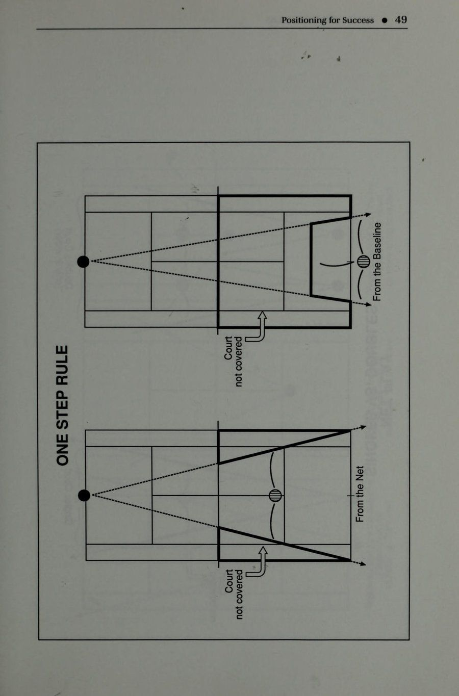
Định vị để thành công @ e184 WO) s}Jous AueW UO UMOP UBD SIBAPIq JON OY} WO payybis sejbuy e194 WO ,dn, sijeq jsow Wy ysnwW suehe|q UNoopIW Wo. pelyBbis sejbuy e1ey WO, ,dn,, sijeq |e Wy JsNnw Sidhe} euljeseg eu} WOJ) peyubis sejbuy
TÌM HIỂU CÁC GÓC Để hiểu rõ hơn lý do tại sao việc chơi trên lưới là có lợi nhất trong đánh đôi sẽ đòi hỏi sự hiểu biết về các góc. Lần tới khi bạn ra sân, hãy đặt mình ở vị trí cuối sân và dán mắt vào đầu lưới trước mặt bạn. Từ đây, phần duy nhất của sân có thể nhìn thấy được ở phía bên kia sẽ là phần được nhìn thấy bên dưới hoặc qua lưới. Nếu lưới bị che phủ hoàn toàn hoặc bị chặn lại, bạn thậm chí sẽ không thể nhìn thấy đường biên cuối sân của đối phương! Hãy để mắt đến phía trên của lưới và từ từ đi theo hướng của nó. Khi bạn đến gần lưới, hãy chú ý xem phần sân ở phía bên kia bắt đầu phát triển như thế nào. Tiếp tục đi về phía trước và sân đấu dường như ngày càng rộng hơn. Bây giờ bạn có thể bắt đầu nhìn xuống lưới mà không cần phải gian lận bằng cách nhìn qua nó để xem sân. Đây là lý do tại sao những người chơi hàng đầu trong trò chơi đều cố gắng vào lưới. Họ nhận ra rằng có nhiều sân hơn để họ đánh vì họ hiểu các góc của sân. Đánh đôi thực sự không phải là một trò chơi hiệu quả từ đường cuối sân vì không có cơ hội để đánh bại từ đó; các góc độ của sân không cho phép điều đó. Khi đội của bạn hiểu được các góc độ, bạn sẽ có thể kiểm soát tốt hơn các điểm mình chơi. Những quả bóng đánh rộng thường bay ra xa, trong khi những cú đánh ở giữa sân dễ dàng bị trả về giữa sân. Để cản trở một đội chuyền bóng giỏi, chỉ cần giữ nhiều bóng hơn ở giữa sân của họ để loại bỏ những góc mà họ có thể chơi. Thành công tốt nhất của một cú giao bóng và cú vô lê thậm chí có thể đến bằng cách đơn giản là giao bóng cho tất cả các quả bóng ở giữa sân để buộc nhiều quả bóng quay trở lại trung tâm hơn. Điều này cho phép người đánh lưới có cơ hội bắt bài cắt bóng (poach) dễ dàng hơn một chút vì nhiều quả bóng sẽ được trả lại ở giữa sân và không nằm ngoài tầm với của anh ta. Một góc độ quan trọng khác cần xem xét là vị trí đứng để trả giao bóng. Thế đứng đúng phải ở giữa góc được tạo bởi người giao bóng và ô giao bóng mà anh ta đang giao bóng. Vẽ một đường tưởng tượng giữa bạn và máy chủ và nó sẽ chia đôi hộp dịch vụ khi bạn ở đúng vị trí. Nếu không được chia đôi một cách hợp lý, bạn có thể đang mời một quân át xuất hiện!
Định vị để thành công @ 53 'pulyaq 19A0I O} WIIY YIM saaouw ApyIINb 'zjnNT Gog '"aulsed siy 'peaysaao [eq ay} Aejd 0} Suluolisod si yjug uelg ajilyM
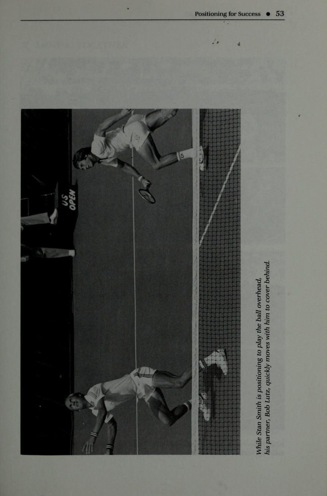
Khi Robert Seguso thực hiện cú vô lê, hãy chú ý rằng Ken Flach chuyển sang che chắn phần sân bị bỏ trống. Hiếm khi hai người này được tìm thấy trong đội hình “T”.
Định vị để thành công @ Q CHUYỂN ĐỘNG CÙNG NHAU n ‘ Những người chơi học cách “di chuyển theo bóng” sẽ thấy mình ở đúng vị trí để che chắn cho các cú đánh của đối thủ thường xuyên hơn. Bằng cách di chuyển với những quả bóng có góc đánh rộng, người chơi sẽ làm giảm cơ hội chuyền bóng của đối thủ vào con hẻm. Tuy nhiên, khi một đấu thủ di chuyển và người kia vẫn đứng yên, một lỗ hổng sẽ xuất hiện ở giữa sân. Với những người chơi cấp thấp hơn, lỗ này thường lớn đến mức một chiếc xe tải chở hàng có thể chạy qua nó! Vì phần thấp nhất của lưới nằm ở giữa sân và hầu hết các cú đánh đôi đều được thực hiện ở đó, điều cực kỳ quan trọng là các cầu thủ phải di chuyển cùng nhau để loại bỏ các lỗ hổng và khoảng trống có thể được tạo ra khi đặt vị trí không đúng. Cách tốt nhất để hình dung chuyển động của nhóm bạn là nghĩ rằng có một sợi dây được buộc giữa bạn. Khi một trong hai người bị kéo ra xa để đánh, người còn lại sẽ dịch chuyển khoảng cách bằng nhau về phía tâm theo cùng một hướng. Sau khi cú đánh được thực hiện và đối tác của bạn quay trở lại vị trí, bạn cũng sẽ khôi phục lại vị trí ban đầu của mình. Thủ thuật dây này cũng nên được áp dụng cho chuyển động tiến và lùi của đội bạn trong khi chơi. Khi một người rút lui để thực hiện một cú lốp bóng, cả hai nên quay lại để che nó. Và khi một người tiến vào lưới, cả hai phải vào cùng nhau như một đội. Q& CÂN BẰNG TÒA Các đội học cách chơi song song sẽ mạnh hơn những đội thích đội hình chung một lên/một lùi. Tại sao? Có một khu vực đường chéo rất lớn bị bỏ ngỏ khi người chơi loạng choạng một người lên và một người lùi lại. Các đội đối phương có thể nhanh chóng tận dụng đội hình bất lực này bằng cách hướng các cú đánh theo góc cạnh giữa họ. Để cân bằng sân tennis một cách hợp lý, người chơi phải nhận thức được các "khu vực" được chỉ định và cung cấp phạm vi bao phủ cho họ. Cũng giống như các tiền vệ phòng ngự trong bóng đá và các cầu thủ ngoài sân trong bóng chày, người chơi đánh đôi sử dụng phạm vi bao phủ khu vực để định vị chính xác nhằm che tất cả các quả bóng trong khu vực thi đấu. Khi một người chơi rời khỏi vị trí, điều quan trọng là người kia phải giúp che chắn khu vực không bị phòng thủ. Quả bóng sẽ là của ai khi một cú lốp bóng vượt qua đầu của một trong những người chơi trên lưới? Ban đầu, đó là trách nhiệm của người chơi
e@ 'Jau ay) Te pauonisod ajiym aoueyeq Jafsad uy ase Aay} MOY ANON 's4eak 9Y} uaao ured sajqnop paxiu jnfssazons e uaaq aaey pAo]T uyor pue jjnquuny, Apuam
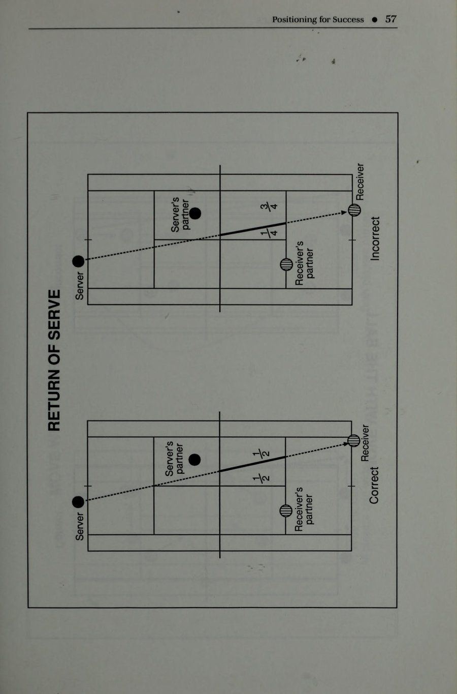
Định vị để thành công @ 57 $JONIS s JOAIB09Y JOAIBOOY @ 22s AAYAS SAO NYNLAY i)
T1V8 AHL HLIM SAOW }091109
Định vị để thành công @ 59 jeauje1 suaXeid ujog epiMm YWIYs suaAeld |IV qo7] SIIEG WH SPI YANLYVd YNOA HLIM SAOW
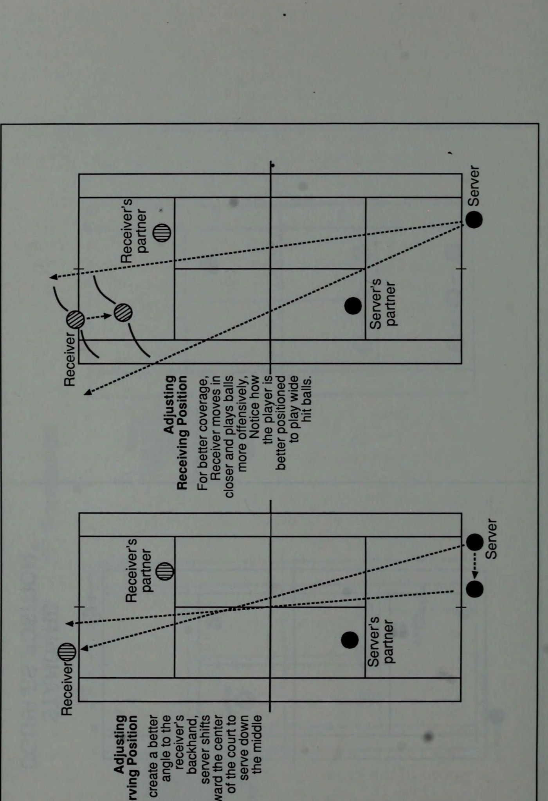
JON 9} 0} JOSO|D Bulaop JON Ou} 0} Buiw09 YANLYVd YNOA HLIM SAOW
Chọn vị trí để thành công @ người có bóng đánh đầu thành công. Tuy nhiên, nếu anh ta nhanh chóng quyết định rằng mình không thể lấy được bóng và kịp thời truyền đạt câu “Của bạn” cho đồng đội một cách chính xác, thì quả bóng sẽ thuộc trách nhiệm của đồng đội hỗ trợ. Điều này giả định rằng cú lốp bóng đã làm sạch đầu của người lưới theo một đường thẳng, điều này làm cho việc tiếp cận bóng của đối tác từ bên cạnh có một góc tốt hơn và cú đánh dễ thực hiện hơn. "Đội hình I" là mối đe dọa mất cân bằng lớn nhất đối với người chơi và các đội nên học cách đề phòng nó. "Đội hình I" xảy ra khi một đấu thủ ở vị trí phía trước người kia và nửa sân còn lại bị bỏ trống. Khi một đấu thủ chuyển vị trí của mình sang phía bên kia sân sau một cú đánh, đồng đội phải giữ nguyên sự cân bằng của đội bằng cách di chuyển qua để che chắn cho phía còn trống. Khi thông báo "Đổi" nhanh chóng, người chơi sẽ nhận ra khu vực nào họ sẽ đảm nhiệm và di chuyển để cân bằng thế trận sân Hỏi & ĐỌC BÓNG Để có vị trí tốt nhất cho những cú đánh bạn sắp thực hiện, hãy học cách ''đọc bóng''. Nó thường sẽ cho bạn biết liệu đội của bạn có nên tiến về vị trí tấn công hay ra hiệu cho bạn rút lui để phòng thủ ngay cả trước khi đối thủ của bạn đánh bóng. Bằng cách dự đoán những gì quả bóng sẽ buộc đối thủ của bạn làm, bạn có thể đạt được tầm nhìn xa có giá trị để xác định vị trí tốt nhất của mình hết lần này đến lần khác. Những quả bóng được đặt sâu trong sân cho đối thủ của bạn, đánh mạnh vào họ hoặc có nhiều xoáy sẽ cho thấy bạn kiểm soát được điểm và cho phép tự do di chuyển vào và kiểm soát lưới. Bóng đặt thấp hơn chân đối thủ, đối thủ yếu hơn, hoặc cú đánh yếu hơn sẽ là dấu hiệu để đội bạn thay đổi vị trí để tận dụng những gì có thể xảy ra. Mặt khác, các cú đánh ngắn, yếu hơn hoặc đánh nhẹ nhàng mang lại khả năng kiểm soát điểm cho đối thủ của bạn. Cách phòng thủ tốt nhất của bạn có thể là rút lui về phía sau hoặc chuẩn bị tinh thần cho một cú tấn công được dự đoán trước sẽ đến với bạn. Luôn để mắt đến bóng của tất cả các cầu thủ trên sân. Xem tác động của nó đối với từng loại và cách mọi người phản ứng với nhiều tốc độ, độ nảy và vị trí khác nhau của nó. Nhận thức của bạn về cách kiểm soát bóng trên sân chắc chắn sẽ giúp bạn trở thành một tay vợt đánh đôi thông minh như bạn mong muốn.
siaAeid ay} UVeMjeg pe}easD SajOH gourjeg JO INO yoeg aud / dp eauo i OP
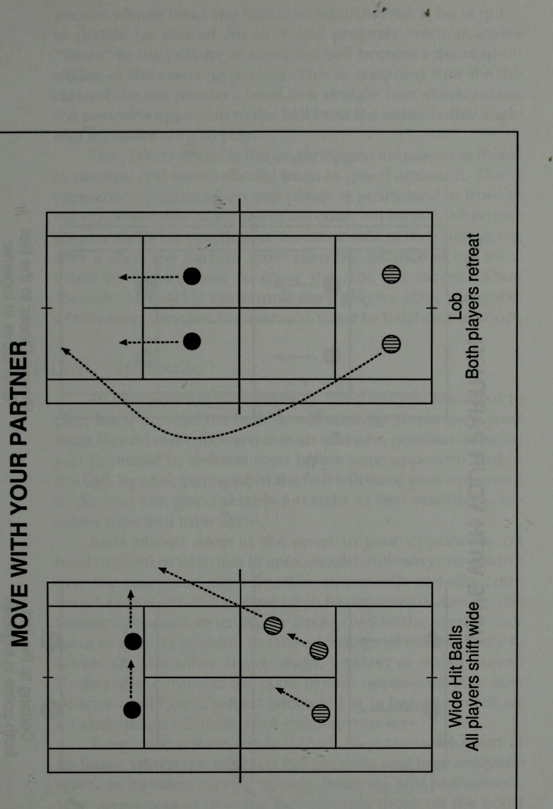
Định vị để thành công @ Ngay cả khi đối tác của bạn đánh bóng, hãy để mắt đến vợt của anh ấy (nhanh chóng liếc qua vai nếu anh ấy ở phía sau bạn). Bạn sẽ phản ứng tốt hơn với cú đánh mà anh ấy sắp thực hiện khi bạn học cách dự đoán quả bóng sẽ khiến đối tác của bạn làm gì. Khi bạn thấy bóng đã cho phép anh ta thực hiện cú sút hiệu quả hơn, hãy di chuyển trước khi đối thủ của bạn có cơ hội đáp trả. Bạn sẽ có thể tận dụng được vị trí được tạo ra khi đọc bóng thành công. Bạn cũng sẽ khám phá ra rằng bạn sẽ tự động trở nên nhanh hơn rất nhiều vì bóng sẽ có vẻ dễ tiếp cận hơn khi bạn luôn ở vị trí lý tưởng. Hỏi & ĐIỀU CHỈNH VỊ TRÍ CỦA BẠN Một trong những sai lầm phổ biến nhất trong đánh đôi là người chơi luôn giữ nguyên một vị trí trên sân mỗi khi họ thi đấu. Họ thường xuyên đứng để giao bóng từ cùng một vị trí, nhận bóng từ vị trí yêu thích của họ mỗi lần và khi đối tác của họ giao bóng hoặc nhận bóng, họ sẽ neo mình vào vị trí đã thiết lập của họ hết lần này đến lần khác. Điều mà những người chơi này cần hiểu là không phải tất cả người chơi đều giống nhau, và các vị trí khác nhau mà họ đảm nhận trên sân đánh đôi sẽ khác nhau tùy theo những người chơi khác nhau mà họ thi đấu. Những người mới bắt đầu chơi trò chơi đánh đôi sẽ học cách đứng trên sân để có vị trí thích hợp cho từng vai trò mà họ sẽ đảm nhận. Với tư cách là người giao bóng, người chơi thường được dạy phải đứng sau đường biên rộng hơn so với trong một trận đấu đơn, vì giờ đây họ đã có một đối tác để giúp bao quát nửa sân còn lại. Đối tác của máy chủ được đặt ở khoảng giữa hộp dịch vụ trên mạng. Người nhận bóng ở phía đối diện trên đường cuối sân (hoặc phía sau một bước) trong khi đối tác của người nhận bóng đứng ở giữa vạch giao bóng ở ô giao bóng liền kề. Từ đây họ được dạy chơi game và khá thường xuyên, từ đây họ tiếp tục chơi game… suốt đời! Thực sự không có vị trí nào đúng trong đánh đôi. Vị trí tốt nhất trong đánh đôi sẽ đến từ việc sử dụng cái đầu của bạn! Đừng cố định ở cùng một vị trí để giao bóng mỗi lần, hãy thay đổi vị trí của bạn để có được góc độ và kết quả tốt nhất có thể. Với tư cách là người nhận, vị trí của bạn rất có thể sẽ được quyết định bởi vị trí và khả năng của người giao bóng. Phân tích cú đánh của cô ấy để tìm ra vị trí lý tưởng để nhận đòn. Là đối tác của máy chủ
(pasdA09 Ayyenba Sepis yjOg) JUBDBA Yo| @PIS By} BAC 0} pey!ys JOJO 94} uoI}eUO4 @ ‘ UOfeUoy ,,|,, (jUedeA wnoo 8U}JO eps eu) Aseuoiyeys JOYJO Ou} nq peylys
Định vị để thành công @ NOILISOd S31ENOd GYVGNVLS ee
) MOY 99dI}ON ‘AJOAISUBJO GJOW . . s . s s s s s s JOAQ00Y s J8NaS 8|PP!ILW 9} UMOP OAJ@S 0} NOD au} JO 4J9]U99 8} PYeMO} SUIS 18/U8S 'pueyyoeq S$ JOAIB001 9u} 0} aj6ue JayJoq & eyeal0 OL UuOd!I}ISOdg BulAsas Bursn[py JOAB09Y
Định vị để Thành công @ và người nhận, di chuyển vào khi thời điểm cần gây hấn và lùi lại khi chơi phòng thủ. Tuy nhiên, hãy học cách kiềm chế không chỉ đơn giản là “cắm trại” ở cùng một địa điểm mỗi lần. Người giao bóng gặp khó khăn khi chơi những cú giao bóng hiệu quả ở giữa đối với các cú đánh trái tay hoặc cú đánh yếu hơn của người nhận nên đặt mình gần điểm giao bóng trung tâm hơn nhiều khi giao bóng. Họ không cần phải lo lắng quá nhiều về việc bao quát phần sân của mình vì một cú đánh trái tay từ trong ra ngoài hoặc ngược chiều chéo bàn (hoặc bên yếu) là một cú đánh cực kỳ khó để đối thủ của họ thành thạo. Người nhận cũng nên tìm cách thay đổi vị trí của mình bằng cách di chuyển vào càng gần vạch cuối sân (baseline) càng tốt. Thông thường, người ta thấy người chơi nhận bóng từ vị trí không hiệu quả, chậm vài bước so với đường cuối sân. Từ đây, người nhận không chỉ gặp khó khăn hơn trong việc thực hiện các cú trả đòn tấn công mà còn mang lại cho người giao bóng lợi thế là có thể kéo người nhận ra khỏi vị trí trong những cú đánh rộng. Những quả bóng “đá” với độ xoáy lên tốt cũng buộc những người nhận bóng ở vị trí quá xa phải phản ứng khó khăn khi họ cố gắng chơi bóng ở độ cao ngang vai. Khi người nhận di chuyển vài bước bên trong đường cuối sân, anh ta có thể thực hiện quả giao bóng sớm và gửi lại sớm hơn khiến đội giao bóng có ít thời gian chuẩn bị hơn. Điều này đặc biệt đúng đối với những cú giao bóng thứ hai. Khi người giao bóng bỏ lỡ quả giao bóng đầu tiên, đội nhận giao bóng phải bắt họ trả tiền! Sau đó, đội nhận giao bóng phải cùng nhau tiến lên và gây áp lực lên đội giao bóng bằng cách đánh họ vào lưới. Chiến lược này thường sẽ làm tăng số lượng lỗi kép khi người giao bóng cố gắng kết thúc “nỗ lực chiếm đoạt mạng” bằng cách giao bóng sâu hơn hoặc mạnh hơn mức mà anh ta cảm thấy thoải mái. Các đối tác trên mạng thường điều chỉnh vị trí của họ khi xem những cú đánh nào đã được thực hiện. Họ bước về phía con hẻm với những cú đánh rộng hơn và tiến về phía trung tâm với những quả bóng được chơi ở giữa sân. Họ tìm cách di chuyển nhiều hơn khi lối chơi không lốp bóng tồn tại và lùi lại một chút để che chắn khỏi cú lốp bóng khi nó được sử dụng thường xuyên. Họ thay đổi mức độ cường độ khi ở tư thế sẵn sàng để phù hợp với tốc độ của trận đấu đang diễn ra. Họ thậm chí sẽ thay đổi hoàn toàn vị trí lập trường của mình bằng cách tham gia cùng đối tác của họ trên vạch cuối sân (baseline) nếu chiến lược của họ đòi hỏi một kế hoạch phòng thủ như vậy.
Định vị để thành công @ Q NHÂN ĐÔI SÁNG TẠO q? . Thông thường, sự thay đổi đội hình chính xác là những gì bác sĩ (chuyên gia địa phương) yêu cầu và có thể được sử dụng để xoay chuyển hoàn toàn cục diện trận đấu. Khi các kiểu chơi đã được thiết lập và các xu hướng được phát hiện, hãy tìm cách thay đổi chúng và kiểm soát lối chơi bằng cách thay đổi vị trí của đội bạn. Nó có thể là chiến lược cần thiết để đưa đội của bạn trở lại con đường chiến thắng. Đánh đôi Úc là một công cụ tuyệt vời để sử dụng để 'hạ gục' đối thủ của bạn. Người giao bóng sẽ đứng gần điểm giao bóng ở giữa phía sau vạch cuối sân trong khi đối tác của anh ta chuyển sang đứng ở ô giao bóng khác. Với đội hình mới này, cú đánh chéo sân yêu thích của người nhận bóng sẽ bị loại bỏ và anh ta buộc phải thực hiện cú trả bóng ở đường biên khó khăn hơn. Đây là một cách hiệu quả để khiến đối thủ của bạn mất thăng bằng bằng cách xáo trộn lối chơi và buộc họ phải thực hiện những pha đáp trả không thoải mái. Sau khi họ đã ổn định và cảm thấy “có hứng thú” khi thi đấu với đội của bạn ở vị trí mới này, hãy chuyển trở lại vị trí thông thường của bạn. Tiếp tục kiểm soát trận đấu bằng cách chuyển đổi qua lại từ vị trí thông thường sang vị trí Úc cho đến khi đối thủ của bạn hoàn toàn không thoải mái với lối chơi của họ. Khi mọi cách khác đều thất bại và đội của bạn thấy mình đang chùn bước trầm trọng, hãy tìm cách đổi phe với đối tác của bạn khi kết thúc hiệp đấu. Thay đổi mới này có thể là câu trả lời cho những khó khăn của nhóm bạn. Bạn thậm chí có thể thay đổi đối tác nào giao bóng trước trong nhóm mới. Bằng cách học cách thử nghiệm nhiều hơn một chút, bạn có thể khám phá được nhiều thành công hơn nhờ sự sáng tạo của chính nhóm mình! Q TÓM TẮT Đưa bản thân và đồng đội của bạn lên lưới. Đạt được khả năng tốt nhất của bạn bằng cách sử dụng vị trí ròng để làm lợi thế cho bạn. Hiểu cách lấy và sử dụng các góc để đánh đôi thành công. Di chuyển vào vị trí thích hợp với đối tác của bạn bằng cách hình dung một sợi dây buộc giữa bạn. Đừng để những lỗ hổng, khoảng trống xảy ra khi di chuyển độc lập với nhau. Cân bằng sân bằng cách chơi song song với nhau. Tránh “I Formation” như bệnh dịch hạch! Một số lối chơi thông minh nhất của bạn sẽ đến từ việc “đọc bóng” hiệu quả.’” Hãy tìm hiểu xem nó ảnh hưởng như thế nào đến mọi người trên sân.
sân đấu để dự đoán thành công vị trí chính xác. Thay đổi vị trí mà bạn và đối tác đảm nhận bằng cách điều chỉnh vị trí đó cho phù hợp với những đối thủ khác nhau mà bạn đang cạnh tranh. Vị trí lý tưởng cho nhóm của bạn sẽ được tìm thấy bằng cách sử dụng cái đầu của bạn để khám phá nó. Hãy sẵn sàng thay đổi hoàn toàn vị trí của bạn nếu cần thiết để giành quyền kiểm soát trận đấu. “Giải quyết mọi vấn đề” bằng cách học cách phát huy khả năng sáng tạo của nhóm bạn. Thành công của bạn có thể chỉ phụ thuộc vào nó! :
5. Đạt được kết quả nhất quán: Tư duy Tỷ lệ phần trăm cao
CHƯƠNG 5 Đạt được kết quả nhất quán & TỶ LỆ LÀ ĐÔI CƠ BẢN Đội chơi theo tỷ lệ đôi sẽ có tỷ lệ cược thuận lợi nhất để thi đấu tốt một cách nhất quán. Những người chơi hiểu và áp dụng các nguyên tắc cơ bản của cách chơi đôi âm thanh sẽ liên tục nằm trong vòng tròn của người chiến thắng. Hiểu những kiến thức cơ bản về đánh đôi và áp dụng chúng vào trò chơi của riêng bạn: 1. Máy chủ tốt hơn sẽ giao bóng trước. Đội của bạn cần có một khởi đầu tốt và nếu hiệp đấu kết thúc, điều này sẽ cho phép máy chủ tốt hơn giúp đội của bạn giành chiến thắng cuối cùng. 2. Đạt được Tỷ lệ phần trăm cao của những quả giao bóng đầu tiên. Các số liệu thống kê chứng minh rằng bạn sẽ giành được nhiều điểm hơn khi thực hiện những quả giao bóng đầu tiên. Điều đó cũng giúp duy trì áp lực lên đối thủ của bạn. 3. Giao bóng ở giữa sân. Hạn chế góc của người nhận bóng bằng cách buộc họ phải giữ quả bóng ở giữa sân. Điều này cũng sẽ tạo cơ hội cho đối tác của bạn bắt bài cắt bóng (poach). 4. Giữ giao bóng! Nếu đội của bạn không thua giao bóng, bạn không thể thua trận đấu! Thật đơn giản. 5. Phấn đấu đạt được lợi nhuận nhất quán. Nhận tất cả lợi nhuận trở lại chơi. Đừng tặng điểm cho rg
đối thủ của bạn mắc lỗi trả về. Xử lý các cú trả giao bóng một cách cẩn thận như bạn thường làm với các cú giao bóng thứ hai. 6. Giữ bóng ở giữa sân. Lưới ở đó thấp hơn và nó làm mất đi góc nhìn của đối thủ. 7. Lob nếu nghi ngờ. Nó có thể là cách phòng thủ tốt nhất của bạn trước lối chơi hung hãn. Nó cũng có thể giúp nhóm của bạn loại bỏ lỗi. 8. Tiếp quản mạng. Sử dụng vị trí trên lưới để tạo lợi thế cho đội của bạn bằng cách đánh xuống từ đó để giành điểm. 9. Đội nào có ít lỗi nhất sẽ thắng! Không phải người chiến thắng mới thắng trận đấu, đó là cách chơi không có lỗi. 10. Thay đổi một ván thua và không bao giờ có ván thắng. Học cách thay đổi trò chơi của bạn để làm những gì cần thiết để giành chiến thắng. & SỬ DỤNG CÁC CÚT ĐÁNG TIN CẬY Những quả bóng bị nghiền nát bởi những cú xoay gió lớn và nhắm gần đường biên sẽ có rất ít cơ hội tạo ra kết quả ổn định trong quần vợt. [Chính những cú xoay người chậm, đều đặn và tự tin sẽ mang lại thành công trên sân. Sự nhất quán kết hợp với lối chơi quyết liệt là sự kết hợp mang tính chiến thắng cần thiết trong các trận đánh đôi. Hai cú đánh bắt đầu tính điểm trong quần vợt cho mỗi đội là giao bóng và trả giao bóng. Điều đặc biệt quan trọng là phát triển những cú đánh đáng tin cậy với cả hai điều này. Những cú đánh ổn định và chính xác nhất khi đội của bạn bắt đầu điểm thường sẽ ghi được kết quả ổn định nhất về cuối. Cho phép đội kia đánh bạc bằng cách đi theo hàng và cố gắng ghi điểm nhanh chóng với những người chiến thắng không cần thiết; hãy tránh lối chơi này đi. Những quả giao bóng bằng súng thần công nên được dành cho sân đánh đơn để bạn cố gắng ghi được tỷ lệ phần trăm cao hơn’ Trong số những quả giao bóng đầu tiên trong trận đấu. Khi quả giao bóng đầu tiên liên tục rơi vào ô giao bóng, đối thủ sẽ cảm thấy thất vọng. Tuy nhiên, khi quả giao bóng đầu tiên bị chùn bước, đối thủ sẽ thư giãn và trở nên tự tin với cú trả giao bóng thứ hai của họ. Đối thủ của bạn không chỉ bị giảm áp lực khi quả giao bóng đầu tiên của bạn bị trượt mà còn làm hao mòn sức lực của bạn.
Đạt được kết quả nhất quán @ 73 khiến cơ thể bạn mệt mỏi khi trận đấu diễn ra vì bạn phải cố gắng giao nhiều bóng hơn. Những người chơi có cú giao bóng thứ hai "bánh kem" nên cố gắng phát triển những cú giao bóng có nhịp độ trung bình đáng tin cậy hơn, hiệu quả hơn và ít bị tổn thương hơn. Tuy nhiên, đừng ngại thử các cú đánh trong quần vợt, hãy chơi với chính mình. Chơi trò chơi mà bạn tự tin và có khả năng. Tránh những canh bạc không cần thiết và những rủi ro vô lý khi chơi. Hãy nhớ rằng sức mạnh đến sau việc bố trí và kiểm soát trong các trận đánh đôi. Sử dụng những cú đánh đáng tin cậy nhất và đội của bạn sẽ đạt được kết quả nhất quán mà bạn mong muốn. Q ĐẶT BÓNG ĐỂ THÀNH CÔNG Mọi cú đánh trong quần vợt nên được đánh có mục đích trong đầu. Người chơi phải hình dung mục tiêu trước khi thực hiện cú đánh để đạt được thành công với việc đặt bóng. Các quả bóng không được hướng một cách bừa bãi về phía sân với hy vọng vận may sẽ được xác định trước hoặc định hướng trước, nếu bạn muốn, bởi những người chơi liên quan bằng cách liên tục tìm kiếm điểm yếu. đã phát hiện ra chúng, bạn có thể đặt cược rằng quả bóng sẽ được hướng một cách khéo léo đến những điểm yếu này. Rõ ràng, những cầu thủ thông minh như vậy hiểu và kiểm soát bóng nhưng họ đã đưa trò chơi của mình lên một tầm cao mới. Họ đã học cách phát hiện và khai thác những điểm yếu của đối thủ. Tâm trí của bạn, tức là chiếc máy tính, có thể được lập trình để tính toán trước một số nước đi giống như một người chơi cờ vua với việc lập kế hoạch trước về hướng đánh của mình, tâm trí của bạn sẽ tránh được những lo lắng thông thường như “Bây giờ quả bóng nên hướng về đâu?” trong khi thi đấu. Khi điểm yếu của đối thủ đã được phát hiện và bạn cùng đồng đội đã lên kế hoạch cho chiến lược phù hợp, việc đưa bóng đến đó một cách tự động và có chủ đích sẽ dễ dàng hơn. Nếu sau đó những điểm yếu mới được phát hiện, hãy lập lại kế hoạch của bạn một lần nữa với đối tác và lập trình lại tâm trí của bạn cho một kế hoạch tấn công mới. Các mục tiêu mới phải được lập trình trong suy nghĩ của bạn để bạn và đối tác của mình có thể chuẩn bị sẵn sàng
để đặt bóng một cách chiến lược và tự động vào các mục tiêu đó trong khi chơi. & KHÔNG CÓ CÚ ĐÁNH DỄ DÀNG nào Sự khác biệt về trình độ của những người chơi quần vợt thường được đo lường không phải bằng cú đánh của họ mà bằng khả năng (hoặc không có khả năng) xử lý “những cú đánh dễ dàng” một cách hiệu quả. LỖI KHÔNG CẦN THIẾT GIẾT! Họ sẵn sàng phá hỏng trận đấu của mọi người chơi quần vợt và khá nguy hiểm khi tấn công. Cách phòng vệ tốt nhất của bạn để chống lại điều này là rèn luyện sự tập trung cũng như nhận thức của bạn về những gì đang diễn ra trên sân tennis. Đừng để những lỗi thông thường phá hủy trò chơi của bạn. Họ sẽ giúp bạn đánh bại chính mình nếu bạn để họ làm vậy. Những người chơi trong trò chơi đánh đôi thường biểu diễn với cường độ và sự nhiệt tình của những võ sĩ đầy tinh thần. Họ buộc tội sân đấu và thử thách bản thân trước nhiều nhiệm vụ khó khăn mà họ phải đối mặt. Họ thường sẽ nắm bắt cơ hội khi được yêu cầu, nhưng đồng thời có thể thả lỏng cảnh giác khi thử thách trở nên kém hấp dẫn hơn. Tất cả những ai đã từng chơi trò chơi này đều đã trải qua một số dạng mất tập trung. Người chơi có xu hướng mất lợi thế chiến đấu khi cường độ của họ bắt đầu tụt dốc và ham muốn của họ thường giảm theo đó. Những người chơi này có thể tỏ ra khá sắc bén khi trận đấu đảm bảo điều đó nhưng hãy để lối chơi buồn tẻ, ít đòi hỏi hơn xảy ra sau đó và chứng kiến những người chơi tương tự này sa sút. Người chơi nói chung có xu hướng chơi trò chơi quá căng thẳng và thường bỏ lỡ các cú đánh khi họ lao qua chúng trong quá trình vuốt ve. Những người chơi quá căng thẳng này thường phát hiện ra rằng họ sẽ liên tục bỏ lỡ những câu dễ khi cố gắng chơi quá mức; nghĩa là cố gắng làm nhiều việc với quả bóng hơn mức cần thiết. Ví dụ, những người trông nom dễ dàng di chuyển trên lưới, chỉ cần yêu cầu chạm bóng vào phần sân rộng rãi để giành điểm. Thay vào đó, những người chơi mạnh mẽ cố gắng giết bóng bằng những cú xoay người mạnh mẽ. Họ sẽ thành công hơn nhiều trong trò chơi bằng cách học cách kết hợp nỗ lực với nhiệm vụ. Đừng chơi bóng quá mức - điều đó chỉ mang lại kết quả không nhất quán (đặc biệt với những cú đánh dễ dàng). Sự tập trung và cường độ phải được giữ ở mức cao nhất có thể kiểm soát được trong tất cả các lần chụp. Những cú đánh dễ dàng hoặc thông thường cần được đặc biệt chú ý vì đây là nơi phát sinh các lỗi không thể khắc phục. Tránh chơi đùa bình thường trong-
Đạt được kết quả nhất quán @ 75 cho bản thân và nhóm của bạn. Nếu bạn phải phạm sai lầm, hãy chắc chắn rằng lối chơi ép buộc của đối thủ là nguyên nhân. Mọi người đều mắc lỗi trên sân, nhưng bạn có thể hạn chế lỗi của mình bằng cách thực hiện tất cả các cú đánh với cùng mức độ tập trung cao độ. Bạn sẽ khám phá ra một trò chơi lành mạnh hơn khi bạn đã loại bỏ được rất nhiều lỗi không đáng có. Q BỎ LỖI ĐẶT HÀNG! Một trong những tội lỗi lớn nhất mà người chơi đánh đôi phạm phải là khi anh ta ở vị trí đáng ghen tị trên lưới và có thể giành được điểm nhưng sau đó không tận dụng được điểm đó. Những ''người trông nom'" này không chỉ thường mắc sai lầm (như chúng ta đã thấy), mà bóng còn bị đánh sai trực tiếp vào đối phương. Điều này mang lại cho họ một cơ hội khác để giành điểm và nó cũng làm giảm cơ hội có một cơ hội vàng khác để tự mình giành chiến thắng! "Đưa bóng đi" không giống như thực hiện một "cú sút kết liễu". Nó có nghĩa là đặt bóng một cách trơn tru và an toàn để giành điểm một cách nhất quán. Khi đặt đúng vị trí trên lưới, bóng cao phải hướng vào một trong ba vị trí: 1) vào người trên lưới; 2) giữa hai đối thủ; hoặc 3) có góc rộng. Một sai lầm phổ biến của những người chơi trên lưới là gửi lại một cú vô lê chiến thắng cho người chơi ở đường biên đang chờ. Vì người này ở xa quả bóng nhất nên về mặt logic, anh ta có nhiều thời gian nhất để phản ứng với nó. Người ở vị trí gần lưới hơn có thời gian phản ứng ít hơn nhiều và do đó là người lý tưởng để hướng bóng tới. Khi quả bóng được đặt dưới chân anh ta, anh ta khó có thể thực hiện bất kỳ kiểu chơi nào với nó, chứ đừng nói đến một pha chơi tốt. Bằng cách đặt mình gần lưới hơn, bạn sẽ thấy việc đưa bóng đi dễ dàng hơn nhiều. Những quả bóng cao tạo cơ hội cho bạn đánh xuống sẽ phổ biến hơn và những quả bóng cao cũng không có khả năng đến chân bạn từ đây. 1/3 đến 1/2 phía trước của hộp dịch vụ là vị trí lý tưởng để đứng. Từ đây, bạn vẫn có thể lốp bóng hiệu quả cũng như tiến về phía trước một cách mạnh mẽ để tung cú vô lê về phía trước. Học cách bỏ đi những khoảng trống là điều quan trọng để nâng cao trình độ chơi của đội bạn. Sử dụng toàn bộ chiều rộng của sân để tạo ra góc tốt nhất để giành điểm. Sử dụng sự an toàn và sai số để đặt bóng một cách chính xác và có kiểm soát. Đánh bóng không phải vào đối thủ của bạn mà tránh xa họ. làm như vậy
bằng trí thông minh chứ không phải sức mạnh để giành được vị trí chiến thắng nhất quán. Q TRÁNH CHƠI NÓNG/LẠNH Bạn đã bao giờ trải qua một ngày mà mọi thứ: bạn cố gắng trên sân đều thành công nhưng ngay ngày hôm sau lại chẳng có tác dụng gì? Điều này có thể được mô tả một cách khéo léo như một trận quần vợt nóng/lạnh - những màn trình diễn không nhất quán. Mọi người đều có những ngày tốt và xấu trong lối chơi của mình, tuy nhiên, để trở thành đội tốt nhất mà bạn có khả năng sẽ đòi hỏi cả hai bạn phải hiểu cách hạn chế màn trình diễn “ngày tồi tệ” của mình. Con người không thể tránh khỏi sai lầm. Tuy nhiên, chỉ sau khi những lỗi lặp đi lặp lại thì chúng mới trở thành sai lầm trong quần vợt. Những người chơi học được từ những sai lầm của mình sẽ không tiếp tục lặp lại chúng nữa. Họ cũng sẽ không trải qua nhiều "ngày nghỉ" vì tâm trí của họ nhận thức được những gì đang xảy ra trong khi chơi và họ có thể thực hiện những điều chỉnh cần thiết cho trò chơi của mình. Đánh đôi không phải là trò chơi sức mạnh mà là sử dụng tốc độ một cách thông minh. Khi người chơi cố gắng thực hiện cú "home run" trong mỗi cú đánh, họ sẽ phát hiện ra hội chứng "đánh hoặc trượt". Mặc dù Babe Ruth vĩ đại là một vận động viên bóng chày về nhà huyền thoại, nhưng anh ấy cũng giữ kỷ lục về cú đánh trúng đích! Điều này nói lên điều gì về sự kiên định của anh ấy?! Khi một cặp đôi học cách bổ sung cho nhau, họ có lá chắn tốt nhất chống lại lối chơi nóng/lạnh. Khi một người đánh lỗi và mắc lỗi, người kia cần thực hiện tỷ lệ đánh bóng cao hơn để bù đắp cho lối chơi kém cỏi của đồng đội. Nên tránh những cú đánh trong hẻm, những góc thả khó hoặc những cú đánh có lực mạnh vào thời điểm này. Nhiệm vụ của đối tác là đưa đội trở lại đường đua chiến thắng bằng cách đưa thêm một vài quả bóng vào cuộc và trong quá trình đó giúp đồng đội của mình lấy lại nhịp điệu. Trò chơi này có thể chỉ được yêu cầu để có được một vài điểm hoặc có thể là cả trận đấu. Người chơi phải sẵn sàng điều chỉnh lối chơi của mình tùy theo tình huống yêu cầu và nhu cầu của đội. . Khi những người chơi của một nhóm có trình độ khác nhau, mỗi người sẽ có một công việc phải làm để giúp đội hoạt động tốt một cách nhất quán. Cầu thủ hoặc đội trưởng mạnh hơn của đội nên chịu trách nhiệm bằng cách di chuyển lưới nhiều hơn, ép buộc đối thủ và kết thúc điểm bằng các cú sút xa. Người chơi yếu hơn
Đạt được kết quả nhất quán @ 77 cũng có một nhiệm vụ quan trọng cần thực hiện. Anh ấy lốp bóng nhiều hơn, kiên định trong việc giữ bóng trong cuộc nhất có thể và tuân theo kế hoạch chiến thuật do đội trưởng đề ra. Anh ta cố gắng đưa tất cả các quả bóng qua lưới và vào sân (không phải vào lưới!) Để mang lại cho đội cơ hội tốt nhất để giành được số điểm mà họ giành được. Một cặp yếu nhất khi các cầu thủ không làm việc cùng nhau. Nếu một máy chủ được để tự bảo vệ mình mà không có sự giúp đỡ của người trên mạng thì cơ hội thành công của anh ta là rất ít. Khi một người chơi trải qua một giai đoạn thi đấu kém cỏi và đồng đội của anh ta không thể nhận ra hoặc bù đắp cho sự thiếu sót của đội vào thời điểm cần thiết này, làm sao họ có thể hy vọng giành chiến thắng? Họ phải học cách bổ sung cho nhau, giúp đỡ lẫn nhau và làm việc cùng nhau để tránh lối chơi thiếu nhất quán của bản thân. Nếu trò chơi của đối tác của bạn bắt đầu chùn bước, đừng đổ lỗi cho anh ấy. Nhận ra rằng nhóm cần sự giúp đỡ của bạn vào lúc này và thay đổi cách chơi của bạn để giúp nhóm lấy lại quyền kiểm soát. Chắc chắn sẽ có lúc trò chơi của bạn gặp khó khăn và đồng đội của bạn sẽ là người cần thiết để giúp đội giành chiến thắng. Đừng tìm cách đổ lỗi cho đồng đội khi anh ấy gặp khó khăn, hãy tìm cách giúp anh ấy và đồng đội của bạn chơi tốt một cách ổn định. Q CHIẾN LƯỢC CÓ THỂ THÍCH ỨNG Khi bạn và đồng đội của mình nhất quyết chơi cùng một trò chơi với tất cả các đối thủ, rất có thể trừ khi đội của bạn bất khả chiến bại, đội đó sẽ ghi phần thua của mình. Đội của bạn cần phải thích nghi trong lối chơi để giành chiến thắng thường xuyên. Đối đầu với một số đối thủ, trò chơi mà bạn và đối tác của bạn thường chơi có thể là trò chơi tốt nhất bạn nên sử dụng để đánh bại họ. Tuy nhiên, đối với những người khác, nó có thể không được chứng minh là đúng. Do đó, đội của bạn phải chuẩn bị chơi khác đi để giành chiến thắng. Các đối thủ khác nhau có những điểm yếu khác nhau nên bạn và đồng đội sẽ cần thay đổi trò chơi của mình để khai thác chúng ở từng đối thủ mà bạn gặp phải. Cách tốt nhất để khiến đối thủ của bạn mất thăng bằng là chơi một trò chơi khó đoán. Hãy khiến họ phải đoán bằng nhiều kiểu ảnh khác nhau. Nếu cầu thủ trên lưới đối phương đang thực hiện những cú đánh chéo sân thông thường của bạn, hãy thay đổi các cú đánh của bạn bằng cách lốp bóng, đánh xuống ngõ hoặc với các góc chéo sân sắc nét hơn. Đừng để họ cảm thấy thoải mái với cách chơi của bạn. Để thay đổi chiến lược của nhóm bạn có thể yêu cầu bạn thay đổi
vị trí mà bạn và đồng đội của bạn đang chơi, thay đổi hướng của mục tiêu cú đánh của bạn hoặc thay đổi phong cách chơi của bạn (tức là từ tấn công sang phòng thủ). Dù thế nào đi nữa, bạn và đối tác của mình phải sẵn sàng thay đổi trò chơi của mình để đáp ứng nhu cầu của nhiều đối thủ khác nhau mà bạn sẽ gặp phải. Khả năng nhóm của bạn nhận ra chiến lược nào là cần thiết để giành chiến thắng, cũng như sự cởi mở trong việc thay đổi trò chơi cho phù hợp, sẽ đóng một vai trò lớn trong sự thành công trong tương lai của nhóm bạn. Q& Thói quen nhất quán tạo ra những trò chơi nhất quán Những gì bạn và đối tác làm thường xuyên cuối cùng sẽ thiết lập nên trò chơi mà mỗi người sẽ chơi. Cách bạn chuẩn bị cho các trận đấu, những gì bạn nghĩ trong khi chơi, những cú đánh bạn đánh thường xuyên nhất, cũng như mức độ tập trung của bạn, tất cả đều khiến bạn trở thành một cầu thủ độc đáo. Thái độ của bạn cũng được quyết định bởi những thói quen bạn đã thiết lập cho mình. Khi bạn học cách làm cho chúng nhất quán hơn, bạn sẽ phát hiện ra rằng lối chơi của bạn cũng sẽ trở nên như vậy. Hãy biến suy nghĩ tích cực trên sân thành thói quen. Hãy cố gắng đạt được mức độ tập trung cao nhất bằng cách thư giãn và buông bỏ thường xuyên hơn. Hãy tin vào chính mình một cách thường xuyên. Chuẩn bị đúng cách cả về thể chất và tinh thần để có kết quả phù hợp. Chơi trò chơi quần vợt được kiểm soát sẵn có trong bạn mỗi lần. Một thói quen quan trọng khác cần phát triển khi chơi là trở nên kiên nhẫn hơn. Những người chơi kiên nhẫn hiểu rõ việc chờ đợi cơ hội là gì. Đây thường là điều khiến các tuyển thủ cấp dưới thi đấu như “những đứa trẻ”. Họ thiếu kiên nhẫn trong các cú đánh cũng như lối chơi và hậu quả là mắc nhiều lỗi vô nghĩa. Quần vợt là một trò chơi mèo vờn chuột và những người chơi tham gia phải chờ được thời điểm thích hợp để “giết”. Quá sớm có thể khiến người chơi dễ mắc phải những lỗi không đáng có. Vì đánh đôi là một trận đấu thắng hoặc thua do mắc sai lầm nên việc chờ đợi thời điểm thích hợp (để tránh mắc lỗi) là mối quan tâm quan trọng đối với sự thành công của đội bạn. Cách chơi của bạn sẽ nhất quán như những thói quen bạn đặt ra cho mình. Nếu đội của bạn đang trải qua những trận thua hoặc chơi kém, hãy xem xét thói quen của từng người chơi và toàn đội. Bạn có hài lòng với những gì bạn thấy không? Nếu không, hãy cố gắng phát triển thói quen chiến thắng trong chính mình. Sẽ phải nỗ lực
Về phía bạn, bạn có thể đạt được Kết quả nhất quán @ 79, nhưng điều đó sẽ có thể đạt được thông qua tính kỷ luật và quyết tâm của nhóm bạn. Q TRỞ THÀNH NHÀ VÔ ĐỊCH NHÀ CHÁN Tôi đã đưa ra vô số bài học cho những tay vợt “hào nhoáng” về cách trở nên nhàm chán hơn một chút trên sân đánh đôi. Mặc dù đó là một sự thay đổi đột ngột về phong cách, nhưng tất cả những người chơi này dường như đều trở thành những người chơi đánh đôi giỏi hơn nhiều khi họ đã bỏ đi "'pizz-zazz'' của mình để tìm ra cách chơi ổn định cho riêng mình. Át, người chiến thắng và những cú đánh lớn khác mang lại những phần thưởng ngắn hạn tuyệt vời nhưng hiếm khi mang lại kết quả nhất quán trong đánh đôi. Không phải những cú đánh la hét khiến người chơi trở thành nhà vô địch, mà là những quả bóng được đặt đúng vị trí ngày này qua ngày khác. Lần tới khi bạn chơi đánh đôi, hãy giảm tốc độ của bạn game! Relax .. . don’t rush about the court. Plan your strokes by allowing a comfortable margin for error on each and then execute them smoothly and safely. Let your strokes and your stride flow. Eliminate your unforced errors by get- ting the maximum ball control from each shot you attempt. Play strokes that offer the greatest percentage chance of suc- cess. Stay away from temptations of power, hitting lines, and other heroic play! Leave the flamboyant play to the singles stars. Slow down and play a controlled trò chơi đánh đôi. Khả năng thực hiện những cú đánh nhàm chán của bạn và giảm thiểu sai sót trong quá trình thực hiện sẽ là điều khiến bạn trở thành nhà vô địch. Mặc dù lối chơi của bạn không khiến bạn trông giống như những đối thủ khó nhằn, nhưng bạn sẽ giành chiến thắng trong các trận đấu một cách nhất quán nhờ trí thông minh của mình chứ không phải nhờ ngoại hình. và đối tác của bạn cho là tốt nhất trong việc lập kế hoạch chiến lược của bạn. Điều này sẽ giúp bạn tập trung vào vị trí mà quả bóng tiếp theo sẽ được hướng tới. Hãy thực hiện những cú đánh dễ dàng giống như những cú đánh khó.
Khi bạn đã ở vị trí có thể giành được điểm, hãy làm như vậy bằng cách đặt bóng cách xa đối thủ. Hướng bóng đến chân đối phương gần nhất nếu bạn phải đối mặt với một quả bóng cao hơn với ít góc có sẵn. Học hỏi từ những lỗi lầm của bạn để bạn không tiếp tục lặp lại chúng. Tránh chơi không nhất quán bằng cách bổ sung cho đối tác của bạn. Giúp đội của bạn chơi tốt một cách nhất quán bằng cách giúp đỡ đồng đội của bạn khi anh ấy cần. Điều chỉnh trò chơi của bạn để phát triển chiến lược chiến thắng cần thiết cho mỗi đội mà bạn đối đầu. Mỗi đội là duy nhất và do đó cần có một kế hoạch trò chơi riêng để đánh bại. Hãy kiên định với thói quen của bạn để chơi tốt một cách nhất quán. Trở thành một đội đôi nhàm chán luôn giành chiến thắng mà không cần đến sự hào nhoáng và lôi cuốn như những ngôi sao tạm thời sở hữu.
6. Lợi thế giữa sân: Kiểm soát khu vực chuyển tiếp
CHƯƠNG 6 Lợi thế giữa sân Q GIỮ KIỂM SOÁT Ba cú đánh thường được thực hiện mỗi khi bạn và đồng đội tiếp cận lưới từ vị trí cuối sân. Đầu tiên là một cú giao bóng hoặc trả bóng mà bạn đang theo vào lưới phía sau hoặc một cú đánh tiếp cận được thực hiện từ một pha trao đổi động tác chạm đất. Cú đánh thứ hai thường được thực hiện khi bạn tìm kiếm lưới được gọi là “cú vô lê đầu tiên” hoặc cú đánh chuẩn bị. Cú đánh thứ ba là "cú vô lê thứ hai" hoặc cú đánh xa mà chúng tôi hy vọng sẽ kết thúc điểm. Nếu bạn tiến cực kỳ nhanh vào lưới, tổng số cú đánh cần thiết thậm chí có thể giảm xuống còn hai. Cú đánh chuẩn bị có thể bị loại bỏ nếu bạn đã ở vị trí gần lưới hơn và có thể kết thúc điểm trong lần thực hiện cú vô lê đầu tiên. Tuy nhiên, đây là lúc hầu hết các lỗi vô lê xảy ra. Người chơi cố gắng kết thúc điểm quá nhanh, đặc biệt là khi họ không làm như vậy. ở vị trí thích hợp để thực hiện điều đó với kết quả ổn định. Sân giữa là khu vực nằm ngay phía trước đường giao bóng và ngay phía sau đường giao bóng. Vì người chơi ở gần lưới hơn từ vị trí này nhưng vẫn không ở trong “khoảng cách đánh”, vị trí này mang lại cho họ cảm giác kiểm soát lưới sai lầm. Kết quả là có nhiều lỗi xảy ra ở giữa sân hơn bất kỳ khu vực nào khác trên sân. tấm vải sẫm màu che lại thì hình ảnh sẽ rõ hơn nhiều; quả bóng vẫn phải được đánh “lên” từ đây mới sang được phía bên kia;
‘aso YIM Joys ynoyfip jsou sty] Supuey juNOI-pluw ay} Ul UMOYsS $1 aQUIOIMaN UYyOor ITIOLS JGWOIMIN JOUNIINW OTL ERE VOIwoO
Midcourt Advantage @ thành công. Tuy nhiên, mọi người nói chung luôn thích đi theo con đường dễ dàng hoặc lối tắt để hoàn thành hầu hết các nhiệm vụ. Đây là nguyên nhân chính gây ra hầu hết các lỗi trên mạng. Khi cố gắng kết thúc điểm quá sớm, kết quả sẽ là lối chơi trên lưới không nhất quán. Vị trí giữa sân có thể được sử dụng để tạo lợi thế cho bạn bằng cách hiểu những gì bạn cần làm ở vị trí quan trọng này. Hãy giữ lợi thế hoặc kiểm soát, đừng cố gắng giành điểm - đúng không! Tránh cố gắng giành chiến thắng ở cú vô lê đầu tiên trừ khi bạn ở đúng vị trí ném bóng gần lưới. Mở mặt vợt của bạn để nâng bóng lên cao hơn và đạt được độ sâu tốt cho vị trí đánh bóng của bạn. Thực hiện các cú đánh theo tỷ lệ từ đây, xuống giữa sân hoặc vào điểm yếu của đối thủ (trừ khi nhìn thấy sơ hở ở nơi khác). Về mặt chiến lược, đây là nơi thiết lập điểm. Giống như một pha kiến tạo trong bóng rổ, đó là pha chơi đặt bóng vào rổ hoặc ghi điểm cho lần đánh bóng tiếp theo. Khu vực giữa sân là nơi thường thắng hoặc thua quyền kiểm soát điểm. Học cách đặt bóng từ đây, đừng dùng sức! Di chuyển đến gần lưới hơn để kết thúc điểm ở cú đánh tiếp theo của bạn. Đừng quá lo lắng để kết thúc vấn đề sớm hơn bạn nên. Bạn sẽ khám phá ra rằng bằng cách kiên nhẫn với cú đánh chuyển tiếp này, bạn sẽ loại bỏ được nhiều lỗi mà bạn có thể mắc phải trên lưới. & HƯỞNG LỢI TỪ “BƯỚC KIỂM TRA” Người chơi bị vượt qua nhiều lần khi ở trên lưới cần tìm hiểu bí mật quý giá của bước kiểm tra. Bước kiểm tra là một điểm dừng ngắn mà bạn cần thực hiện trên đường truy cập mạng. Điều cần thiết là giúp bạn định vị đúng và bao quát mọi cú đánh mà đối thủ đang tung ra. Cả hai bàn chân cùng hạ xuống trong bước kiểm tra với hai chân dang rộng khoảng bằng vai. Từ vị trí sẵn sàng này, bạn sẽ sẵn sàng di chuyển theo hướng bóng mà đối thủ đã đánh. Điều quan trọng là phải hiểu rằng đó không nhất thiết phải là một vị trí hoặc vạch trên sân mà bạn cần dừng lại một thời gian ngắn khi di chuyển lên lưới. Thay vào đó, đó là khi đối thủ của bạn tiếp xúc với bóng trong cú đánh của cô ấy. Việc dừng bước kiểm tra của bạn sẽ xảy ra mỗi khi đối thủ đánh bóng bất kể vị trí của bạn trên sân là gì. Thời gian là trên hết
‘aSueyoxa sly Sulunp jau ay] ye uyor ulol oj ul saaow Apyoinb Sura} aujsed ngụm ‘JOYS ay} OJUI JYS1am Apo Puke uOolsua}Xa ULE BY} ADNON * JQ ay} 0] SuiosS, umoys s! ‘K10}S1y StuUa} Ul S4aAa]JOA JSa}ea13 ay) cho auO ‘aouuAIW Uyor
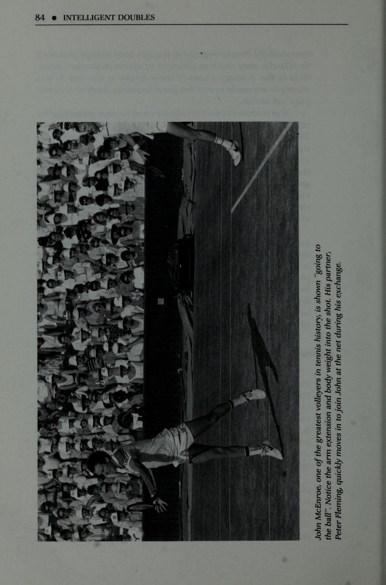
Lợi thế Midcourt @ 85 tầm quan trọng. Mắt của bạn phải theo dõi quả bóng theo tác động của cú đánh của đối thủ để chuẩn bị hợp lý cho thời điểm dừng bóng rút ngắn của bạn xảy ra vào đúng thời điểm đó. Một bước kiểm tra không đúng thời gian sẽ dẫn đến việc định vị kém và phạm vi bao phủ không đầy đủ đối với nhiều quả bóng mà bạn cố gắng đánh. Khi không thực hiện bước kiểm tra nào, động lượng về phía trước của bạn thường kéo bạn về phía lưới mỗi lần và không nhất thiết phải theo hướng bóng! Trong bóng đá, bước kiểm tra được gọi là “sự cố”. Người chơi nhanh chóng di chuyển vào tư thế sẵn sàng này bằng cách cúi thấp xuống đất với đầu gối hơi cong, kiễng chân, sẵn sàng hành động. Mặc dù chúng không phản ứng với cú đánh của quả bóng như trong quần vợt, nhưng chúng đang điều chỉnh thời gian để điều chỉnh những thay đổi về hướng di chuyển của quả bóng. Lần tới khi bạn tiếp cận lưới hãy thận trọng hơn. Thay vì lao về phía lưới với tốc độ nhanh như chớp, hãy chạy chậm lại ở khu vực giữa sân. Bạn đã di chuyển nhanh chóng từ đường cuối sân, điều này không sao cả, nhưng ở giữa sân, bây giờ bạn cần phải giảm tốc độ và giành quyền kiểm soát cơ thể và bóng. Sử dụng bước kiểm tra để có lợi cho bạn. Dừng lại trong giây lát ngay khi đối thủ của bạn thực hiện cú đánh của cô ấy và chuẩn bị cơ thể để tiếp tục di chuyển, không nhất thiết phải theo hướng của lưới mà là theo hướng của quả bóng! & ĐẾN BÓNG Mục tiêu của nhiều người lao lưới chỉ đơn giản là vào lưới. Điều thường bị lãng quên là họ phải luôn đi bóng và điều đó có thể không nhất thiết phải theo hướng lưới. Đó là lý do tại sao bước kiểm tra rất có lợi trong đánh đôi. Khi người chơi học cách giảm tốc độ và dừng lại, họ sẽ tập trung hơn vào quả bóng và chuyển động hướng về phía nó. Bao phủ toàn bộ sân đấu là điều cần thiết. Bạn không bao giờ nên chạy đua về phía lưới theo đường thẳng mà chỉ đánh những quả bóng chạm thẳng vào mình. Bạn phải di chuyển về phía lưới, dừng lại, sau đó tiếp tục di chuyển và che tất cả các quả bóng được đánh về phía sân của bạn. Bạn cũng không nên đoán quả bóng sẽ di chuyển đi đâu. Bạn có thể học cách dự đoán khi quan sát và đọc đối thủ cũng như bóng. Đừng thực hiện chuyển động của bạn cho đến khi bạn nhìn thấy bóng bay ra khỏi vợt của đối thủ. Chuyển động của vợt và cơ thể của anh ta cũng có thể giúp bạn biết được hướng đánh dự định sẽ diễn ra.
Các cầu thủ chuyền bóng ở giữa sân thường “đâm” bóng ở bên phải hoặc bên trái như thể họ đang thực hiện một cú đâm trong bóng tối. Để thực hiện cú vô lê thành công cần có thao tác gồm hai phần. Phần đầu tiên xoay vai để định vị vợt và phần thứ hai là khi vợt và thân di chuyển về phía trước để gặp bóng ra phía trước. Vấn đề xảy ra khi các cầu thủ chờ đợi và chuyền bóng về phía mình. Những tay vô lê giỏi nhất đều đã học cách đi bóng sớm để đánh bóng ngay trước cơ thể. Họ di chuyển theo đường chéo khi ở trên lưới để tiếp xúc sớm hơn ở phía trước và tránh di chuyển song song với lưới vì sợ bị đánh muộn. Họ hiểu rằng thành công hơn trên lưới sẽ đến từ những cú vô lê được thực hiện ở phía trước và họ cố gắng không bao giờ để bóng đi vào phía mình. Khi bạn đã thiết lập được vị trí ở giữa sân, đừng lùi ra khỏi lưới trừ khi đó là một cú lốp bóng. Những người chơi liên tục rút lui sẽ thấy mình mất thăng bằng với rất ít trọng lượng đằng sau các cú đánh của họ. Họ nên giữ đà của cơ thể vào cú đánh, không nên tránh xa nó. Học cách đi bóng khi chuyền bóng; đừng chờ đợi nó đến với bạn. Những cú vô lê của bạn chắc chắn sẽ được cải thiện khi bạn làm như vậy. Q& KHÔNG ĐANG CHẠY Trong hành trình tìm kiếm lưới, hãy nghĩ đến chuyển động của bạn như thể đang dừng đèn đỏ. Tiếp tục chuyển sang màu “xanh” giữa các lần đánh, giảm tốc độ đến “vàng” và thận trọng với cú đánh của đối thủ, đồng thời chuẩn bị tự mình dừng lại ở cú vô lê như thể nó là “màu đỏ”. Cơ thể của bạn sẽ được cân bằng và kiểm soát tốt hơn khi không di chuyển, điều này cho phép kiểm soát các cú đánh tốt hơn. Chơi trên lưới thường đòi hỏi các động tác “dừng và đi”. Những người chơi chưa học lý thuyết đèn dừng trên lưới chắc chắn sẽ gặp khó khăn khi vuốt bóng khi định vị ở đó. Sau bước kiểm tra, tiếp tục đánh bóng; tuy nhiên, khi bạn đạt được nó, hãy dừng lại. Vào thời điểm này, việc kiểm soát cơ thể là vô cùng quan trọng để tạo ra những cú đánh thành công. Di chuyển qua cú đánh chỉ làm phức tạp và cản trở thời gian của quả bóng, điều này rất quan trọng trong cú vô lê. Di chuyển, kiểm tra bước, di chuyển, dừng lại để bắt bóng. Di chuyển, kiểm tra bước, di chuyển, dừng lại để bắt bóng. Di chuyển, kiểm tra bước, di chuyển, dừng lại để bắt bóng. Đây là động tác chân để sử dụng trên lưới. Chú ý chuyển động chỉ diễn ra giữa các lần đánh. Trong khi mỗi người đang vuốt bóng là lúc giữ im lặng trong giây lát. Đó là
Midcourt Advantage @ 87 không cần thiết để giữ bất động khi đồng đội hoặc đối thủ của bạn đang vuốt bóng, nhưng đó là một cách luyện tập tốt. Tuy nhiên, trong cú đánh của bạn, việc kiểm soát bóng là điều cần thiết, vì vậy hãy đứng yên lâu hơn một chút hoặc cho đến khi bóng rời khỏi vợt của bạn. Học cách kiểm soát cơ thể và dừng lại trong khi thực hiện cú vô lê chắc chắn sẽ giúp bạn thực hiện thành thạo những cú vô lê dễ dàng hơn một chút. Q ĐỪNG ĐỨNG ĐỨNG KHÁM PHÁ! Sau mỗi cú đánh của bạn, bạn sẽ cần phải phục hồi hoặc tiến tới vị trí mong muốn trên sân. Tội lỗi tồi tệ nhất mà bạn có thể mắc phải vào lúc này là đánh và “đứng đó chiêm ngưỡng” cú đánh của mình! Vị trí kém sẽ dẫn đến kết quả là điều này tạo cơ hội cho đối thủ của bạn và sơ hở để vượt qua hoặc giành quyền kiểm soát điểm. Sự cám dỗ để chiêm ngưỡng những cú đánh của bạn trong trận đấu sẽ luôn hiện diện. Đôi khi bộ phim mang lại cảm giác hay đến mức bạn muốn đạt được một chút niềm vui bằng cách xem nó một lúc. Chống lại sự cám dỗ! Đánh và di chuyển vào vị trí. Bạn có thể theo dõi cú đánh của mình (bạn phải luôn theo dõi quả bóng) trong khi di chuyển nhưng tránh đánh và đứng đó. Trừ khi bạn đánh trúng một “người chiến thắng” hoàn toàn, bạn sẽ cần tận dụng lợi thế để thực hiện một cú đánh tốt bằng cách di chuyển vào vị trí thích hợp sau cú đánh. Lợi thế sẽ chuyển sang đối thủ của bạn nếu bạn chỉ đứng đó chiêm ngưỡng nó! Tránh chờ đợi hoặc tạm dừng sau những cú đánh mà bạn đã quyết định di chuyển vào lưới phía sau. Ví dụ như trong các cú giao bóng và tiếp cận, hãy di chuyển liên tục trong suốt cú đánh về phía lưới. Điều này vẫn có thể được thực hiện bằng cách kiểm soát cơ thể và giữ thăng bằng khi tiếp xúc. Cách thực hành này không nên áp dụng cho tất cả các cú đánh, chỉ áp dụng cho những cú đánh cần khoảng cách xa hơn để di chuyển về phía sau. Cần hết sức thận trọng và cẩn thận khi chơi bóng khi đang di chuyển. Đây là nơi xảy ra nhiều lỗi, đặc biệt là khi người chơi cố gắng thực hiện thao tác này khi không nhất thiết phải thực hiện. Hỏi & TĂNG MỨC CƯỜNG ĐỘ CỦA BẠN Mức độ cường độ hoặc trạng thái sẵn sàng của bạn có giống nhau khi cố gắng đánh một quả bóng bay với tốc độ 100 dặm một giờ cũng như khi bạn cố gắng đánh một quả bóng có tốc độ mười dặm một giờ không? Nó không nên như vậy. Cường độ của bạn thường được quyết định
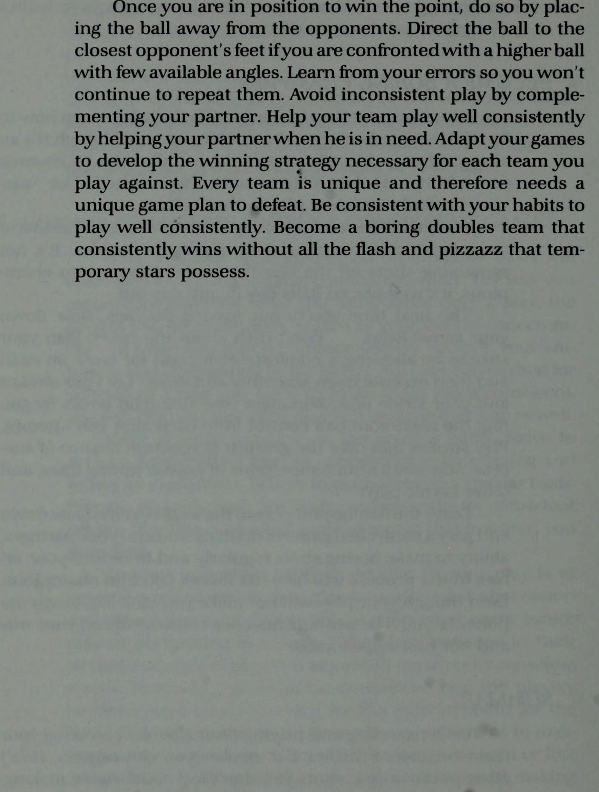
bởi tốc độ bóng bạn đang chơi cũng như khoảng cách của đối thủ. Nói chung, bạn càng ở gần lưới thì bạn càng phải trở nên mạnh mẽ hơn. Có ba dấu hiệu cơ thể cần chú ý khi xác định mức độ cường độ của bạn: khuỷu tay, gót chân và đầu gối. Trong khi ở tư thế sẵn sàng, hãy lưu ý vị trí khuỷu tay của bạn. Chúng hướng vào trong, hướng về phía cơ thể bạn, thậm chí dọc theo hai bên của bạn, hay chúng mở rộng ra ngoài nhiều hơn? Những người chơi ở cường độ thấp hơn có xu hướng kéo khuỷu tay vào cơ thể ở tư thế thoải mái hơn. Điều này tốt khi cảm thấy thoải mái hoặc khi các yêu cầu ít căng thẳng hơn được đặt ra cho người chơi, tuy nhiên, khi ở trên lưới, khi cường độ thường ở mức cao nhất, khuỷu tay phải duỗi ra xa hơn về phía trước cơ thể. Khi đó vợt sẽ được chuẩn bị tốt hơn và ở vị trí mong muốn hơn để phản ứng nhanh hơn và bắt bóng sớm hơn trước cơ thể. Gót chân chạm đất chắc chắn báo hiệu mức cường độ thấp hơn. Khi chơi lưới, tránh chạm gót chân xuống đất trừ khi đánh bóng. Những người chơi đứng bằng chân khi ở trên lưới có xu hướng giữ thăng bằng cứng nhắc. Họ có thể tự động nhận thấy mình mãnh liệt và sẵn sàng hơn bằng cách bước ra khỏi gót chân và đứng vững bằng đôi chân của mình nhiều hơn. Trọng lượng cơ thể sẽ dịch chuyển về phía trước trong quá trình mang lại khả năng dự đoán và sẵn sàng tốt hơn. Bây giờ họ sẽ thấy mình được chuẩn bị tốt hơn cho việc trao đổi mạng nhanh chóng. Đứng thẳng hoàn toàn với đầu gối khóa cũng ảnh hưởng đến sự nhanh nhẹn và khả năng vận động. Co duỗi đầu gối của bạn một chút để sẵn sàng hành động. Nếu uốn cong nhẹ là tốt, thì việc uốn cong đầu gối nhiều hơn như “ngồi xổm” có tốt hơn không? KHÔNG! Chỉ cần uốn cong đầu gối một chút sẽ giúp cơ thể bạn chuẩn bị tốt nhất cho những chuyển động nhanh trên lưới. Uốn cong đầu gối sâu hơn đòi hỏi quá nhiều thời gian để mở rộng hoàn toàn và đẩy cơ thể của bạn về sân. Khi bạn và đối tác tiến đến giữa sân, hãy điều chỉnh mức cường độ của bạn để bù đắp cho khoảng cách ngắn hơn được tạo ra giữa bạn và đối thủ. Quyết định trước mỗi lần trao đổi nơi bóng sẽ được hướng tới để tránh những bất ngờ không cần thiết trong khi tập hợp lại. Kiểm soát đầu vợt của bạn. Giữ chặt tay cầm và cổ tay của bạn để chuẩn bị cho những quả bóng nhanh hơn lao tới bạn. Duỗi khuỷu tay và vợt của bạn ra xa hơn về phía trước, nhấc gót chân và uốn cong đầu gối một chút ở tư thế sẵn sàng căng thẳng hơn. Bây giờ bạn đã sẵn sàng tung cú vô lê hết sức mình và giành được lợi thế ở giữa sân!
Lợi thế giữa sân @ Q Ở ĐÂU NHẤT CÁC TRẬN ĐẤU ĐÔI THẮNG VÀ THUA Một trong những địa điểm tồi tệ nhất mà bạn và đồng đội của mình có thể chơi trò chơi này là “vùng đất không có người”. Đây là khu vực nằm giữa khu vực giữa sân và vạch cuối sân (baseline). Từ đây, rất ít cú đánh trở nên dễ dàng. Bóng dường như dễ dàng hướng vào chân và phía sau người chơi khi họ bị mắc kẹt ở vùng đất vắng người. Đây chính là bản chất của bài học rằng 'quần vợt là một trò chơi được chơi phía sau đường cuối sân hoặc trên lưới'. Người chơi vuốt bóng bên trong đường cuối sân nên tiến về phía lưới sau khi đánh hoặc rút lui về phía sau đường cuối sân để tiếp tục tính điểm. Khu vực giữa sân khác rất ít so với khu đất vắng người. Đây là lý do tại sao khu vực giữa sân không phải là vị trí lý tưởng để bạn và đối tác chơi trò chơi. Vậy thì tại sao lại có cả một chương dành riêng cho khu vực giữa sân? Hầu hết các trận đấu đôi đều có phân thắng bại khi thi đấu diễn ra ở giữa sân. Chỉ những người chơi đánh đôi rất tiên tiến và có kinh nghiệm mới hiểu được tầm quan trọng của những cú đánh được thực hiện từ đây. Những người chơi ít hơn cảm thấy họ đủ gần để thực hiện những cú đánh tấn công và mắc phần lớn lỗi ở đây. Nếu họ kiên nhẫn hơn, thận trọng và thông minh hơn trong các vị trí của mình, họ sẽ phát hiện ra rằng khu vực giữa sân là nơi tuyệt vời để không chỉ giành được lợi thế mà còn kiểm soát được số điểm mà họ chơi. Chắc chắn, bóng đôi khi sẽ hướng vào chân bạn khi bạn đang ở vị trí giữa sân, tuy nhiên, thông qua việc thận trọng và cẩn thận hơn, những cú đánh khó này có thể được định hướng một cách an toàn và nhất quán. Đặt những quả vô lê thấp và nửa quả vô lê phía trên lưới với đủ khoảng cách để tránh mắc lỗi, cách xa đường biên và đủ sâu để kiểm soát điểm. Tránh cố gắng giành chiến thắng hoàn toàn từ những quả bóng được chơi dưới chân bạn. Đường giao bóng là một nơi hấp dẫn để đạt được những người chiến thắng được vinh danh. Đôi khi điều này có thể thực hiện được nhưng hiếm khi đạt được thành công nhất quán. Mặc dù bạn có thể cảm thấy đủ gần để “giết người”, nhưng hãy chống lại sự cám dỗ vì thực tế bạn không hề như vậy. Thay vào đó, hãy cố gắng kiểm soát điểm và tạo áp lực lên đối thủ. Khiến họ đánh bại bạn bằng cách đánh vào giữa bạn, chuyền bạn xuống vạch hoặc đánh vào một vị trí hoàn hảo trên đầu bạn. Chỉ đạo các cú đánh của bạn sao cho đây sẽ là một nhiệm vụ khó khăn đối với họ để thực hiện đều đặn. Đó là chiến thắng
với phần trăm chơi đôi. Sân giữa sẽ chứng tỏ là một vị trí quý giá cho sự thành công của đội bạn khi bạn học cách bố trí các cú đánh của mình từ đây. Nhưng hãy nhớ, để đạt được lợi ích từ những quả bóng được đặt đúng vị trí, bạn và đối tác của mình sẽ cần phải di chuyển đến vị trí gần lưới hơn để ghi điểm một cách nhất quán. TÓM TẮT Giữ lợi thế hoặc quyền kiểm soát từ giữa sân; đừng luôn cố gắng kết thúc các điểm ngay từ đây. Đừng quá lo lắng về việc kết thúc điểm sớm hơn mức bạn nên làm. Sử dụng bước kiểm tra để kiểm soát cơ thể của bạn đúng cách và định vị bản thân để chơi tất cả các quả bóng. Hãy nhớ rằng, bạn sẽ đi bóng chứ không chỉ vào lưới. Đừng đợi bóng đến với bạn khi thực hiện cú vô lê; đi đến đó để tiếp xúc với những quả bóng ở phía trước và tránh chơi chúng ở phía bạn. Mặc dù bạn luôn di chuyển tới quả bóng, nhưng khi bạn chạm tới nó hãy dừng lại để thực hiện cú vô lê. Chạy qua cú vô lê chắc chắn khiến việc thực hiện cú đánh trở nên khó khăn hơn bất kể trình độ chơi của bạn là gì. Sau khi thực hiện cú vô lê, hãy di chuyển vào vị trí. Tránh sự cám dỗ để đứng đó chiêm ngưỡng quả bóng được đặt đúng vị trí của bạn. Tăng mức độ cường độ của bạn khi chơi lưới. Chuẩn bị đúng cách cho việc trao đổi mạng nhanh chóng. Chơi nó thông minh ở giữa sân. Bạn và đối tác của bạn có thể chọn sử dụng vị trí này để giành điểm hoặc bạn có thể để nó chống lại bạn. Sự lựa chọn là của bạn. Tất cả phụ thuộc vào mức độ kiên nhẫn, thận trọng và thông minh của bạn với các vị trí của mình từ đây.
7. Rắc rối kép: Làm chủ và vô hiệu hóa thùy
CHƯƠNG 7 Rắc rối nhân đôi & cú lốp bóng đáng sợ Không gì có thể làm gián đoạn trận đấu, thay đổi diễn biến hoặc thay đổi chiến lược của đối thủ hơn một cú lốp bóng. Nhiều người thậm chí còn coi đây là cú đánh đáng sợ nhất trong trò chơi. Nhưng tại sao? Có nhiều cú đánh được coi là khó phòng thủ. Những cú giao bóng rực rỡ, những cú đánh tiếp cận mạnh mẽ, những cú thuận tay lớn, những cú trả bóng chìm dưới chân. .. vậy tại sao một cú đánh đơn giản như cú lốp bóng lại đáng sợ đến thế? Mối đe dọa của cú lốp bóng cũng có tính sát thủ giống như chính cú lốp bóng đối với các hậu vệ trên lưới. Nhiều người lo sợ nó vì nhiều lý do: thứ nhất, cú đánh quá cao là một cú đánh mà ít người thực hành thường xuyên. Người chơi thực hiện vô số cú thuận tay và trái tay mỗi lần luyện tập, trong khi số lần đánh từ trên cao thường có thể đếm được trên một tay! Kết quả là họ không mấy tự tin và tin tưởng vào khả năng thực hiện cú đánh bằng cú đánh của mình. Thứ hai, người chơi thiếu hiểu biết về tầm quan trọng của khả năng di chuyển lùi trên lưới. Để bảo vệ cú lốp bóng đòi hỏi phải lùi nhanh và định vị chính xác bàn chân. Thứ ba, bầu trời là phông nền cho những bức ảnh chụp từ trên cao. Người chơi không quen với việc đánh giá những quả bóng được chơi trên cao và gặp khó khăn trong việc nhận thức. Cuối cùng, hầu hết đều cố gắng thực hiện cú đánh như đôi khi nó được đặt tên - một cú đập bóng! Kết quả là lối chơi không nhất quán, cuối cùng tạo ra sự thiếu tự tin trong cú đánh trên cao.
a]ppiu ay] uMOP qo] B 4.1NOD ay) fO 49]JUIaI ay) auBYys sPUBYYIE u1aY) YIOG a]1yYM Sethe ee bene ttnitiaerentertatinaal SPN ee Nn ee ee a GR gS HLIWS Zin JOUUIIN SNIWNAT4
Rắc rối gấp đôi @ Q cú sút hiệu quả nhất trong đánh đôi ‘ Các đội không bao giờ lốp bóng cho phép đối thủ tiến gần hơn và kiểm soát lưới. Mặt khác, những đội lốp bóng chính xác có thể khiến đối thủ không thể lọt lưới. Họ có thể giành được lợi thế bằng cách đặt bóng vào chân đối thủ hoặc tự mình chiếm lấy lưới. Các đội lốp bóng tốt cũng giữ bóng thường xuyên hơn và tạo cơ hội cho đối thủ phạm lỗi. Đây là lý do tại sao cú lốp bóng, khi được thực hiện đúng cách, sẽ là cú đánh đôi hiệu quả nhất ở mọi cấp độ. Tuy nhiên, hầu hết những người chơi đánh đôi sẽ ngại sử dụng cú lốp bóng. Họ cảm thấy rằng họ sẽ bị gắn mác “kẻ vận động hành lang”, “kẻ đẩy”, “kẻ tấn công mặt trăng” và những thứ tương tự nếu người ta thường xuyên nhìn thấy họ lốp bóng. Họ không bao giờ thực sự hiểu tầm quan trọng của cú lốp bóng hoặc cách họ có thể sử dụng nó tốt hơn; thay vào đó họ thích tránh nó hơn. Sợ hãi là một yếu tố khác dẫn đến việc không lốp bóng thường xuyên hơn. Những người chơi này trước đây đã từng “ném” những quả bóng ngắn lên không trung, chỉ để đối thủ chờ đợi xé toạc qua đầu một cách dễ dàng hoặc tệ hơn, trực tiếp vào họ hoặc đồng đội của họ. Điều thường thiếu là sự hiểu biết về cách kiểm soát cú lốp bóng. Đơn giản là trước đây họ đã sút trượt quá nhiều nên không thể tiếp tục tự tin thực hiện cú đánh trong trận đấu. Các cú đánh thùy phải được vuốt tương tự như các cú chạm đất. Bất kỳ ai cũng có thể đánh bóng lên không trung, tuy nhiên, độ chính xác và hướng đánh cần phải luyện tập. Đầu tiên, mục tiêu phải được tưởng tượng là sẽ hướng bóng đến đó một cách có kiểm soát. Các cú nhảy bật lên hoặc các cú lốp bóng ngắn xảy ra khi người chơi dừng cú vung của họ khi tiếp xúc hoặc ngay sau đó. Những cú đấm và hất bóng bằng mặt vợt mở (dây hướng lên trời) sẽ đưa bóng lên cao nhưng khó kiểm soát. Điều còn thiếu là sự theo dõi thích hợp. Việc thực hiện cú đánh tiếp theo cho phép vợt tiếp tục di chuyển qua cú đánh và hướng bóng trong quá trình đó. Khi người chơi xúc hoặc đẩy bóng mà không có hoặc có ít đường chuyền, sẽ dẫn đến những cú đánh yếu và lốp bóng không hiệu quả. Ngụy trang là chìa khóa thành công với cú lốp bóng. Khi những cú lốp bóng được thực hiện trông như thể chúng là những cú thuận tay hoặc thuận tay bình thường và sau đó đột nhiên bóng bay qua đầu đối thủ không chuẩn bị, đó thường là chiến thuật bất ngờ tốt nhất hiện có. Để ngụy trang tốt hơn cho cú lốp bóng của bạn, hãy cố gắng đánh bóng theo cách tương tự như động tác chạm đất, chỉ nhấc bóng thêm một chút ở lượt tiếp theo khi cú đánh của bạn kết thúc. Cái này
theo cách đó, đối thủ của bạn sẽ gặp khó khăn trong việc đọc hoặc phản ứng với cú đánh mà bạn sắp đánh. Nó cũng sẽ khiến họ khá bất an khi chọn vị trí rất gần lưới trong tương lai. Lobs là những cú đánh tuyệt vời để cố gắng xử lý các cú đánh khó. Chúng cũng giúp giải quyết ngay lập tức những cú đánh đã kéo đội của bạn ra khỏi vị trí. Những cú lốp bóng ngụy trang cũng có một dạng khác, những cú lốp bóng bổng. Một cú lốp bóng chặn, chẳng hạn như một cú lốp bóng; có thể khá bất ngờ nếu được thực hiện đúng cách và chắc chắn sẽ khiến đối thủ mất thăng bằng và đoán mò. Có thể thực hiện một cú lốp bóng trước khi bóng nảy lên (một cú vô lê) bằng cách mở mặt vợt và điều chỉnh góc cũng như lực của cú vung để vừa đánh qua đầu đối thủ không nghi ngờ mà vẫn tiếp đất trong ranh giới của sân. Khi đối thủ có ý định chơi ở vị trí một đối thủ/một hậu vệ, cú lốp bóng là một công cụ tuyệt vời để sử dụng để làm đối thủ ở cuối đường mệt mỏi. Bằng cách lốp bóng thành công liên tục từ góc này sang góc khác, qua đầu người lưới, người giữ lưới buộc phải chạy từ bên này sang bên kia. Điều này không chỉ khiến đối thủ của bạn mắc nhiều sai lầm hơn khi đang chạy mà còn có thể buộc họ phải đảm nhận những vị trí trên sân mà họ không hoàn toàn thoải mái, chẳng hạn như vừa chơi lên vừa chơi lùi. Thường thì cú trả bóng tốt nhất cho bạn và đối tác của bạn là cú trả bóng lốp bóng. Nếu người lưới chủ động truy cản hoặc người giao bóng và vô lê thành công, một cú lốp bóng ném qua đầu người lưới chắc chắn sẽ cản trở kế hoạch của họ. Ở ngoài trời, một cú lốp bóng mang lại cho đối thủ nhiều ánh nắng và bầu trời để nhìn và đối mặt khi cố gắng đánh qua đầu. Trong nhà, đối thủ phải đối mặt với ánh đèn sáng, dầm thép và trần nhà sáng màu. Cú lốp bóng là một cú đánh quan trọng mà bạn và đối tác cần lưu ý khi hoạch định chiến lược. Thay vì sử dụng nó như một cú đánh cuối cùng, hãy luyện tập để biến nó thành một phần trong tiết mục đánh bóng hàng ngày của bạn. Hãy để nó giúp bạn trở thành một đội hoàn thiện hơn. Nó thậm chí có thể trở thành cú đánh hiệu quả nhất mà nhóm của bạn sử dụng! Q TẤN CÔNG VS. Phòng thủ Lobs có thể được phân loại thành các cú đánh tấn công hoặc phòng thủ. Điều gì quyết định một cú lốp bóng là tấn công hay
Rắc rối gấp đôi @ lối chơi phòng thủ là vị trí của các cầu thủ cố gắng lốp bóng và độ cao của vòng cung trong cú lốp bóng. Các cú lốp bóng tấn công được thực hiện bởi các cầu thủ ở vị trí tốt hoặc đang chỉ huy điểm. Chúng thường được chơi bằng những quả bóng ngắn hơn, giúp người chơi dễ dàng bước vào phía sau cú đánh và nâng nó qua đầu đối phương. Độ cao của cú lốp bóng tấn công là một quỹ đạo thấp hơn, khi thực hiện chính xác, nó chỉ làm sạch vợt đang dang ra của đối thủ đang bị bất ngờ. Thời gian duy trì của cú lốp bóng tấn công trên không cũng được rút ngắn lại, khiến cầu thủ trên lưới không có cơ hội thực hiện cú lốp bóng đó và trả lại. Một cú lốp bóng với xoáy lên mang lại nhiều lợi thế hơn. Một cú lốp bóng xoáy lên lao xuống nhanh chóng sau khi đánh đầu người lưới và bỏ chạy thường không bị chạm. Đây là lý do nó được gọi là cú đánh tấn công; nó được sử dụng để kiểm soát điểm hoặc thậm chí giành chiến thắng hoàn toàn. Mặt khác, lốp phòng thủ được sử dụng bởi những người chơi đang gặp rắc rối. Vòng cung cao và thời gian treo bóng dài của lốp bóng phòng thủ cho phép các cầu thủ cần có thời gian để trở lại vị trí hoặc giành lại quyền kiểm soát điểm. Khi các cầu thủ bị kéo ra khỏi sân hoặc bị kẹt với những cú đánh khó, lốp bóng cao là cú đánh thông minh nên lựa chọn. Trong mọi khả năng, đối thủ sẽ có thể thực hiện cú lốp bóng, nhưng điều quan trọng nhất là sẽ không xảy ra lỗi nào trong quá trình này. Khi người chơi cố gắng “làm nổ tung” để thoát khỏi tình huống, lối chơi thiếu thông minh sẽ dẫn đến những lỗi lặp đi lặp lại. Những người chơi yếu hơn thường chỉ sử dụng cú lốp bóng như một chiến thuật phòng thủ, tuy nhiên, ngay cả những người chơi rất giỏi cũng thường thiếu kiến thức về cách sử dụng cú lốp bóng hiệu quả hơn. Để thực hiện cú lốp bóng tấn công hơn và do đó hiệu quả hơn, hãy đưa bóng xuống thấp hơn bằng cách đưa vợt của bạn xuyên qua quả bóng thay vì nâng nó quá nhiều trong cú vung của bạn. Điều quan trọng là phải nhận ra rằng chính mặt vợt và mặt phẳng của đường vung vợt của bạn sẽ hướng bóng đi vào cú lốp bóng. Để thực hiện cú lốp bóng của bạn xuống, hãy nhắm vào đầu hàng rào bên cạnh đối thủ của bạn. Quỹ đạo thấp hơn này sẽ khiến đối thủ của bạn gặp khó khăn trong việc phòng thủ khi được kiểm soát chính xác qua đầu của họ. & CÁC VẤN ĐỀ TRÊN ĐẦU CỦA BẠN - “PAT VÀ MIKE” Những cú đập bóng tốt nhất được thực hiện trên đầu với một cánh tay duỗi thẳng hoàn toàn ở khoảng cách thoải mái trước cơ thể. Cú đánh được thực hiện tương tự như cú giao bóng, với cơ thể
trọng lượng được đặt đúng vị trí phía sau quả bóng với cú xoay người trở thành chuyển động ném tự nhiên của cánh tay. Tuy nhiên, hầu hết những rắc rối mà người chơi gặp phải với cú đánh trên cao đều xảy ra khi bóng được đánh từ phía sau cơ thể. Từ đây trở nên cực kỳ khó thực hiện cú đánh. Ít hoặc không có bộ phận cơ thể nào được bố trí để mang lại sự ổn định hoặc lực cho cú đánh; ngay cả đôi mắt cũng khó có thể nhìn thấy nó một khi nó đã tỉnh táo. Đây là lý do mà “Pat và Mike” (hai chân của bạn!) có một công việc rất quan trọng phải làm - ngăn chặn quả bóng bay ra phía sau bạn! Động tác chân kém là nguyên nhân của hầu hết các vấn đề về đầu. Phần lớn người chơi không thích cú đánh này chính là những người liên tục cố gắng gian lận trong khi luyện tập nó. Họ sẽ bắt đầu bằng việc đứng gần vạch giao bóng để không phải chạy lùi để lấy bóng qua đầu. Trong một trận đấu, ai sẽ lốp bóng cho chính những cầu thủ này khi họ ở vị trí quá xa ở vạch giao bóng? Không ai! Những cầu thủ này cần phải tập luyện bằng cách đứng quá gần, chen chúc vào lưới. Giờ đây, họ có thể thực hành di chuyển lùi nhanh và phản ứng nhanh hơn để có vị trí tốt hơn để chơi bóng qua đầu. Chạy là điều mà những cầu thủ này cần luyện tập. Việc bắt đầu lập trường của họ ở đường giao bóng trên thực tế đã chứng minh điều đó. Chìa khóa để thực hiện “Pat và Mike” tốt hơn là tránh di chuyển theo bóng. Người chơi ở cấp độ thấp hơn gặp khó khăn vì họ chưa học được bí quyết này. Bàn chân của họ theo dõi những quả bóng cao với tốc độ không bao giờ đưa họ vào đúng vị trí hoặc chỉ đưa họ đến đó kịp thời để thực hiện những cú vung bóng vội vàng, không kiểm soát. Người chơi nâng cao di chuyển nhanh hơn: bóng. Họ dự đoán vị trí bóng sẽ được chơi và di chuyển nhanh chóng để bố trí vị trí đó. Khi thực hành chuẩn bị nhanh, người chơi sẽ có thời gian để thiết lập, tạm dừng và thực hiện. Những người chơi có chân chậm hơn sẽ thực hiện các cú đánh nhanh và điều chỉnh cánh tay một cách vụng về để bù đắp cho việc thiếu vị trí tốt. Những người chơi nâng cao với chi phí âm thanh thực hiện các điều chỉnh bằng chân của họ và ở vị trí lý tưởng một cách thường xuyên. để cho phép đánh thoải mái. Việc chuẩn bị cho cú đánh trên cao bắt đầu bằng việc xoay vai. Điều này nhằm căn chỉnh cơ thể một cách hợp lý để có cú vung bóng tự nhiên. Sau đó, vợt chuẩn bị bằng cách đi lên và lùi về phía sau đầu trong tư thế “cong” sẵn sàng tấn công. Cánh tay tự do (không có vợt) khi đó sẽ trở thành một hướng dẫn hoặc
Rắc rối gấp đôi @ nhắm cánh tay để giúp ngắm bóng qua đầu. Bây giờ là lúc “Pat và Mike” xuất hiện. Động tác chân phải được thực hiện nhanh chóng bằng cách bước lùi về phía sau để giữ bóng ở một khoảng cách thoải mái trước cơ thể. Thông qua kinh nghiệm và luyện tập, đôi chân của bạn sẽ đưa bạn đến vị trí lý tưởng để có những cú đánh từ trên cao tốt hơn. Khi bạn thực hành tính toán tổng phí, hãy nhớ đừng gian lận! Đứng sát lưới để tập chạy lùi nhanh. Mặc dù chiều cao có thể là một lợi thế đối với người chơi trên lưới, nhưng một số cầu thủ đánh trên cao tốt nhất mà tôi từng biết lại thấp! Họ bù đắp cho sự thiếu hụt về thể hình bằng cách phát triển khả năng chọn vị trí tốt hơn với đôi chân nhanh nhẹn hơn. Cố gắng không điều chỉnh vị trí bằng cánh tay và cú xoay của bạn mà thay vào đó hãy để bàn chân của bạn giữ đúng vị trí mỗi lần và cho phép những cú đánh thoải mái. Q Mỉm cười khi bạn bị LOBBED Là một người chơi đánh đôi, thường sẽ dành một khoảng thời gian đáng kể để chơi trên lưới. Để phát triển cảm giác an toàn về khả năng chơi trên lưới của mình, bạn cần có một cú đánh trên cao đáng tin cậy mà bạn cảm thấy tự tin. Nếu không sở hữu một cú đánh mạnh, sự tự tin khi chơi lưới của bạn chắc chắn sẽ kém đi. Mặc dù bạn có thể bắt vô lê khá tốt, nhưng ngay khi đối thủ phát hiện ra những thiếu sót về đánh đầu của bạn, bạn chắc chắn sẽ bị trừ điểm khi chiếm giữ vị trí trên lưới. Khi phát triển một trò chơi đánh đôi âm thanh, một trong những cú đánh có lợi nhất mà bạn có thể sở hữu là một cú đánh vượt qua tự tin. Với nó, bạn có thể thay đổi toàn bộ chiến lược mà phe đối lập có thể nghĩ ra. Chúng ta đã thảo luận trước đó tầm quan trọng của cú lốp bóng trong các cú đánh đôi ở mọi cấp độ. Nếu bạn có thể loại bỏ hoặc thậm chí hạn chế các cú lốp bóng của đối thủ thì về cơ bản bạn có thể kiểm soát được những cú đánh mà họ sẽ phải thực hiện. Việc luyện tập của bạn có thể cần phải được điều chỉnh để có thêm thời gian phát triển cú đánh từ trên cao, nhưng điều đó có đáng không? Nó có thể mang lại cho nhóm của bạn một lợi thế khác. Nếu mỗi lần bóng bật lên bên phần sân của bạn và bạn đánh trúng một “người chiến thắng tự động”, liệu đối thủ của bạn có tiếp tục lốp bóng với bạn không? Nếu họ thông minh thì họ sẽ không làm vậy. Nếu bạn và đối tác của mình đều thực hiện các chi phí quá tự động đến mức bạn cảm thấy muốn mỉm cười và nói lời cảm ơn mỗi khi bị lốp bóng,
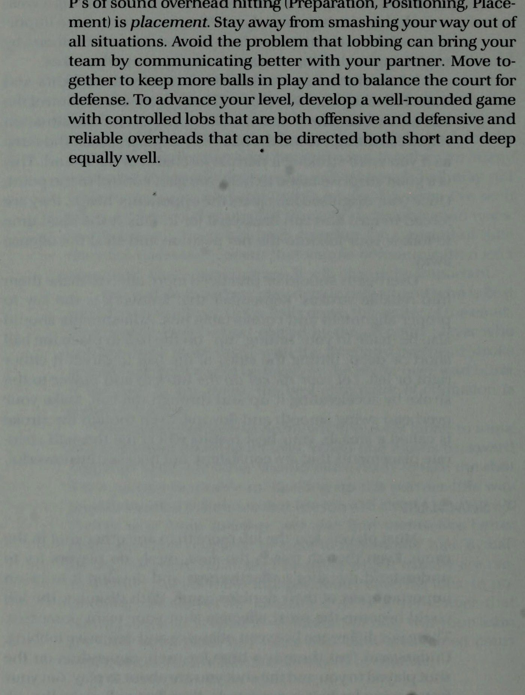
e@ thay vào đó, đối thủ sẽ buộc phải thực hiện những cú chuyền bóng khó. Đôi khi người chơi sợ cú lốp bóng không phải vì khả năng đánh đầu của họ mà là vì giành được vị trí lốp bóng. Nếu những cú lốp bóng tấn công tiếp tục bay qua đầu bạn, đó chỉ là do bạn đang để chúng mà thôi! Đó không phải là lỗi của ai cả mà là lỗi của chính bạn. Thực hiện các cú đánh tiếp cận và cú vô lê của bạn sâu hơn, tới đối thủ yếu hơn hoặc cú đánh yếu hơn. Nếu họ tiếp tục ném quả lốp bóng giành chiến thắng qua đầu bạn, hãy lùi lại vài bước để ngăn họ tiếp tục ghi bàn. Trở lại vị trí trước đó của bạn trên lưới sau khi các cú lốp bóng chiến thắng đã kết thúc. Buộc họ đánh những quả bóng nông mà bạn thích. Bạn cũng có thể phát triển khả năng đọc lốp bóng tốt hơn. Hãy chú ý đến đối thủ của bạn khi họ lốp bóng. Hãy xem cách họ chuẩn bị vợt, vai và cú xoay người. Bạn sẽ có thể định vị bản thân nhanh hơn nhiều bằng cách dự đoán cú đánh tốt hơn. Hãy mỉm cười khi bạn bị thùy. Bạn biết rằng nó sẽ đến bằng cách đọc nó sớm, bạn đã kiểm soát được nó sẽ đi đến đâu thông qua vị trí và vị trí của bạn, đồng thời đó là một điểm tự động cho nhóm của bạn vì bạn đã thực hành nó rất nhiều và đã phát triển sự tự tin vào chi phí chung của mình! & NGẮN ĐẾN NGẮN, DEEP ĐẾN SÂU Nhiều cầu thủ câu lạc bộ vẫn thất thường với những cú đánh từ trên cao của họ. Họ có thể đã phát hiện ra khả năng kiểm soát bóng và vị trí bằng các cú chạm đất nhưng không phát hiện ra bằng các cú đánh đầu. Đối với họ, cú đánh chỉ đơn giản là một cú “đập”! Người ta ít suy nghĩ về hướng và vị trí cho cú đánh này, chỉ có sức mạnh tuyệt đối. Tuy nhiên, sức mạnh mà không có sự điều khiển cũng giống như lần đầu tiên học lái xe trong một cuộc đua ô tô... ngay lập tức bạn sẽ gặp rắc rối! Đây chính xác là điều mà nhiều người chơi trải nghiệm với chi phí chung của họ. Họ đang sử dụng quyền lực trước sự kiểm soát và gây ra những hậu quả tai hại. Cũng giống như tất cả các cú đánh trong môn quần vợt, trước tiên, mục tiêu cho cú đánh trên cao phải được hình thành trong đầu để đặt bóng chính xác, có hướng và khả năng kiểm soát. Những cú lốp bóng được đánh nông hoặc ngắn phải được đặt ở góc ngắn để giành chiến thắng ở các vị trí trên cao. Mặt khác, các đường thùy sâu hơn, yêu cầu sao lưu cho đường dịch vụ và hơn thế nữa, phải được trả về phía trên sâu hơn. Điều quan trọng là phải hiểu quy tắc về vị trí từ ngắn đến ngắn và sâu đến sâu cho các cảnh quay từ trên cao. Thùy ngắn
Rắc rối gấp đôi @ phải được hướng dẫn tránh xa đối thủ. Có thêm một sân để đánh vào vì các góc được tạo ra khi ở gần lưới hơn. Người chơi nên tận dụng phần sân phụ này và hướng bóng đến nơi đối thủ của họ không có đường lốp ngắn. Vấn đề xảy ra khi người chơi quan tâm nhiều hơn đến việc đập bóng mà quên hướng nó ra xa đối thủ để dứt điểm. Kết quả thường là các pha đánh bóng kéo dài hơn (vì nhiều bóng có xu hướng quay trở lại) hoặc mắc nhiều lỗi hơn do lực tác dụng vào bóng không thể kiểm soát được. Mặt khác, thùy sâu đòi hỏi sự chăm sóc phòng ngừa nhiều hơn. Cú đánh trở thành một cú đánh chuyển tiếp hoặc chuẩn bị khi được thực hiện ở giữa sân do các góc được tạo ra bị hạn chế. Bằng cách đặt bóng lùi sâu, người chơi có thể định vị bản thân tốt hơn bằng cách di chuyển trở lại vị trí lưới gần hơn để cố gắng kết thúc điểm ở lượt đánh tiếp theo. Kiên nhẫn là điều cần thiết để có thùy sâu hơn. Chi phí từ đây không dễ dàng đạt được đối với người chiến thắng. Lần bắn tiếp theo mang lại tỷ lệ phần trăm thành công cao hơn. Tránh đóng vai anh hùng bằng cách cố gắng vượt qua mọi tình huống khó khăn. Tốt nhất là chơi hầu hết các cú lốp bóng mà không bị trả lại. Khi đó, đối thủ sẽ có ít thời gian hơn để phản ứng và chuẩn bị cho cú đánh từ trên cao của bạn. Tuy nhiên, khi một cú lốp bóng rất cao hoặc rất sâu, để bóng nảy lên trước khi đánh qua đầu là lựa chọn sáng suốt. Mặc dù điều này giúp đối thủ có nhiều thời gian hơn để chuẩn bị và đọc cú đánh, nhưng bóng sẽ dễ quản lý và kiểm soát hơn sau khi nó nảy lên. Nó cũng cho phép có nhiều thời gian hơn để có được vị trí lý tưởng phía sau quả bóng để thực hiện các vị trí chính xác. & KHAI THÁC TRONG GIAO TIẾP Cú lốp bóng là một chiến thuật tuyệt vời được sử dụng để gây nhầm lẫn. Khi bóng được đánh lên cao, người chơi đôi khi do dự và không biết ai sẽ là người đỡ bóng. Khi người chơi thiếu hiểu biết về giao tiếp và chọn vị trí cho những cú đánh này, sự thiếu tinh thần đồng đội của họ có thể dễ dàng bị các đối thủ thông minh vạch trần. Khi đội của bạn phải đối mặt với những pha lốp bóng, đừng hoảng sợ. Bạn sẽ không bị đánh bại trừ khi bạn để cú sút hạ gục đội của mình. Nhanh chóng thông báo ai sẽ lấy bóng. Tốt nhất là việc này nên được thực hiện bởi người có đánh đầu phá bóng. “Của tôi” người này nên nhanh chóng hét lên nếu anh ta có ý định
để lấy nó thì “Của bạn” phải được nói ngay nếu anh ta không thể thực hiện cú đánh tốt với nó hoặc nếu anh ta cảm thấy đối tác của mình có cơ hội tốt hơn với nó. Hãy tạo 2 thói quen giao tiếp nhanh chóng mỗi khi bóng được nhấc lên trên đầu phần sân của bạn. Sau đó, bạn và đối tác của bạn sẽ hiểu rõ ai sẽ nhận mỗi quả bóng. Các đội đã chơi cùng nhau trong nhiều năm và vốn đã biết ai sẽ cầm từng quả bóng có thể không cần phải chú ý nhiều đến bài học này: tuy nhiên, tôi đã chứng kiến nhiều đội có kinh nghiệm thất bại sau những tai ương về giao tiếp. Chỉ vì một nhóm đã ở cùng nhau trong một khoảng thời gian không nhất thiết có nghĩa là giao tiếp đơn giản không phải là Bạn và đối tác của bạn có thể quyết định trước ai là người phù hợp nhất để thực hiện các hành động thùy khác nhau. Bóng xuống giữa sân. ví dụ: có thể được chơi tốt nhất bởi người chơi ad Court, người có thể chơi bóng dễ dàng hơn bằng cú đánh thuận tay trên cao của cả hai. Trong bất kỳ trường hợp nào, biện pháp giải quyết tình trạng hỗn loạn tốt nhất là Giao tiếp. với nhau khi bao phủ tất cả các thùy. Khi một người di chuyển về phía sau để chuẩn bị đánh, người còn lại sẽ di chuyển sẵn sàng để thực hiện cú đánh nếu đối tác không thể thực hiện được. Hỗ trợ đối tác theo cách này giúp tăng thêm sự đảm bảo rằng bức tường thùy luôn được che chắn. Những người chơi di chuyển cùng nhau cũng sẽ thấy mình ở vị trí tốt hơn và chuẩn bị sẵn sàng để phản ứng với những cú đánh của đối thủ. Bằng cách cân bằng sân đấu. các lỗ được đóng lại, thường được tạo ra khi người chơi di chuyển độc lập để che bóng. Trong po- di chuyển cùng nhau là những gì được yêu cầu. Đội của bạn không chỉ nhận được nhiều bóng hơn. nhưng bạn cũng sẽ có một sân cân bằng với 2 lá chắn phòng thủ đáng gờm hơn. YẾU TỐ THƯỜNG XÁC NHẬN * CẤP ĐỘ CỦA NGƯỜI CHƠI Khả năng đánh lốp và đánh đầu hiệu quả là điều thường phân biệt các cấp độ m tăng gấp đôi. Hai cú đánh quan trọng này giúp tăng thêm chiều sâu cho trò chơi của người chơi. Những người có +
Double(s) Trouble @ nâng cao lên cấp độ cao hơn đã làm được điều đó bằng cách phát triển một trò chơi toàn diện mà họ có thể dựa vào. Họ hiểu tầm quan trọng của việc lựa chọn cú đánh và đã chọn không hạn chế khả năng của mình bằng cách bỏ qua việc phát triển hai cú đánh rất quan trọng này. Khi hoàn thiện cú lốp bóng, hãy cố gắng thay đổi độ cao và quỹ đạo của các cú đánh của bạn. Điều này sẽ giúp bạn học cách kiểm soát bóng theo cách tấn công hoặc phòng thủ, tùy theo tình huống yêu cầu. Cố gắng lốp bóng một cách ngụy trang, giống như khi bạn thực hiện cú đánh thuận tay hoặc trái tay bình thường. Đây là một chiến thuật bất ngờ hay giúp bạn giành quyền kiểm soát điểm. Một khi cú lốp bóng ngụy trang của bạn làm sạch được đầu của đối thủ, họ buộc phải quay lại và chạy lùi để thực hiện cú lốp bóng đó. Đây là thời điểm lý tưởng để thực hiện cú lốp bóng của bạn vào vị trí trên lưới và cướp đi pha phạm lỗi. Những cú đánh qua đầu nên được luyện tập thường xuyên hơn để biến chúng thành những cú đánh đáng tin cậy. Hãy nhớ rằng động tác bằng chân là chìa khóa để căn chỉnh chính xác và các cú đánh thoải mái. Bạn cũng nên điều chỉnh khi đánh bóng “lên” để đặt bóng ngắn hoặc sâu, đánh vào hai bên của quả bóng để hướng bóng sang phải hoặc sang trái. Hãy để vợt của bạn thực hiện công việc tăng thêm sức mạnh cho cú đánh bằng cách tăng tốc và xuyên qua quả bóng. Làm cho cú xoay trên cao của bạn trở nên mượt mà và trôi chảy. Mặc dù cú đánh được gọi là cú đập bóng, nhưng kết quả tốt nhất của bạn sẽ đến từ những vị trí chính xác và nhất quán, không nhất thiết phải mạnh mẽ. Q TÓM LƯỢC Hầu hết người chơi đều sợ cú lốp bóng hơn bất kỳ cú đánh nào khác trong trò chơi. Mặc dù trường hợp này xảy ra nhưng hiếm khi người chơi cố gắng hiểu tính hiệu quả của cú đánh và phát triển nó thành một phần quan trọng trong trò chơi đánh đôi của họ. Khi ngụy trang, cú lốp bóng có thể trở thành cú đánh hiệu quả nhất mà đội của bạn sở hữu. Có sự khác biệt giữa lốp bóng tấn công và lốp bóng phòng thủ. Hãy hiểu rằng mỗi lần đều có thời điểm, tùy thuộc vào cú đánh bạn thực hiện và cú đánh bạn sắp thực hiện. Hãy di chuyển đôi chân của bạn để có được chi phí tốt hơn. Bàn chân của bạn sẽ thực hiện các điều chỉnh để căn chỉnh cơ thể cho cú đánh, chứ không phải cánh tay của bạn nhận bóng ở mọi độ cao và vị trí khác nhau. Biến cú đánh đầu của bạn thành một cú đánh đáng tin cậy và bạn sẽ mỉm cười khi được lốp bóng. Thùy ngắn thẳng và thùy ngắn sâu. Mục quan trọng thứ ba trong ba
P của âm thanh đánh trên cao (Chuẩn bị, Định vị, Vị trí) là vị trí. Tránh xa việc đập phá mọi tình huống. Tránh vấn đề mà việc lốp bóng có thể mang lại cho đội của bạn bằng cách giao tiếp tốt hơn với đối tác của bạn. Di chuyển cùng nhau để giữ được nhiều bóng hơn và cân bằng sân để phòng thủ. Để nâng cao trình độ của bạn, hãy phát triển một trò chơi toàn diện với các đường lốp bóng có kiểm soát, vừa tấn công vừa phòng thủ, đồng thời những cú đánh trên không đáng tin cậy có thể được định hướng cả ngắn và sâu như nhau. :
8. Người di chuyển, kẻ bắt bài cắt bóng (poach) và người lắc: Kẻ hung hãn trên mạng
CHƯƠNG 8 Người di chuyển, Kẻ bắt bài cắt bóng (poach) và Người lắc Q NGƯỜI NET KIỂM SOÁT ĐIỂM Người chơi ở vị trí trên lưới có thể kiểm soát điểm cho dù họ có chạm bóng hay không. Khi chuyển động, người chơi trên lưới chủ động khiến đối thủ mất tập trung, thậm chí bối rối. Họ trêu chọc người nhận bóng bằng cách nhảy tại chỗ và bước về phía giữa sân để chặn bóng bằng một cú vô lê hoặc đánh lừa họ bằng cách giả vờ cố gắng như vậy. Đối thủ mắc nhiều lỗi hơn bình thường khi họ buộc phải thực hiện những cú đánh mà họ không thấy thoải mái, chẳng hạn như những cú đánh mạo hiểm hơn có tỷ lệ thành công thấp hơn. Những kẻ bắt bài cắt bóng (poach) đang cố gắng ăn trộm cú sút vào lưới. Họ bắt bài cắt bóng (poach) hoặc di chuyển qua sân vào lãnh thổ của đối tác để “cướp” bóng để giành vị trí chiến thắng. Mục tiêu của kẻ bắt bài cắt bóng (poach) là giành điểm bằng cách đưa bóng đi. Họ cố gắng gây bất ngờ và gây thêm áp lực lên đối thủ để thực hiện những cú đánh khó hơn, mạo hiểm hơn ở gần đường biên và lưới nhằm giành được bóng. Trộm lưới cũng giống như chơi trò “mèo vờn chuột” bằng máy thu. Kẻ bắt bài cắt bóng (poach) là con mèo, sẵn sàng vồ con chuột (quả bóng) đang cố gắng vượt qua một cách an toàn. Mèo càng tích cực vào lưới thì chuột càng gặp khó khăn. Tuy nhiên, nếu con mèo chọn cách lười biếng và ngủ khi đang ở trên lưới, thì sẽ có rất ít mối đe dọa đối với người nhận và con chuột có thể bò theo bất kỳ tốc độ hoặc góc nào mong muốn. Để kiểm soát mạng, kẻ bắt bài cắt bóng (poach) phải hoạt động. Anh ta gieo rắc sự nghi ngờ vào người nhận bằng cách bắt bài cắt bóng (poach) hoặc giả vờ bắt bài cắt bóng (poach)
‘Aajjoa pueyyoeq e& SuryIeod Ajaaissausse Aq Julod ay} for Jo1jUOI saye] aaolg AVag
Người di chuyển, Kẻ bắt bài cắt bóng (poach) và Người lắc @ mỗi lần truy cập. Nếu kẻ bắt bài cắt bóng (poach) không thể bắt vô lê, rõ ràng hắn sẽ không gây ra mối đe dọa nào cho đối thủ. Đây là lý do tại sao điều quan trọng đầu tiên là phải phát triển một cú vô lê đáng tin cậy để có thể kiểm soát lưới. Tuy nhiên, cái hay của việc bắt bài cắt bóng (poach) là ngay cả khi không thành công, nó vẫn có thể là một cách hiệu quả để kiểm soát điểm trong tương lai. Đối thủ sẽ nhớ cách bạn lao qua sân để bắt cú vô lê và ngay cả khi bạn bắn trượt, họ sẽ biết bạn có khả năng lặp lại động tác đó và sẽ cảm thấy bị đe dọa. Nếu lối chơi của họ trong thời gian còn lại của trận đấu có thể bị ảnh hưởng bất lợi bởi một cuộc bắt bài cắt bóng (poach) không thành công, hãy nghĩ xem bạn có thể kiểm soát lối chơi của họ như thế nào nếu việc bắt bài cắt bóng (poach) của bạn thành công! Q ĐỌC ĐỐI THỦ CỦA BẠN Những người chơi trên mạng đã trở thành những kẻ bắt bài cắt bóng (poach) giỏi không phải ngẫu nhiên mà làm được điều đó. Họ đã phát triển việc bắt bài cắt bóng (poach) của mình thành một kỹ năng với thời gian và chuyển động chính xác. Thông qua trực giác và nhận thức nhạy bén, họ đã biết khi nào là thời điểm thích hợp để bắt bài cắt bóng (poach) và khi nào thì không. Những kẻ bắt bài cắt bóng (poach) khéo léo thường đánh bại đối thủ của họ. Họ tìm kiếm những cú trả bóng có thể dự đoán được hoặc những cú đánh yêu thích để dự đoán vị trí bóng sẽ được đánh. Họ quan sát những gì đối thủ làm với vợt, vai và chuyển động cơ thể của họ để hướng bóng đến các vị trí khác nhau trong suốt trận đấu. Sau đó, họ có thể di chuyển đến vị trí trên sân nơi bóng sẽ di chuyển trước khi nó thực sự đến đó vì họ đã đoán trước được cú đánh một cách hiệu quả. Dự đoán thường không hơn gì việc nhớ lại ngay một tình huống trước đó. Đây là lúc để bạn “bật” tâm trí và để nó mang lại lợi ích cho việc chơi đôi của bạn. Những cú đánh mà đối thủ của bạn đã thực hiện trong nhiều tình huống khác nhau trong quá khứ được lưu trữ thông tin trong tâm trí máy tính của bạn. Khi những tình huống này xảy ra lần nữa, hãy để tâm trí bạn nhớ lại những gì đã xảy ra trước đó để bạn chuẩn bị tốt hơn cho những cú đánh mà chúng có thể sẽ cố gắng thực hiện. Để đánh cắp một căn cứ trong môn bóng chày, người chạy căn cứ cần có sự tập trung cao độ và tập trung vào người ném bóng. Khi người chạy thấy rằng người ném bóng đã cam kết ném vào người đánh bóng và đĩa chủ nhà, thì chỉ khi đó anh ta mới có thể cố gắng ăn trộm. Nếu người chạy không thể đọc người ném bóng một cách hiệu quả, rất có thể anh ta sẽ không ăn trộm thành công. Điều này cũng đúng với những kẻ bắt bài cắt bóng (poach) trên lưới trong quần vợt. Để cướp được cú sút vào lưới, những kẻ bắt bài cắt bóng (poach) phải có khả năng đọc được đối thủ. Không có
e@ với con mắt nhạy cảm, người chơi chắc chắn sẽ trải qua những khó khăn khi bắt bài cắt bóng (poach). Q THỜI GIAN LÀ CHÌA KHÓA Những kẻ bắt bài cắt bóng (poach) chuyên nghiệp không chỉ đọc tốt đối thủ mà còn tính toán chuyển động của họ một cách chính xác. Những kẻ bắt bài cắt bóng (poach) không đúng lúc thường "gửi pháo sáng" tới đối thủ để báo hiệu một kẻ bắt bài cắt bóng (poach) đang được thực hiện. Điều này tạo ra một dấu ấn dễ dàng cho đối thủ vượt qua con hẻm không có mái che. Tuy nhiên, những kẻ bắt bài cắt bóng (poach) thông minh không bao giờ để đối thủ nhìn thấy họ di chuyển. Họ đã học được cách đánh bại đối thủ bằng cách hoàn thiện việc căn thời gian của mình. Khi người chơi chuẩn bị vợt và chân để căn chỉnh chính xác cho cú đánh là lúc họ nên suy tính xem bóng sẽ hướng đến đâu. Những người chơi lưới rời sân quá sớm trên sân bắt bài cắt bóng (poach) đưa ra quyết định dễ dàng cho họ. Họ chỉ cần hướng bóng đến nơi '' không có ai ở nhà '' dọc theo đường biên. Những người chơi ròng kiên nhẫn sẽ thành công hơn trong việc thu lợi nhuận. Chờ cho đến khi đối phương quyết định được hướng dẫn bóng (thay vì quyết định bằng cách đi quá sớm) sẽ tăng cơ hội cho họ cướp thành công. Khi người chơi bắt đầu vung vợt về phía trước trong một cú đánh, anh ta đã cam kết thực hiện cú đánh. Việc thay đổi hay thay đổi nét vẽ vào thời điểm này là cực kỳ khó khăn. Một kẻ bắt bài cắt bóng (poach) khôn ngoan nhận ra điều này và lao ra vào đúng thời điểm đối thủ bắt đầu vung vợt về phía trước. Bóng vẫn chưa được đối phương đánh nhưng cầu thủ đánh lưới vẫn có thể “gian lận” vị trí của mình bằng cách trộm vài bước kịp thời về phía giữa sân để đoán trước. Bằng cách căn thời gian di chuyển, người chơi có thể lấy được nhiều bóng hơn và có thể làm như vậy mà không cần cảnh báo đối thủ về ý định của họ. Q THỜI GIAN SĂN BẮN TỰ ĐỘNG Các tình huống thường xảy ra trong khi thi đấu mang lại cơ hội tuyệt vời cho người chơi trên lưới để bắt bài cắt bóng (poach). Những người chơi mạng cảnh giác nhận ra những tình huống này sẽ có thể biến chúng thành thời điểm bắt bài cắt bóng (poach) tự động và chắc chắn sẽ thu được lợi nhuận từ trí thông minh của họ. Những đường bóng cao đánh vào đối thủ thường khiến họ khá khó xử lý, đặc biệt nếu họ phải đánh bóng từ độ cao ngang vai trở lên. Đây là cơ hội vàng
Movers, Poachers và Shakers @ để người chơi trên mạng bắt bài cắt bóng (poach). Những quả bóng cao được đối thủ đánh cũng tạo ra cơ hội. Những quả bóng bay lên cao mà không có tốc độ nhiều sẽ báo hiệu một kẻ bắt bài cắt bóng (poach) tự động. Lợi nhuận thấp đòi hỏi đối thủ phải đánh hoặc vô lê “lên” cho phép người trên lưới bắt bài cắt bóng (poach) dễ dàng hơn. Để đánh bóng qua phần cao nhất của lưới là cực kỳ khó khăn với những quả bóng thấp này, vì vậy đối thủ hầu như buộc phải di chuyển chéo bàn. Những người chơi lưới tích cực coi đây là một tình huống để bắt bài cắt bóng (poach) và sẽ tự động làm như vậy mỗi khi bóng chạm thấp tới đối thủ. - Những quả bóng được đặt ở giữa sân dễ lấy trộm hơn những quả bóng được đánh ra xa. Những quả bóng rộng hơn đòi hỏi phải bao phủ nhiều con hẻm hơn, do đó ngăn cản sự di chuyển tự do trên lưới. Những cú giao bóng và cú đánh sâu buộc phải trả lời yếu hơn cũng như những cú đánh sẽ đánh mạnh hơn với tốc độ nhanh hơn. Người chơi nâng cao nhanh chóng chuẩn bị bắt bài cắt bóng (poach) khi những tình huống này xảy ra. Khi bạn và đồng đội của mình nhận ra những cú đánh mà đối thủ của bạn không thích, thì mỗi người trong số các bạn sẽ dễ dàng thiết lập cho người kia để giành điểm trên lưới. Đồng đội ở cuối sân đánh những cú đánh thấp hơn, cao hơn, sâu hơn hoặc mạnh hơn, giữ bóng ở giữa sân hoặc vào điểm yếu của đối phương. Sau đó, đối tác trên lưới có thể đóng vai người hùng bằng cách thực hiện những cú vô lê dễ dàng. Đây là lúc tinh thần đồng đội cực kỳ quan trọng trong đánh đôi. Người chơi trên mạng có thể giành được nhiều điểm hơn và ảnh hưởng đến kết quả trận đấu khi đối tác của họ học cách giúp đỡ bằng cách sắp xếp họ tốt hơn. Nếu không có sự trợ giúp từ đối tác, những người chơi trên lưới buộc phải ít hoạt động hơn và do đó ít đe dọa hơn khi ở vị trí trên lưới. Q GIẢ VÀ NHÂN ĐÔI Những người chơi trên lưới có vẻ như đang đuổi theo mọi đường bóng có thể rất đáng sợ. Chúng trở thành “chướng ngại vật” mà đối thủ phải cố gắng đánh trả. Càng có nhiều người di chuyển trên mạng thì nhiệm vụ ngày càng khó khăn hơn để hoàn thành. Đây là lý do tại sao người chơi mạng chủ động kiểm soát số điểm họ chơi, trong khi người chơi mạng thụ động chỉ xem số điểm đã chơi. Tuy nhiên, khi người chơi bắt bài cắt bóng (poach) mọi lúc, có rất ít phỏng đoán về điều gì sẽ xảy ra. Đối thủ chỉ cần đợi người chơi trên lưới sút qua sân và sau đó chơi bóng phía sau họ để tìm người chiến thắng ở con hẻm của họ. Những người chơi lưới thông minh trộn lẫn các chuyển động của họ và đối thủ của họ. Họ không cho phép đối thủ
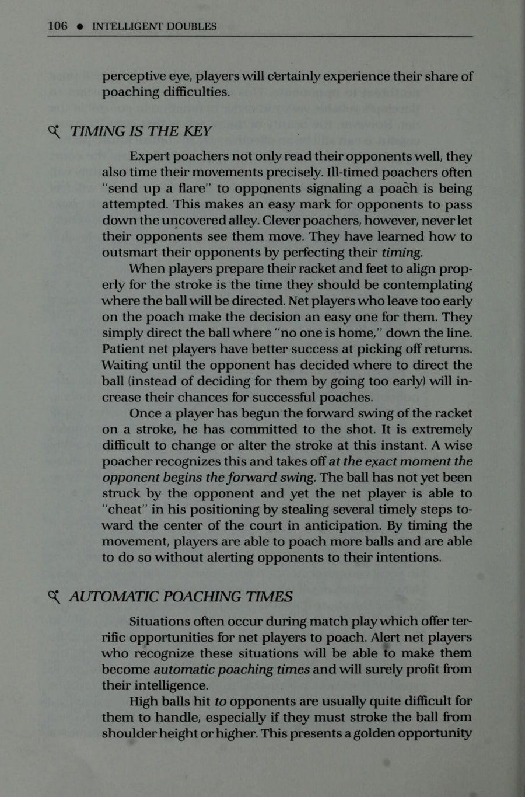
để cảm thấy thoải mái vì họ không bao giờ cho họ biết họ sẽ làm gì tiếp theo. Những người chơi lưới giỏi nhất luôn di chuyển. Không phải lúc nào chúng cũng bắt bài cắt bóng (poach) nhưng chúng luôn di chuyển như thể sắp bắt bài cắt bóng (poach). Bằng cách giả vờ bắt bài cắt bóng (poach) và đôi khi ở lại, đối thủ nhìn thấy chuyển động trên lưới nhưng không chắc chắn điều gì sẽ xảy ra. Nó mang đến sự bất an trong tâm trí đối thủ, khiến họ mất thăng bằng và luôn khó chịu trong lối chơi của mình. Người chơi giả vờ bắt trộm thực hiện chuyển động của mình trước khi đối thủ bắt đầu vung vợt về phía trước. Hãy nhớ rằng, khi vợt bắt đầu vung về phía trước, người chơi đã thực hiện cú đánh. Việc giả mạo phải xảy ra trước cam kết này để khiến đối phương nghĩ rằng họ đang đi. Sau đó, anh ta sẽ cố gắng đánh lừa kẻ bắt bài cắt bóng (poach) bằng cách chơi trò bắn súng trong con hẻm. Trước sự ngạc nhiên của anh ấy, người trong lưới không hề đi mà thay vào đó lại đợi bóng đến thẳng chỗ anh ấy! Đánh giả kép là một thủ thuật thông minh khác có thể khiến đối thủ của bạn bối rối. Khi đối thủ trở nên khôn ngoan trước những hành vi giả mạo và bắt bài cắt bóng (poach) của bạn và có thể đọc được thời điểm mỗi hành vi đó sẽ xảy ra, hãy loại bỏ chúng hoàn toàn bằng cách giả mạo kép hoặc giả mạo rồi đi tiếp. Việc giả vờ sớm trong khi cú đánh đang được chuẩn bị và sau đó một lần nữa ngay trước khi cô ấy bắt đầu thực hiện cú đánh sẽ khiến đối thủ của bạn bối rối. Giả vờ rồi đi đôi khi sẽ hoàn toàn đảm bảo quyền kiểm soát điểm bằng cách khiến đối thủ bối rối và không thể đọc được ý định của bạn. Người chơi học cách giả mạo phải nhận ra rằng trừ khi chuyển động của họ bị nhìn thấy, đối thủ sẽ cảm nhận được rất ít mối đe dọa. Những chuyển động nhẹ của đầu, cơ thể hoặc chân có thể không đủ để gây chú ý hoặc gây lo ngại. Bóng càng gần đối thủ thì chuyển động càng phải mạnh mẽ hơn vì họ tập trung vào quả bóng hơn. Tất cả việc đi, giả, giả đôi, giả và đi có thể mệt mỏi và chắc chắn đòi hỏi nhiều nỗ lực hơn là chỉ đứng bất động trên lưới. Tuy nhiên, kết quả sẽ làm cho tất cả công việc khó khăn của bạn trở nên đáng giá. Bạn sẽ không chỉ giảm được nhiều calo hơn trên mạng mà còn giành được nhiều điểm hơn! Q& MỌI NGƯỜI ĐÃ SỢ NGƯỜI ĐIÊN “Người điên” bị cho là như vậy vì họ hành động phi lý. Bởi vì phản ứng của họ không bình thường nên
Người di chuyển, kẻ bắt bài cắt bóng (poach) và người lắc @ luôn khó xác định được họ sẽ làm gì tiếp theo. Mọi người đều sợ một người điên. Nỗi sợ hãi của họ chủ yếu xoay quanh sự không chắc chắn. Người ta không bao giờ biết điều gì sẽ xảy ra ở một người không cư xử bình thường. Những người chơi mạng hiếu động cũng bị lo sợ theo cách tương tự. Họ được cho là “điên cuồng” trên lưới với mọi chuyển động của mình và vì điều này mà các đối thủ rất sợ hãi họ. Những tay vợt đánh lưới hiệu quả nhất dù bị cho là điên rồ nhưng lại thành công vì họ có tinh thần vượt trội! Họ đã biết cách thay đổi và kiểm soát khả năng sút của đối thủ thông qua các hành động trên lưới. Những người chơi đang hoạt động trên lưới cũng có thể gây ra sự nhầm lẫn và rắc rối trong tinh thần đồng đội cho đội của họ, trừ khi những điều chỉnh được thực hiện để bù đắp cho tất cả các chuyển động. Theo nguyên tắc chung, những cầu thủ đi ngang qua đường giao bóng giữa sân (chia đôi chiều dài của sân) phải ở bên phía mà họ đã vượt qua dù họ có tiếp xúc với bóng hay không. Điều này sẽ hỗ trợ đối tác sâu hơn trong việc nhận ra bên nào của sân đấu sẽ bao gồm. Anh ta phải chuyển sang bao phủ lãnh thổ mà người trên mạng để lại. Nếu người đó chạy tới chạy lui trước lưới, đối tác sâu hơn sẽ không biết nên che nửa sân nào. Q MỌI BÓNG ĐANG TỚI BẠN Nhiều cầu thủ gặp vấn đề trên lưới vì thiếu cường độ và sự sẵn sàng. Họ đã đảm nhận vị trí trên lưới nhưng thực sự không chuẩn bị sẵn sàng cho cú vô lê. Họ chỉ quen với việc chuyền bóng khi bóng hướng về phía họ và vì điều này không phải lúc nào cũng xảy ra trong các trận đánh đôi nên họ rất ngạc nhiên khi quả bóng cuối cùng cũng bay về hướng của họ. Sau khi mắc một số lỗi trên lưới, họ thậm chí còn tỏ ra kém chuẩn bị hơn cho những cú vô lê trong tương lai. Thay vì tăng cường cường độ để thực hiện cú vô lê tốt hơn, họ quyết tâm bảo vệ khu vực gần đó của mình bằng cách cố gắng thực hiện ít cú vô lê hơn vì sự tự tin của họ đã giảm xuống. Cách tốt nhất để chuẩn bị trên lưới là nghĩ rằng mọi quả bóng đều đang đến với bạn. Bằng cách này, bạn sẽ luôn căng thẳng và sẵn sàng thực hiện cú vô lê trong mỗi lần trao đổi. Bạn không cần phải đợi bóng đến, chỉ cần lập kế hoạch và chuẩn bị như thể bạn sẽ vô lê từng đường bóng do đối thủ chơi. Những cú vô lê tốt nhất sẽ xảy ra khi bạn đi tới quả bóng thay vì chờ đợi nó. Qua
nghĩ rằng mỗi cú đánh sẽ hướng đến cú vô lê, nhận thức và sự tập trung vào quả bóng của bạn sẽ được mài giũa. Nó cũng sẽ giúp bạn tránh được sự ngạc nhiên khi quả bóng cuối cùng cũng đến chỗ bạn. Q& QUY TẮC TẤN CÔNG/PHÒNG NGỦ Khi chuyền bóng, hãy nhớ quy tắc đơn giản này: Những quả bóng được lấy cao hơn mặt lưới sẽ được thực hiện tấn công, trong khi những quả bóng được lấy thấp hơn lưới là những cú đánh phòng thủ. Đây là một quy tắc rất quan trọng cần tuân thủ khi chơi gần lưới. Những quả bóng cao hơn lưới sẽ được đưa ra xa hoặc đánh để thắng. Họ phải nghiêng người, đánh giữa các đối thủ hoặc đánh trực tiếp vào đối thủ gần nhất vì thời gian phản ứng của anh ta là ngắn nhất. Bóng cao hơn đại diện cho cơ hội. Họ là những người chơi tích cực hoặc tấn công. Tránh chặn những cú vô lê cao về phía đối thủ sâu hơn, người có nhiều thời gian hơn để phản ứng. Những cầu thủ bỏ qua việc tận dụng những cơ hội bóng cao này sẽ mắc phải những lỗi chiến thuật có thể phải trả giá đắt. Một sai lầm đắt giá khác thậm chí còn xảy ra thường xuyên hơn là khi các cầu thủ đánh những cú vô lê thấp hơn quá mạnh. Họ cố gắng đánh trúng người chiến thắng ở tất cả các cú vô lê nên cú vô lê thấp hơn được xử lý giống như cú vô lê cao hơn. Tuy nhiên, cú vô lê thấp hơn là một cú sút khó hơn vì trước tiên nó phải phá lưới. Phải thận trọng khi thực hiện nó. Mặt vợt nên mở hơn khi tiếp xúc với cú đánh để cho phép khoảng trống lưới và độ sâu của cú đánh tốt hơn. Toàn bộ cơ thể hạ thấp để kiểm soát tốt những cú vô lê thấp, không chỉ vợt. Những quả bóng được đánh thấp hơn, không giống như những quả bóng cao hơn, phải được hướng ra xa đối thủ gần nhất. Lý tưởng nhất là tất cả các quả bóng đều được đánh trên mức lưới. Những người chơi tấn công trên lưới cố gắng không để bóng rơi xuống dưới mép lưới. Họ nhanh chóng di chuyển thẳng về phía trước hoặc theo đường nghiêng để bắt bóng sớm ở đỉnh điểm trước khi nó rơi xuống. Họ tránh di chuyển song song với lưới trên toàn sân. Họ biết cách tận dụng vị trí của mình và chơi những cú tấn công vào lưới. Tuy nhiên, họ hiểu quy tắc tấn công/phòng thủ; họ chỉ đơn thuần chọn chơi tấn công trên lưới. Họ nhận ra rằng ngay khi bóng rơi xuống dưới lưới, lợi thế sẽ chuyển sang đối thủ, vì vậy họ nỗ lực hết mình.
Người di chuyển, kẻ bắt bài cắt bóng (poach) và kẻ lắc @ chuyển động nhanh về phía trước. Bằng cách đưa bóng lên cao*họ có thể chơi tấn công và do đó giữ được quyền kiểm soát nhiều điểm hơn trên lưới. Q BẠN ĐANG LO LẮNG VỀ ĐIỀU GÌ - 412 FEET? Hầu hết những rắc rối trên mạng của người chơi đều bắt nguồn từ những ưu tiên lạc hậu. Họ thường quan tâm đến việc che chắn con hẻm dài 412 foot của mình đến nỗi họ quên mất 3112 foot còn lại trên sân! Cú đánh cần quan tâm trong đánh đôi không phải là cú đánh vào ngõ ngách mà là (khiến hầu hết mọi người ngạc nhiên) cú đánh chéo sân! Cú đánh này mang lại khu vực mục tiêu lớn nhất và an toàn nhất để đánh vào và là cú đánh thường được đưa ra cho đối thủ. Đối thủ có thường xuyên đưa bóng xuống đường của bạn trong các trận đấu đôi không? Số lần ném bóng vào ngõ mà đối thủ của bạn phải thực hiện càng nhiều thì trình độ của bạn càng cao. Các cú đánh vào ngõ thể hiện tỷ lệ chơi thấp hơn. Sân ngắn hơn, góc nhỏ hơn và lưới cao hơn. Đây chính là những cú đánh mà bạn muốn đối thủ của mình thực hiện! Làm cho họ tấn công con hẻm của bạn nhiều hơn, đừng cho họ những cú đánh chéo sân dễ dàng. Vấn đề lớn nhất với những người chơi cấp thấp hơn là họ đứng quá gần con hẻm. Họ cảm thấy nhiệm vụ của họ là che đi khoảng 4% chân đó mặc dù bóng có thể sẽ chỉ đi theo hướng đó vài lần trong toàn bộ trận đấu. Họ có những ưu tiên lạc hậu. Thế đứng của họ phải bắt đầu ở giữa ô giao bóng. Với một bước nhảy chéo khổng lồ và một cây vợt dang rộng, họ sẽ có thể bao quát toàn bộ con hẻm trừ vài inch. Bằng cách chọn một thế đứng gần giữa sân hơn, đối thủ khi đó sẽ có một mục tiêu chéo sân nhỏ hơn để đánh vào và buộc phải cân nhắc đến cú đánh khó hơn vào con hẻm (nơi đã bị che chắn). Nếu đối thủ chỉ đưa một vài quả bóng xuống con hẻm của bạn mỗi trận đấu, có lẽ bạn đang không thực hiện công việc trên lưới tốt nhất có thể. Làm cho họ đánh được những cú đánh có tỷ lệ đánh thấp bằng cách lấy đi những cú đánh chéo sân an toàn có tỷ lệ cao của họ. Đừng sợ những cú đánh vào hẻm của bạn, hãy bắt đầu quan tâm hơn đến các vị trí chéo sân thông thường.
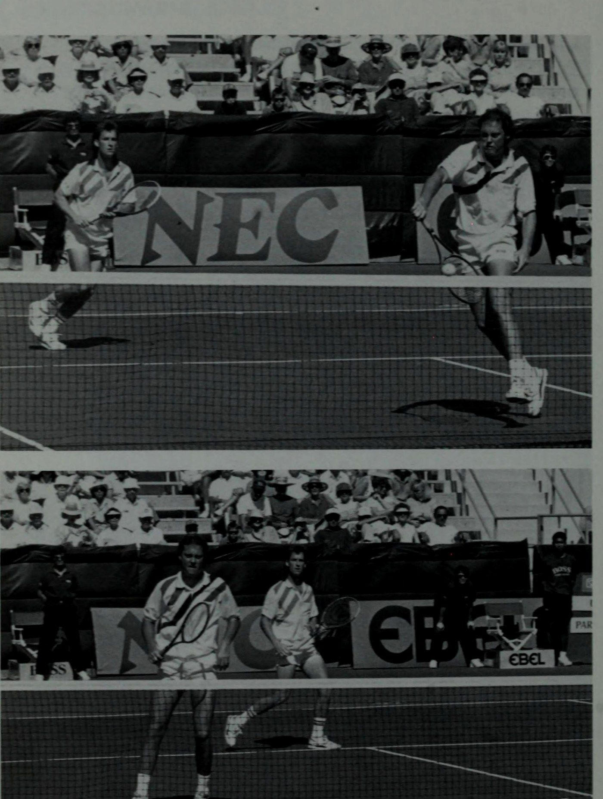
FROZEN DELIGHT Trong khi một cầu thủ chuẩn bị đánh bóng, ba cầu thủ còn lại nên tránh đứng nhìn mà không di chuyển. Đặc biệt, người chơi trên lưới phải di chuyển và định vị liên tục trong suốt điểm. Những cầu thủ đứng trên lưới như những bức tượng không có gì ấn tượng cả. Đây là nơi có thể quyết định nhiều trận đấu. Việc giữ và bẻ giao bóng có liên quan rất nhiều đến người chơi trên lưới. Những gì anh ấy làm, anh ấy chơi tốt như thế nào và lực lượng của anh ấy là bao nhiêu đều là những yếu tố góp phần quan trọng quyết định kết quả của mỗi trận đấu. Khi người trực tuyến không hoạt động, anh ta không có khả năng trở thành tài sản cho nhóm. Ngược lại, nếu anh ấy di chuyển, bắt vô lê tốt và mắc sai lầm trong quá trình này, đội của anh ấy có thể sẽ đạt được phần thành công cho dù đối tác của anh ấy mạnh đến đâu. Khi chơi trên lưới, hãy di chuyển để khiến đối thủ lo lắng và hỗ trợ đồng đội. Bạn sẽ giữ và bẻ giao bóng với tư cách một đội và nỗ lực của bạn trên lưới có thể ảnh hưởng lớn đến điểm số. Hãy di chuyển - đừng trở thành một “niềm vui đông lạnh” để đối thủ của bạn tận hưởng! Q TÓM TẮT Để kiểm soát điểm từ lưới, người chơi phải chủ động. Bằng cách di chuyển vào lưới nhiều hơn, đối thủ buộc phải thực hiện những cú đánh khó hơn và sẽ mắc nhiều lỗi hơn trong quá trình này. Những kẻ bắt bài cắt bóng (poach) thông minh đọc đối thủ của họ để dự đoán những cú đánh họ sẽ bắn. Họ căn thời gian di chuyển một cách chính xác bằng cách đợi cho đến khi đối thủ thực hiện cú đánh. Họ cướp vài bước quan trọng về phía giữa sân trước khi đối thủ đánh bóng để có vị trí thuận lợi hơn cho cú vô lê. Họ thậm chí còn cảnh giác để nhận ra những thời điểm cần tự động bắt bài cắt bóng (poach). Khi những tình huống này xảy ra, chúng có xu hướng bắt bài cắt bóng (poach) và học cách làm điều đó một cách tự động. Người chơi lưới hiệu quả luôn di chuyển. Không phải lúc nào họ cũng bắt bài cắt bóng (poach), nhưng lần nào họ cũng có vẻ như đang đi bắt bài cắt bóng (poach). Đối thủ của họ không bao giờ có thể cảm thấy thoải mái với lối chơi của họ bởi vì họ luôn quan tâm đến những gì người cầm lưới sẽ làm hơn là những gì họ làm với quả bóng. Chuẩn bị vào lưới với cường độ và sự sẵn sàng như thể mọi quả bóng đang đến với bạn. Nó sẽ giúp bạn tránh được cú vô lê khủng khiếp
Người di chuyển, kẻ bắt bài cắt bóng (poach) và kẻ gây sốc @ những điều bất ngờ. Hãy nhớ nguyên tắc vàng trên lưới: những quả bóng cao hơn lưới là những cú đánh tấn công trong khi những quả bóng được thực hiện thấp hơn lưới sẽ trở thành những cú đánh phòng thủ. Hãy ngừng lo lắng về cú ném bóng của bạn và bắt đầu lo lắng về những cú đánh chéo sân dễ dàng mà đối thủ của bạn liên tục thực hiện! Thay vào đó hãy cám dỗ đối thủ của bạn để thử con hẻm của bạn. Sự thành công của đội bạn phụ thuộc rất nhiều vào những gì bạn làm trên lưới, vì vậy hãy biến mọi việc thành hiện thực bằng cách học cách kiểm soát sân từ đó.
a4 phat ing te i Ai Were than yr eataney emo Am Ae * - 'ee GP Ae ia is rei', a ipa . r'’ Mea, ue tức là Pek | F EA] a4 ek Lee tôi béo yw oe Pe aly cle Tipe a Te nent 4h A ba) ck * *%
9. Thăng tiến qua các cấp độ: Sự trưởng thành và tiến bộ về mặt chiến thuật
CHƯƠNG 9 Thăng tiến qua các cấp độ Q ĐI ĐÂU? Vì vậy... bạn và đối tác của mình đã sẵn sàng thực hiện một bước tiến lớn. Cả hai bạn đều sẵn sàng thử thách và leo lên bậc thang thành công trong quần vợt. Nhưng cả hai bạn có cam kết thực hiện nhiệm vụ này không? Việc thực hiện một cuộc hành trình như vậy một mình thường gây ra xích mích và khó khăn giữa các đồng đội. Đây là lý do tại sao điều quan trọng là phải thiết lập các mục tiêu tương thích khi các nhóm muốn tiến lên. Nếu không có sự hiểu biết chung về vị trí hiện tại của nhóm và nơi mà nhóm muốn đi, người ta thường ít suy nghĩ về việc cố gắng đạt được điều đó. Trong mỗi chuyến đi bạn từng thực hiện, bạn đều có điểm khởi hành và điểm đến. Sau đó, bạn bắt đầu cuộc hành trình để đến đó. Tuy nhiên, nếu bạn không biết mình đang ở đâu hoặc không biết mình sẽ đi đâu, bạn có nghĩ mình sẽ có một chuyến đi thành công không?! Thật không may, đây là sự sa sút của nhiều tay vợt và là lý do khiến nhiều người bỏ môn thể thao này. Thường rất khó để xác định trình độ chơi quần vợt của bạn ở mức nào, chứ đừng nói đến việc xác định làm thế nào để đạt đến cấp độ cao nhất tiếp theo. Người chơi gôn có thể dễ dàng. Họ có hệ thống điểm chấp trong môn thể thao của họ. Việc phù hợp với các cấp độ khả năng không chỉ dễ dàng hơn mà việc xác định các cấp độ trong chơi gôn cũng dễ dàng hơn. Nếu một tay golf bắn trung bình mười gậy trên par (72) trong mười tám lỗ, điểm chấp của anh ta là mười. Để tiến bộ, anh ta chỉ cần cố gắng hạ thấp điểm chấp của mình. Người chơi quần vợt không có hệ thống handicap để đánh giá họ-
bản thân. Họ tự coi mình là người chơi ở cấp độ C, B, A hoặc Mở, thường không chắc chắn chính xác danh mục nào mô tả đúng nhất cách chơi của họ. Vì các cấp độ danh mục này khác nhau tùy theo thành phố, tiểu bang và câu lạc bộ, nên việc xác định cấp độ thực sự của trò chơi quần vợt của họ càng trở nên khó hiểu hơn. Và khi người chơi gặp khó khăn trong việc tìm ra vị trí hiện tại của họ, việc cố gắng đạt đến cấp độ cao hơn và một lần nữa không xác định dường như là một hành trình bất khả thi. Hiệp hội quần vợt Hoa Kỳ kết hợp với Hiệp hội quần vợt chuyên nghiệp Hoa Kỳ và Hiệp hội thể thao quần vợt quốc tế đã áp dụng hệ thống xếp hạng người chơi quần vợt được gọi là “Chương trình xếp hạng quần vợt quốc gia” hay Hệ thống NTRP. Mục đích của nó là cung cấp một "phương pháp tự sắp xếp ban đầu, đơn giản để nhóm các cá nhân có cấp độ năng lực tương tự nhau...'" Các hạng mục xếp hạng mô tả các cấp độ kỹ năng khác nhau trong trò chơi. Dưới đây là các cấp độ kỹ năng NTRP. Hãy đọc kỹ tất cả các hạng mục và quyết định hạng mục nào mô tả tốt nhất cấp độ khả năng cá nhân hiện tại của bạn cũng như của nhóm của bạn. Để tiến lên cấp độ cao nhất tiếp theo, chỉ cần đọc các hạng mục cao hơn để khám phá những gì bạn và đối tác của mình đang thiếu. Hãy đảm bảo mỗi người trong số các bạn hiểu được hạng cao hơn. đẫm máu và bạn sẵn sàng làm việc cùng nhau để nâng cao trò chơi của mình nhằm đạt được điều đó. Q& NTRP ĐÁNH GIÁ LOẠI 1.0 Người chơi này mới bắt đầu chơi quần vợt. 1.5 Người chơi này có kinh nghiệm chơi còn hạn chế và vẫn chủ yếu tập trung vào việc đưa bóng qua lưới; có một số kiến thức về ghi điểm nhưng chưa quen với các vị trí và quy trình cơ bản khi chơi đơn và đánh đôi 2.0 Người chơi này có thể đã có một số bài học nhưng cần có kinh nghiệm đánh bóng rõ ràng nhưng đang bắt đầu cảm thấy thoải mái. 2.5 Người chơi này có những cú đánh đáng tin cậy hơn và đang học cách phán đoán bóng sẽ đi đến đâu; phạm vi bao phủ sân yếu hoặc thường bị bắt ra khỏi vị trí, nhưng đang bắt đầu giữ bóng trong cuộc chơi với những người chơi khác có cùng khả năng. bao gồm thuận tay và trái tay
Tiến bộ qua các cấp độ @ cú vô-lê tay, nhưng vẫn thiếu chiều sâu và sự đa dạng; hiếm khi mắc lỗi kép và đôi khi gây ra lỗi khi giao bóng. 4.0 Người chơi này có các cú đánh đáng tin cậy ở cả hai bên thuận tay và trái tay; có khả năng sử dụng nhiều cú đánh khác nhau bao gồm lốp bóng, đánh đầu, tiếp cận và vô lê; có thể thực hiện cú giao bóng đầu tiên và mắc một số lỗi; hiếm khi bị mất vị trí trong một trận đấu đôi. 4.5 Người chơi này đã bắt đầu thành thạo việc sử dụng lực và xoay; có bước chân khỏe mạnh; có thể kiểm soát độ sâu của cú đánh và có thể di chuyển đối thủ lên và lùi; có thể thực hiện cú giao bóng đầu tiên với sức mạnh và độ chính xác và thực hiện cú giao bóng thứ hai; có thể lao vào lưới với một số thành công khi giao bóng ở nội dung đánh đơn cũng như đánh đôi. 5.0 Cầu thủ này có khả năng dự đoán cú sút tốt; thường có một cú đánh xuất sắc về tính nhất quán đặc biệt mà xung quanh đó một trò chơi có thể được cấu trúc; có thể thường xuyên đánh trúng người chiến thắng hoặc buộc phải phạm lỗi với những đường bóng ngắn; có thể thực hiện thành công các cú lốp bóng, cú sút, cú vô lê và những cú đập từ trên cao; có độ sâu và độ xoáy tốt trong hầu hết các cú giao bóng thứ hai. 5.5 Cầu thủ này có khả năng được xếp hạng ở cấp khu vực; đã phát triển sức mạnh và/hoặc tính nhất quán như một vũ khí chính; Có thể thay đổi chiến lược và phong cách chơi trong tình huống cạnh tranh. 6.0 Cầu thủ này thường được đào tạo chuyên sâu để thi đấu giải quốc gia ở cấp cơ sở và đại học và đã đạt được xếp hạng theo khu vực. 6.5 Người chơi này có cơ hội hợp lý để thành công ở cấp độ 7.0, có nhiều kinh nghiệm thi đấu vệ tinh và đã đạt được thứ hạng cao nhất ở trường đại học. 7.0 Đây là tay vợt đẳng cấp thế giới, bất kỳ nam nào hiện đang đứng trong top 500 trên máy tính ATP và bất kỳ nữ nào cũng đứng trong top 200 trên máy tính WIA. Người chơi này cam kết thi đấu giải đấu ở cấp độ quốc tế và có nguồn thu nhập chính là tiền thưởng giải đấu. Q CHIẾN THẮNG KHÔNG QUAN TRỌNG NHƯ HỌC TẬP VÀ NÂNG CAO Thành công, thật không may, thường được đo bằng thắng và thua trong quần vợt, giống như hầu hết các môn thể thao. “Con có thắng không?” là câu hỏi đầu tiên từ cha mẹ, huấn luyện viên, bạn bè đối với các cầu thủ sau một trận đấu.
cảm giác thỏa mãn tức thời, tác dụng của nó dừng lại ở đó. Để tiếp tục thăng tiến qua các cấp độ, học tập và cải thiện là những yếu tố quan trọng nhất. Nếu không có hai thứ này, trận đấu quần vợt của bạn sẽ bị trì trệ, không thể tiến triển ngay cả khi bạn thắng. Hãy để tôi giải thích. Thắng mà không rút kinh nghiệm là thắng/thua. Mặc dù chiến thắng được ghi nhận nhưng người chơi đã thực sự thua vì không tiến bộ trong quá trình này. Những người chơi liên tục ghi điểm thắng/thua chắc chắn sẽ chuyển thành thua/thua trong tương lai. Khi người chơi đạt đến trạng thái ổn định trong trò chơi của mình, đây chính xác là điều đã xảy ra. Họ không chắc chắn về cách tiến bộ vì họ chưa tận dụng hết khả năng tinh thần của mình để giúp họ phát huy hết tiềm năng của mình bằng cách bỏ qua việc học hỏi từ những trận đấu mà họ đã chơi. Thua một trận đấu nhưng rút kinh nghiệm trong quá trình đó có thể khiến kết quả dễ nuốt trôi hơn. Khi người chơi tìm hiểu lý do thua cuộc, khám phá những cú đánh nào cần chú ý và xây dựng chiến lược tốt hơn để chống lại đối thủ, họ đã ghi được điểm thua/thắng. Ngay cả khi tỷ số chênh lệch, người chơi thua cuộc vẫn rút ra được kinh nghiệm từ vô số kiến thức cần thiết để thăng tiến, vì vậy thực tế người chơi đã thực sự thắng trận đấu! Tuy nhiên, để giành chiến thắng trong trận đấu và học hỏi trong quá trình thi đấu là điều lý tưởng, khi người chơi cố gắng học hỏi từ mỗi trận đấu trên sân xem tỷ số cho thấy thắng hay thua, họ được đảm bảo sẽ tiếp tục cải thiện khả năng chơi quần vợt của mình. Hãy tìm kiếm câu trả lời cụ thể từ trận đấu hoặc buổi luyện tập mà bạn đã chơi. Hãy nhớ lại những điểm chính trong đầu, tìm kiếm những cú đánh tốt và xấu mà đội của bạn đã chơi cũng như của đối thủ. Hãy cố nhớ lại khi nào đà của trận đấu thay đổi và nguyên nhân khiến nó thay đổi như vậy. Hãy cố gắng ghi nhớ những suy nghĩ của bạn. Thảo luận càng nhiều khía cạnh của trận đấu càng tốt với đối tác của bạn sau khi kết thúc trận đấu, cho dù bạn thắng hay thua. Sau đó, hai bạn sẽ có được cái nhìn sâu sắc có giá trị từ trải nghiệm này. Nó cũng sẽ giúp mỗi bạn phân tích tốt hơn các sự kiện xảy ra trong trận đấu, từ đó giúp đội của bạn ghi được nhiều chiến thắng nhờ trí thông minh của mình. Các nhà giáo dục hiểu rằng để kiến thức “gắn bó” hay đọng lại trong tâm trí thì kiến thức đó phải được sử dụng và thực hành. Những người chơi đang cố gắng vượt qua các cấp độ phải kiểm tra kiến thức đã học của mình và sử dụng nó trên sân. Chal-
Tiến bộ qua các cấp độ @ tập hợp những đội mà trước đây khó chơi tốt, đừng tránh né họ. Thi đấu với mọi cấp độ người chơi để học cách chơi tốt nhất với từng cấp độ. Đưa nhóm của bạn vào thử nghiệm. Thi đấu trong các giải đấu khi bạn có cơ hội. Nó có thể là bài học ít tốn kém nhất mà bạn từng có! Tìm cách tiếp tục học hỏi và chia sẻ kiến thức mới với đối tác của bạn. Nhóm của bạn sẽ không bao giờ dao động trên con đường cải tiến khi trọng tâm chính là học tập, cho dù điểm số bạn ghi được có thuận lợi hay không. Q CẠNH TÂM TRÍ Quần vợt thực sự là một trò chơi tinh thần. Tuy nhiên, rất khó để nói chính xác bao nhiêu phần trăm yêu cầu là tinh thần và bao nhiêu phần trăm là thể chất đối với các cầu thủ. Khi mức độ chơi tăng lên, tầm quan trọng của các yêu cầu về tinh thần chắc chắn cũng tăng lên nhiều. Những người chơi có kinh nghiệm có thể kiểm soát tâm trí của họ. Họ tập trung hoặc tập trung, cho phép phát huy tối đa tiềm năng tinh thần. Họ cũng để tâm trí “bật” tư duy chiến lược và chiến thuật để tránh lối chơi thiếu suy nghĩ. Họ có niềm tin và sự tự tin vào bản thân bằng cách lựa chọn những suy nghĩ tích cực để mô tả lối chơi của mình. Để chơi tốt như nhau ở mọi cấp độ đòi hỏi phải có sự tập trung cao độ. Việc chơi tốt và tập trung tốt hơn trước những đối thủ mạnh hơn thường dễ dàng hơn so với khi chơi những trận đấu dễ hơn. Tâm trí có xu hướng đi lang thang vì buồn chán hoặc thiếu quyết tâm trước những đối thủ yếu hơn. Tuy nhiên, để phát triển trí óc (và trò chơi của bạn), mục tiêu của bạn là phải tập trung tối đa mỗi khi ra sân. Không quan trọng đó là luyện tập, bài học, trận đấu câu lạc bộ, giải đấu hay chỉ là một cú đánh. Bạn sẽ nhận lại được từ tâm trí mình những gì bạn cho phép nó làm. Cố gắng tập trung vào việc chơi của bạn một cách rời rạc thường sẽ dẫn đến việc chơi không nhất quán hoặc rời rạc. Những người chơi giành chiến thắng liên tục đã tiến bộ thành công trong trò chơi của họ đều đã học được cách tập trung vào mọi cú đánh bất kể ai ở bên kia lưới. Họ đã khám phá ra bí quyết để chơi tốt một cách nhất quán – luôn tập trung! Những cầu thủ đã chuẩn bị tinh thần và sẵn sàng cho trận đấu sẽ không phản ứng trong khi chơi mà hành động. Những người phản ứng với các tình huống trên sân chưa đưa ra nhiều
nghĩ cho họ, trong khi những người chơi hành động có tầm nhìn xa để xây dựng kế hoạch cho những gì họ sẽ làm. Với suy nghĩ này, họ có thể thực hiện kế hoạch của mình bằng các hành động trước tòa. Việc lập kế hoạch chiến lược và chiến thuật được thực hiện thông qua tư duy theo thói quen. Tuy nhiên, những người có tư duy tốt hơn trong quần vợt thường không được rèn luyện trong một sớm một chiều, họ được phát triển theo thời gian. Nói chung, cấp độ của người chơi càng cao thì họ càng phát hiện ra điểm yếu tốt hơn. Đây là lý do tại sao nhiều chuyên gia thi đấu trước đây có thể chuyển sang sân giảng dạy. Họ đã tiến bộ trong môn thể thao này bằng cách học cách đọc đối thủ của mình. Trên sân giảng dạy, họ sẽ tiếp tục phát hiện ra những điểm yếu trên mạng, chỉ có điều lần này họ sẽ giúp đỡ người khác chứ không phải lợi dụng! Để trở thành người có tư duy tốt hơn, hãy phân tích trò chơi của chính bạn cũng như của đối thủ. Điều chỉnh chiến lược của bạn cho phù hợp với phong cách chơi của bạn và trò chơi cần thiết để đấu với đối thủ của bạn. Kế hoạch trò chơi này phụ thuộc vào đối thủ của bạn và điểm yếu của họ. Q. Ai có chi phí yếu hơn? A. Lob người này. Q. Đối thủ có yếu trong việc trả giao bóng không? A. Hãy tấn công người này nhiều hơn. Q. Có cú giao bóng thứ hai yếu không? A. Hãy đứng vào và tận dụng nó. Q. Đối thủ nào là người chuyền bóng yếu hơn? A. Chơi người này trên mạng. Q. Một người có chậm hơn không? A. Chơi người này rộng hơn. Q. Những nét yêu thích của họ là gì? A. Chơi tất cả những cái khác, không phải những cái này. Q. Vị trí yêu thích của họ trên sân là gì? A: Bắt họ chơi ở vị trí khác. . Q. Cú đánh yếu nhất mà họ sở hữu là gì? A. Chơi cái này đi chơi lại. Q. Họ thích chụp ảnh ở độ cao nào? A. Cung cấp cho họ tất cả các độ cao khác.
Tiến bộ qua các cấp độ @ -* Q. Họ thích tốc độ nào hơn? A. Chơi các cú đánh với tốc độ mà họ không thích. Hãy linh hoạt trong kế hoạch của bạn sau khi điểm yếu của họ đã được phân tích và thảo luận. Các tình huống được biết là sẽ thay đổi trong quá trình thi đấu. Một điểm yếu được chơi đi chơi lại có thể trở thành điểm mạnh và thực sự trở thành điểm mạnh khi trận đấu diễn ra. Bạn phải chú ý đến những thay đổi này và sẵn sàng điều chỉnh các chiến lược mới khi chúng xảy ra. Trò chơi quần vợt của bạn sẽ chỉ tiến tới mức độ mà bạn nghĩ nó có thể. Nghe có vẻ đơn giản nhưng nó rất đúng. Suy nghĩ tích cực là suy nghĩ có kiểm soát. Rất ít điều có thể đạt được mà không có nó. Hãy để những suy nghĩ tiêu cực hoặc nghi ngờ xâm nhập vào tâm trí bạn và chúng bắt đầu tiêu hao niềm tin và quyết tâm của bạn, cuối cùng cản trở bạn thực hiện nhiệm vụ. Hãy cẩn thận trong việc lựa chọn suy nghĩ của bạn. Kỷ luật bản thân để suy nghĩ tích cực cả trong và ngoài sân đấu để giúp xây dựng sự tự tin và niềm tin vào trò chơi của bạn. Tâm trí của bạn sẽ giúp đưa bạn đến những đỉnh cao vĩ đại hoặc nó sẽ ngăn cản bạn đạt được chúng. Sự lựa chọn là của bạn, vì chỉ có bạn mới kiểm soát được tâm trí của mình! Hỏi & CÁCH ĐƯA BẠN ĐẾN ĐÓ Đánh đôi là một trò chơi yêu cầu các cú đánh nhất quán cùng với vị trí phần trăm. Tuy nhiên, những người thu hồi không tận dụng được lợi thế của vị trí sân và lựa chọn cú đánh hiệu quả sẽ gặp khó khăn trong việc tiến bộ trong trò chơi của họ. Điều này là do điều quan trọng là phải hiểu rằng khi cấp độ của người chơi tăng lên thì mục đích và chất lượng của các vị trí sẽ được cải thiện. Bóng không thể đơn giản được đánh trở lại lưới nữa mà chúng phải được định hướng chính xác để có kết quả tối ưu. Trọng tâm chính của đội bạn phải là giành được các cú giao bóng của bạn. Đội của bạn càng dễ dàng giữ được cú giao bóng của bạn thì đội của bạn càng dễ tiến lên. Tuy nhiên, nghe có vẻ cực kỳ đơn giản, nó phải là cơ sở để nhóm của bạn xây dựng trò chơi của mình. GIỮ PHỤC VỤ! Làm việc với đối tác của bạn để giữ giao bóng dễ dàng hơn. Những cú đánh sẽ đưa bạn đến đích có tỷ lệ giao bóng đầu tiên cao và giao bóng thứ hai đáng tin cậy (và chất lượng). Máy chủ phải học cách khiến đối thủ “làm việc” thông qua các vị trí chính xác. Người nhận bóng không nên thoải mái trả bóng bằng cách chỉ đứng, xoay người và đánh. Người giao bóng phải nhắm vào các góc của ô dịch vụ và buộc
người nhận bóng lao tới, duỗi người hoặc chạy khi cố gắng trả bóng. Anh ta nên thay đổi, thay đổi hoặc trộn lẫn cú giao bóng để đối thủ không bao giờ cảm thấy thoải mái khi biết điều gì sẽ xảy ra. Những quả bóng được đánh với độ xoáy khác nhau sẽ thực hiện được điều này cũng như những cú đánh thay đổi tốc độ và vị trí của cú đánh để khiến đối thủ phải đoán. Các máy chủ thông minh khai thác điểm yếu của đối thủ và phối hợp việc phân phối của họ đủ để phá vỡ nhịp điệu và thời gian mà hầu hết người nhận mong muốn. ‘’ Để giữ hoặc thắng giao bóng đòi hỏi nỗ lực của cả đội. Nếu không có sự trợ giúp từ đối tác mạng, máy chủ sẽ gặp khó khăn khi cố gắng giành chiến thắng trong trò chơi một mình. Các cú đánh được tính ở đây là cú vô lê và cú đánh qua đầu. Nếu có cơ hội để đưa bóng đi, nguyên tắc cơ bản đối với người trên lưới là chỉ cần làm như vậy, hãy đưa bóng đi! Những người chơi trên lưới nên tìm cách giúp đội giữ được quả giao bóng. Lời khuyên chiến lược cùng nhiều chuyển động và hoạt động chắc chắn sẽ giúp ích cho mục tiêu, tuy nhiên, việc bắt bài cắt bóng (poach) đúng lúc và các cú đánh được đặt chính xác sẽ đảm bảo thành công của đội. Phá vỡ (hoặc chiến thắng) các trò chơi giao bóng của đối thủ là trọng tâm chính khác của đội bạn. Các cú đánh quan trọng để bẻ giao bóng là trả giao bóng, lốp bóng và vô lê. Những người trả bóng thành công sẽ hướng cú đánh của mình với sự kiểm soát nhất quán. Họ tránh xa những cú đánh có tỷ lệ phần trăm thấp tạo ra kết quả không nhất quán. Trong khi cú trả bóng chéo sân là phần trăm chơi, người nhận bóng phải nỗ lực để giữ bóng trong cuộc một cách hiệu quả, đồng thời tránh xa sự tấn công của đội giao bóng. Lợi nhuận thấp hoặc lốp bóng được đặt sâu hơn có thể được sử dụng để cản trở kế hoạch tấn công của đội giao bóng. Một khi hành vi phạm lỗi đã chuyển khỏi đội giao bóng có vị trí như vậy, người nhận bóng nên cố gắng tận dụng tình thế bằng cách cướp đi vị trí tấn công. Việc kiểm soát điểm sau đó được chuyển sang đội tiếp nhận. Việc giữ và bẻ giao bóng chỉ có thể được thực hiện bằng những cú đánh nhất quán và đáng tin cậy. Rõ ràng, rất khó để chuyển sang cấp độ cao nhất tiếp theo với những điểm yếu rõ ràng trong cú đánh. Bạn cần những cú đánh mà bạn có thể tin cậy: Năm cú đánh được thảo luận — giao bóng, vô lê, đánh đầu, trả giao và lốp bóng — là những cú đánh cơ bản cần thiết để hoàn thành các chức năng quan trọng của việc giữ và bẻ giao bóng. Những cú đánh này càng chính xác một cách nhất quán thì nhóm của bạn càng dễ dàng tiến lên các cấp độ cao hơn.
Tiến bộ qua các cấp độ @ Q PHÁT TRIỂN MỘT TÚI THỦ THUẬT : Các chính trị gia giỏi dường như không bao giờ cạn lời. Họ thường có thể nói theo cách của mình trong hầu hết các tình huống, thường che đậy vấn đề bằng những biệt ngữ tu từ. Họ có thể đặt câu hỏi nhưng không đưa ra câu trả lời và trong quá trình đó họ đổ lỗi cho đối thủ! Họ dường như sở hữu một sở trường kỳ lạ trong việc tìm cách giải quyết các vấn đề. Các đội đánh đôi thành công cũng được trang bị một “túi thủ thuật”. Họ không chơi trò chơi mà không có sự chuẩn bị, họ dường như có câu trả lời cho mọi tình huống từ rất lâu trước khi họ phải đối mặt với nó. Họ cũng rất thông minh trong cách trả lời, thường khiến đối thủ mất thăng bằng trong quá trình đó. Một loạt thủ thuật không gì khác hơn là sự chuẩn bị đã được lập trình sẵn. Với việc xem xét cẩn thận các câu hỏi trước khi được hỏi, câu trả lời luôn trở nên dễ dàng. Tương tự như vậy, bằng cách chuẩn bị lựa chọn cú đánh cho các tình huống khác nhau mà đội của bạn sẽ gặp phải, bạn sẽ có câu trả lời được chuẩn bị sẵn và sẵn sàng trả lời trong khi thi đấu. Điều cần thiết là sự cam kết toàn diện về trò chơi từ bạn và đối tác của bạn. Đội có kho thủ thuật lớn hơn hiếm khi thấy mình thua lỗ trong các giải pháp trận đấu, trong khi các đội có ít thủ thuật sẽ chỉ đạt được thành công hạn chế với ít câu trả lời hơn. Những người chơi “một chiều” thường thực hiện tốt một nhiệm vụ duy nhất. Có thể họ chỉ chơi trận đấu theo hướng tấn công hoặc phòng thủ, chỉ từ đường cuối sân hoặc trên lưới, hoặc chỉ bằng những cú đánh mạnh hoặc nhẹ. Người chơi một chiều sẽ đánh bại một số người chơi nhưng chắc chắn không phải tất cả. Họ thiếu toàn bộ kỹ năng cần thiết để đánh bại nhiều phong cách và cấp độ khả năng khác nhau. Họ phải trở nên tròn trịa hơn khi là người chơi để tiến bộ. Túi thủ thuật của họ cần phải phát triển để ghi điểm tốt trước nhiều đối thủ mà họ sẽ phải đối mặt. Lựa chọn cú đánh là bước khởi đầu tốt trong quá trình phát triển một trò chơi tổng thể. Mặc dù những cú đánh đôi tốt nên bắt đầu với một số cú đánh hạn chế mà bạn có thể tin cậy được, nhưng việc chơi đôi nâng cao đòi hỏi phải có kiến thức thực hành tốt về tất cả các cú đánh. Những người chơi hiểu và đã thực hành nhiều kiểu đánh khác nhau sẽ thấy mình sẵn sàng lặp lại những cú đánh tương tự này trong các trận đấu. Những cú đánh như cú thả bóng, cú vô lê, cú lốp bóng, cú vô lê nửa người, cú sút chip, cú đánh tiếp cận và những cú đánh sau đầu cùng nhiều cú đánh khác cần được học và phát triển. Chất lượng kiểm soát, về độ xoáy, độ sâu và lực, phải
cũng bắt đầu được áp dụng cho các nét bạn đã có để nâng cao hiệu suất của chúng. Hãy nhớ rằng, việc xây dựng một kho vũ khí lớn hơn có thể đồng nghĩa với việc bạn sẽ có nhiều câu trả lời hơn trong túi thủ thuật để mang lại nhiều thành công hơn cho đội của mình. Phát triển một loạt các kế hoạch chiến lược cũng có thể tăng cơ hội thành công cho nhóm của bạn. Thay đổi vị trí mà đội của bạn chơi khi cần thiết — lùi lại để thực hiện các động tác phòng thủ, lên lưới để chơi tấn công và tạo các vị trí mới chẳng hạn như đội hình đôi Úc — giúp đội của bạn có khả năng thích ứng để cho phép thay đổi chiến lược. Phát triển một trò chơi lốp bóng, một trò chơi tấn công, một trò chơi ổn định và một trò chơi kiên nhẫn cũng có thể giúp bạn chuẩn bị tốt nhất cho những yêu cầu này khi tình huống phát sinh. Cuối cùng, việc kiểm soát bóng tốt hơn và vị trí của nó là rất quan trọng trong việc phát triển các trận đấu của bạn. Những người có khả năng điều khiển bóng sâu và ngắn ở mọi cú đánh, cao hay thấp, đồng thời có thể đánh bóng mạnh hay mềm đều có thể đặt bóng hiệu quả trong nhiều tình huống trận đấu khác nhau. @ LÀM THẾ NÀO ĐỂ CÓ ĐƯỢC MAY MẮN Bạn và người ấy sẽ tự tạo nên vận may trong cuộc sống. Bạn sẽ tự mình chuẩn bị cho việc đó hay không. Bạn thấy đấy, bạn càng làm việc chăm chỉ trong cuộc sống thì bạn sẽ càng may mắn! Những người không thành đạt từ chối tin vào điều này. Họ sống cuộc đời của mình với niềm tin rằng may mắn là một cơ hội xảy ra mà dường như không bao giờ xảy đến với họ. Thành công của những người khác được hợp lý hóa hoàn toàn dựa trên may mắn, vì họ ghen tị khi người khác gặp may mắn. Họ có thể sẽ thấy mình may mắn hơn nhiều trong cuộc sống nếu họ học được cách đơn giản là bắt tay vào làm việc! Thật không may, có rất ít lối tắt trên con đường dẫn đến thành công. Để có được chiếc bánh “nhân đôi và ăn luôn” sẽ phải tốn rất nhiều công sức trên sân, thậm chí có thể là rất nhiều. Kỷ luật là những gì sẽ được yêu cầu ở bạn và đối tác của bạn cùng với mức độ mong muốn cao ở cả hai bạn. Một khi bạn quyết định nâng cao trình độ của mình, hãy cam kết thực hiện điều đó bằng cách làm điều gì đó nhiều hơn về nó. Chỉ cần mong muốn hoặc mơ ước tiến bộ sẽ giúp đội của bạn đạt được nhiều thành công giống như trúng xổ số - một trong hàng triệu cơ hội thành công! Các đội thích luyện tập bằng cách chỉ chơi các trận đấu cùng nhau có thể đạt được sự tiến bộ nhanh hơn bằng cách thay đổi lịch tập luyện của họ. Đào tạo và khoan là cần thiết
Tiến bộ qua các cấp độ @ yêu cầu ngoài việc chơi trận đấu. Sự tự tin và niềm tin vào các cú đánh cũng như bản thân phải được phát triển và điều này thường chỉ có thể đạt được thông qua việc luyện tập lặp đi lặp lại. Để cải thiện, một số đội chỉ cần luyện tập, luyện tập, luyện tập. Thực hành theo cách này có thể là niềm vui, một thử thách thực sự hoặc có thể là một sự nhàm chán thực sự. Tất cả phụ thuộc vào thái độ của nhóm và tầm quan trọng của việc cải thiện. Hai bạn thực sự muốn nâng cao trình độ của mình đến mức nào? Nếu bạn muốn đủ, hãy chuẩn bị tinh thần để làm việc cho nó. Có thể bạn và đối tác của mình phát hiện ra rằng vấn đề với nhóm của bạn nằm ở việc khắc phục những thiếu sót. Nếu bạn không chắc chắn về vấn đề này, một bài học cùng với một chuyên gia giảng dạy có trình độ có thể chữa khỏi bệnh. Tuy nhiên, nếu bạn nhận thức được vấn đề, hãy sử dụng thời gian thực hành một cách khôn ngoan. Có thể đó là một cú đánh đơn lẻ như cú giao bóng của bạn cần được chú ý. Đặt mục tiêu vào các góc của ô giao bóng trên lưới và cùng với đối tác của bạn tiến hành chỉ đạo hàng trăm cú giao bóng để thực hành các vị trí chính xác. Đây là cách để cải thiện cú đánh của bạn. Tập trung vào các lĩnh vực có vấn đề và sau đó làm việc cùng với đối tác của bạn để phát triển sự tự tin và niềm tin vào các cú đánh của bạn. Hãy luyện tập theo cách bạn muốn đội của mình chơi. Ví dụ: nếu bạn và đối tác của mình mong muốn trở thành người giao bóng và chuyền bóng giỏi hơn, hãy dành nhiều thời gian hơn để luyện tập phong cách chơi này. Đội của bạn sẽ không bao giờ giao bóng và chuyền bóng trong những trận đấu quan trọng nếu bạn không tự tin khi thực hiện điều đó, vì vậy hãy luyện tập giao bóng và chuyền bóng để phát triển mức độ tự tin của bạn đến mức bạn sẽ cảm thấy thoải mái khi sử dụng nó trong trận đấu. Luôn luôn, cách đội của bạn luyện tập sẽ quyết định lối chơi cuối cùng của đội. Nếu có một cú đánh, chiến lược hoặc phong cách chơi mà đội của bạn mong muốn, bạn chỉ cần dành nhiều thời gian luyện tập hơn để phát triển sự tự tin của mình về nó. Khi bạn và đối tác của mình đã có cam kết nội tâm để trở nên xuất sắc thì việc thực hành của bạn sẽ có mục đích. Chúng sẽ trở nên thách thức và bổ ích hơn một khi tầm quan trọng của việc cải thiện thực hành được đặt lên hàng đầu. Tập trung vào thời gian luyện tập của bạn và chuẩn bị làm việc nếu cần thiết. Những người thành công luôn chứng thực rằng không phải việc đạt tới đỉnh cao mang lại cho họ niềm vui lớn nhất mà tất cả những nỗ lực và đấu tranh trên suốt chặng đường mới là điều xứng đáng nhất. Hãy tận hưởng thử thách và bạn và đối tác của mình chắc chắn sẽ trở nên may mắn hơn vì nó.
& ĐỪNG QUÊN: ĐÔI LÀ KỊ khí Những ai nghĩ rằng mình đang lấy lại vóc dáng khi chơi đánh đôi, tôi có tin cho bạn đây. . . đánh đôi là một bài tập kỵ khí! Điều này có nghĩa là, nếu bạn muốn chơi đánh đôi cấp cao nhất, bạn sẽ phải lấy lại vóc dáng thông qua các phương tiện khác thay vì chỉ chơi đánh đôi. Có một cơ thể cân đối không chỉ mang lại lợi ích về thể chất cho bản thân và nhóm của bạn mà còn mang lại nhiều lợi ích về mặt tinh thần. Để bạn và đối tác của mình chơi hết mình, cần có sự cam kết rằng trước tiên mỗi người trong số các bạn sẽ có được thể trạng tốt nhất có thể. Nền tảng hiếu khí có thể được xây dựng trong mỗi bạn thông qua việc thỉnh thoảng chơi đơn, chạy, đi bộ, đi xe đạp, tham gia lớp thể dục nhịp điệu hoặc các bài tập khác bao gồm chuyển động liên tục trong thời gian dài và sử dụng từ 60% đến 90% dự trữ tối đa của tim bạn. Những cầu thủ có nền tảng hiếu khí vững chắc sẽ phục hồi nhanh hơn và ít mệt mỏi hơn. Họ cũng thường có huyết áp thấp hơn, mức độ căng thẳng tốt hơn, mức cholesterol thấp hơn, cân nặng được kiểm soát tốt hơn và lòng tự trọng cao hơn, chưa kể chơi quần vợt tốt hơn. Lý do bài tập đơn thường được coi là bài tập aerobic còn bài tập đôi thì không là do tỷ lệ “làm việc-nghỉ ngơi” trong mỗi bài tập. Những người chơi đôi có tỷ lệ làm việc và nghỉ ngơi ngắn hơn so với những người chơi đơn, những người phải tự mình bao quát toàn bộ sân cũng như đánh mọi quả bóng được đánh về phía họ. Đánh đôi được chơi ở cấp độ cao nhất là ngoại lệ đối với quy tắc này. Tuy nhiên, hầu hết các cú đánh đôi không được thực hiện với đủ nỗ lực để khuấy động hệ thống tim mạch nhằm tăng đáng kể lượng oxy hấp thụ vào cơ thể. Đánh đôi thường chỉ mang lại khoảng một nửa lợi ích của việc chơi đơn và các hoạt động thể dục nhịp điệu khác. Đây là lý do tại sao đánh đôi không được hầu hết các chuyên gia y học thể thao coi là một "hoạt động thể dục". Những người chơi ở trình độ cao nhận ra thực tế này và tập luyện theo những cách khác để giúp ích cho việc đánh đôi của họ. Bạn và đồng đội của mình có đủ thể lực không? Nếu vậy, có lẽ bạn đang thực hiện) sự kết hợp giữa tập aerobic và chơi đánh đôi. Nếu bạn không cảm thấy mình đang ở trạng thái tốt nhất, tôi thực sự khuyên bạn nên bổ sung cho việc chơi đôi của mình bằng một hoặc một số hoạt động thể dục để có thể trạng tốt hơn và chuẩn bị cho kết quả tối ưu.
Tiến bộ qua các cấp độ @ @ TÓM TẮT eae Để thăng tiến trong trò chơi của mình, bạn và đối tác của mình cần đánh giá xem bạn hiện đang ở đâu và bạn muốn ở đâu trong tương lai. Hãy tự đánh giá theo thang NTRP để xác định cấp độ bạn chơi trò chơi, sau đó đọc các cấp độ cao hơn để xác định những gì cần thiết để nâng cấp trò chơi của bạn lên các cấp độ cao hơn này. Luôn phấn đấu để “chiến thắng” trong các trận đấu mà bạn tham gia bằng cách không ngừng học hỏi để tiến bộ. Ngay cả khi kết quả của bạn không thuận lợi, đội của bạn sẽ tiếp tục đi đến thành công khi bạn liên tục thu thập được kiến thức từ mỗi trận đấu mà mình tham gia. Những người chơi giành chiến thắng nhưng không học hỏi trong quá trình thực hiện thì thực sự là những kẻ thua cuộc thực sự trong các trận đấu mà họ chơi! Để đạt được lợi thế tinh thần đòi hỏi một tâm trí tập trung, tư duy chiến lược và chiến thuật, cũng như niềm tin và sự tự tin thông qua những suy nghĩ tích cực. Không có gì khác biệt ở bên kia lưới, trò chơi tinh thần được diễn ra trong đầu bạn và chỉ có bạn mới kiểm soát được nó. Trọng tâm chính của bạn và đối tác của bạn là luôn giữ giao bóng và ngắt giao bóng bất cứ khi nào có thể. Các cú đánh đưa bạn đến đó phải được thực hiện một cách nhất quán để chúng trở nên đáng tin cậy. Tuy nhiên, chơi đôi nâng cao đòi hỏi phạm vi cú đánh, chiến lược và khả năng kiểm soát rộng hơn. Những người chơi cấp thấp hơn có thành công hạn chế vì họ vẫn còn hạn chế về khả năng, trong khi các đội cao cấp dễ dàng vượt trội hơn với nhiều thủ thuật lớn hơn. Nếu bạn và đối tác muốn gặp may mắn, hãy bắt tay vào làm! Bạn càng luyện tập chăm chỉ trên sân tập, bạn sẽ trở thành đội đánh đôi may mắn hơn! Nếu bạn không có thể trạng tốt, đừng mong cải thiện tình trạng của mình thông qua các trận đấu đôi. Để chơi hết mình, bạn cần phải xây dựng một nền tảng thể dục nhịp điệu vững chắc thông qua các hoạt động thể dục nhịp điệu bổ sung. Lấy lại vóc dáng để chơi những trận đánh đôi tốt nhất của bạn; đừng cho rằng trận đấu đôi hay nhất của bạn sẽ diễn ra nếu không có nó.
10. Sân quần vợt ly hôn nhân đôi: Phát huy những điều tốt nhất ở đối tác của bạn
CHƯƠNG 10 Sân quần vợt ly hôn đôi Q& MANG LẠI ĐIỀU TỐT NHẤT (HOẶC Tệ nhất) cho ĐỐI TÁC CỦA BẠN Đôi nam nữ đang nhanh chóng trở thành một trong những hình thức chơi quần vợt phổ biến nhất hiện nay, đặc biệt là ở cấp câu lạc bộ. Nó tạo cơ hội cho nam và nữ cạnh tranh cùng nhau trong một môn thể thao, thường là trên cơ sở bình đẳng. Mặc dù chương này chủ yếu dành cho môn đấu đôi nam nữ, nhưng nó thực sự đề cập đến "những rắc rối về quan hệ đối tác" có thể được áp dụng như nhau cho cả đôi nam và nữ. Thái độ chiến thắng cơ bản giống nhau áp dụng cho các trận đấu đôi nam nữ cũng như các trận đấu đôi khác. Tuy nhiên, trong các trận đấu đôi nam nữ thêm áp lực tinh thần khiến trận đấu trở nên khó khăn hơn đối với nhiều người. Đôi khi, nữ cảm thấy thấp kém hoặc thậm chí xấu hổ nếu không thể làm phần việc của mình cho đồng đội. Nam tin rằng vai trò của mình là người chiếm ưu thế và sẽ làm như vậy. chơi với lòng tự trọng thấp hơn nếu anh ta không chứng tỏ mình là người vượt trội trên sân. Cách phát huy những điều tốt nhất ở đối tác của bạn, bất kể giới tính, là tạo cho họ sự tự tin. Làm cho họ cảm thấy mình quan trọng và thể hiện sự tôn trọng đối với bạn. Những người chơi hiểu được điều này sẽ cố gắng xây dựng sự tự tin cho đồng đội của mình để giúp họ luôn nhạy bén và chơi hết mình.
tận dụng tối đa khả năng của đối phương bằng cách tìm ra điều gì đó để khen ngợi họ. Họ có thể phải tìm kiếm điều đó vào những ngày người bạn đời của họ chơi kém, nhưng họ luôn tìm kiếm điều gì đó mà đối tác của họ đang làm “đúng” và chia sẻ điều này với họ. Hãy nhớ rằng, những lời tâng bốc giả tạo không bao giờ có tác dụng. Chưa bao giờ và sẽ không bao giờ nên đừng thử! Một số đối tác nhất quyết đòi làm huấn luyện viên náo nhiệt của đội, phụ trách sân đấu. Nếu bạn là trung sĩ của đội mình, hãy học cách giảm bớt mệnh lệnh của mình! Không ai thích bị phán xét hoặc bị chỉ huy xung quanh sân đấu. Hãy khéo léo kiềm chế việc ra lệnh cho đối tác của bạn. Hiệu suất của cô ấy luôn liên quan đến việc bạn có thể kiểm soát lưỡi của mình tốt như thế nào. Nếu bạn là người nhận những mệnh lệnh như vậy, hãy nỗ lực thực hiện theo chiến lược hoặc kế hoạch trò chơi mà đối tác của bạn đã nghĩ ra. Thỏa hiệp với những khác biệt nhỏ về quan điểm. Sẵn sàng đảm nhận vai trò phục tùng nếu cần thiết để xoa dịu đối tác cấp cao của bạn và mang lại sự hài hòa cho nhóm. Đừng cố gắng giành lấy “quyền của bạn với tư cách là một đối tác bình đẳng” trên sân quần vợt; lưu nó cho các cuộc thảo luận ngoài sân đấu sau này. Khi vẫn thất bại, hãy nhớ quy tắc đơn giản này: Giữ thái độ tích cực với bản thân và đối tác của bạn. Thật dễ dàng để cho phép những suy nghĩ tiêu cực xâm nhập khi tất cả đang chống lại bạn, nhưng những đội đã học được cách tin tưởng vào điều tích cực thường xuyên chơi tốt hơn. Đừng bận tâm đến những điều nhỏ nhặt đã xảy ra trên sân, những lỗi ngớ ngẩn hoặc những cú đánh trượt. Cố gắng tập trung vào những bức ảnh đẹp để mang lại hy vọng và sự lạc quan trong suy nghĩ của bạn. Tránh chỉ trích lỗi lầm của người bạn đời hoặc so sánh anh ấy một cách tiêu cực với người khác. Cách các bạn đối xử với nhau trên sân (đặc biệt là trong các đội đôi nam nữ đã kết hôn) thường là dấu hiệu tốt cho thấy các bạn thực sự hòa hợp với nhau đến mức nào. Q& CHUYỂN ĐỔI THAY ĐỔI ĐẤU ĐẤU Đối tác thường đáng tin cậy của bạn vừa đánh trái tay vào lưới lần thứ hai mươi ba hôm nay, nếu có ai đang đếm. Bạn sẵn sàng la hét, chặt đầu anh ta hoặc thậm chí từ chối anh ta. Có một vấn đề nhỏ...anh ấy là chồng của bạn! Hai đội vợ chồng phải cực kỳ cẩn thận khi thi đấu cùng một đội. Vấn đề là bạn càng biết rõ về ai đó thì bạn càng ít có khả năng để ý đến cách cư xử của mình và xem xét những gì bạn nói khi bị căng thẳng. Vì hầu hết chơi quần vợt 3.
Sân quần vợt ly hôn đôi @ tràn ngập những tình huống căng thẳng, những cặp đôi không kiềm chế được cảm xúc chắc chắn sẽ gây thù nhau trên sân tennis. Những người có xu hướng khó chịu trước những điểm yếu, sai lầm, thói quen xấu hoặc tính cách của vợ/chồng mình có thể đang chuẩn bị cho một “vòng đấu” với bạn đời của mình trên sân đánh đôi! Hầu hết các vấn đề xảy ra khi người chơi trút giận lên nhau. Mặc dù những người chơi này có thể chỉ đang xả hơi, nhưng kết quả đối với đội có thể rất tàn khốc! Vợ chồng cảm thấy bị coi thường và phòng thủ, cả nhóm bị chia cắt mà vấn đề vẫn chưa được giải quyết! Thay vì gây căng thẳng cho đối phương, hãy thư giãn, kiểm soát bản thân và tìm kiếm câu trả lời. Chính xác thì điều gì đang gây ra khó khăn cho nhóm của bạn? Bạn có đang sử dụng sai chiến lược hoặc kế hoạch trò chơi không? Bạn có đang sử dụng các lựa chọn ảnh tốt nhất không? Đội của bạn có ở vị trí tốt nhất trên sân không? Thảo luận về những điều này và những cách khác để trở lại đúng hướng. Đó là những gì người chơi hợp lý làm. Những người chơi thiếu hiểu biết vẫn quan tâm đến việc xả hơi hơn là khắc phục vấn đề. Nếu bạn nhất quyết chơi để giành chiến thắng, hãy đảm bảo rằng đối tác của bạn cũng đồng ý và sẵn sàng chơi trò chơi đó. Những người khác có thể không thích trò chơi nếu bạn “ăn cướp” sân và đập bóng vào đội đối phương để giành điểm. Trong những tình huống mang tính cạnh tranh cao, mục tiêu của bạn là vạch trần điểm yếu của đối thủ, nhưng điều này vẫn có thể đạt được bằng tinh thần thể thao tốt, tính chính trực và đẳng cấp. Quan hệ đối tác ở cấp độ hỗn hợp yêu cầu mỗi người phải hiểu vai trò của họ trong nhóm của mình. Người chơi mạnh hơn nên lấy nhiều bóng hơn, bao quát sân nhiều hơn và thực hiện nhiều cú đánh hơn để giành điểm. Những người chơi yếu hơn nên cố gắng lốp bóng nhiều hơn, đặc biệt nếu họ có thể đặt bóng cao và sâu một cách chính xác. Điều quan trọng là phải hiểu vai trò của mỗi người chơi nếu họ muốn chơi tương thích với nhau. Khi những vai trò này bị đảo ngược và các vấn đề nảy sinh trong nhóm, đó không phải là lúc để đấu tranh mà là để nói chuyện một cách chiến lược. Giao dịch với đối tác của bạn có thể là một bước đi khôn ngoan nếu hiệp đấu trước đó là một thảm họa. Có thể đối thủ của bạn đang đưa bóng vào điểm yếu của đội bạn một cách dễ dàng. Đôi khi bằng cách đổi bên, bạn sẽ ở vị trí tốt hơn để bảo vệ điểm yếu và phát huy điểm mạnh của mình. Nó cũng có thể khiến đối thủ của bạn mất hứng thú nếu họ trở nên sẵn sàng
e@ vị trí cụ thể đó. đã từng thành công nhưng không còn nữa. Những người chồng và người vợ thích trò chơi đôi nam nữ (nhưng chỉ khi họ không chơi theo đội) vẫn có thể chơi cùng nhau ở các phía đối diện của sân. Bằng cách chọn một đối tác chơi khác nhưng vẫn ở trên cùng một sân với vợ/chồng của mình, bạn sẽ có thể cùng nhau trải nghiệm các trận đấu đôi nam nữ trong khi vẫn kết hôn với nhau. Những người chơi có thể cười cùng nhau thường ở bên nhau và không có nguy cơ chia tay. Nếu bạn có thể cười, mỉm cười và cùng nhau tận hưởng trò chơi thì rất có thể bạn đang chơi với đúng đối tác. Tuy nhiên, nếu bạn trải qua những khoảnh khắc căng thẳng trên sân, muốn “giết” đối tác của mình, hãy học cách kiểm soát cảm xúc của mình hoặc chuyển đổi đối tác. Tuy nhiên, nếu bạn không thể kiểm soát cảm xúc của mình với đối tác này, bạn có chắc mình sẽ có thể làm được với người khác không? Q& BẠN CÓ NÊN YÊU CẦU CHIA TAY KHÔNG? Khi đối tác của bạn chơi kém, đó có thể là một cảm giác rất bất lực. Tuy nhiên, điều quan trọng cần nhớ là có thể sẽ đến ngày đối tác của bạn phải cõng bạn, vì vậy hãy cố gắng thông cảm khi đối tác của bạn không chơi được. Tuy nhiên, mối quan hệ căng thẳng có thể phát triển khi người chơi cảm thấy không thoải mái khi chơi cùng nhau. Có thể một cầu thủ rơi vào thế khó trong một khoảng thời gian, hoặc đội có chuỗi trận không thành công, hoặc có chuyện gì khác xảy ra ảnh hưởng đến mối quan hệ của các đối tác. Quan hệ đối tác trên sân cũng giống như quan hệ đối tác trong cuộc sống. Cần phải học hỏi, cảm nhận, hiểu biết và nỗ lực rất nhiều để duy trì nó. Nếu sự nhàm chán xuất hiện do khoảng thời gian thường ngày, buồn tẻ hoặc không bình yên ở bên nhau, hãy sáng tạo! Để duy trì một mối quan hệ, đôi khi bạn cần làm nó thoát khỏi sự nhàm chán bằng cách khiến mọi thứ trở nên thử thách và thú vị hơn. Làm cho thời gian của bạn trên sân trở nên thú vị hơn với đối tác của bạn. Mang lại niềm say mê có lẽ đã đưa hai bạn đến với nhau trên sân tennis ngay từ đầu. : Căng thẳng có thể được tạo ra bằng cách phản ứng thái quá với những điều nhỏ nhặt nhất trên sân. Những tiếng thở dài, cái nhìn hoặc sự lịch sự dành cho đồng đội khi họ sút trượt hoặc mắc lỗi là rất quan trọng không chỉ đối với sự tự tin của họ mà còn đối với sự cống hiến của họ cho đội. Nếu bạn và đối tác của bạn từng trải nghiệm
Sân quần vợt ly hôn nhân đôi @ sự khác biệt, cách bạn đối xử với nhau từ những điều nhỏ nhặt sẽ cực kỳ quan trọng. Cố gắng hiểu và giải quyết những khác biệt của bạn khi chúng xảy ra; đừng quá nhanh chóng giải quyết vấn đề bằng cách chia tay. Khi mọi cách khác đều thất bại, việc tách thử có thể là giải pháp. Sự chia ly mang lại thời gian cần thiết và cho phép mỗi người có chút không gian thở để đánh giá tình hình và giải quyết mọi việc. Người chơi có thể chỉ muốn chơi với một số đối tác khác để xem liệu có thể hình thành mối quan hệ hợp tác tốt hơn ở nơi nào khác hay không. Nếu thành công, sự tách biệt có thể tạo cảm hứng cho các đối tác quay lại với nhau một cách "mới mẻ" hoặc cơ hội để nhận ra sự không tương thích của họ. Điều thường thiếu ở những người chơi trải qua giai đoạn chơi kém cùng nhau là sự hiểu biết về nguyên nhân khiến họ chơi theo cách này. Sự khác biệt về tương tác thường là kết quả của việc chơi kém chứ không phải nguyên nhân. Nếu, cùng với đồng đội của mình, bạn đã cố gắng khám phá lý do dẫn đến thành tích dưới mức trung bình của mình hoặc bạn đã phát hiện ra chúng nhưng không thể tìm ra cách chữa trị, thì bạn có thể muốn tránh sự xa cách bằng cách tham gia một hoặc nhiều buổi học tennis (cùng nhau) với một chuyên gia giảng dạy được chứng nhận ở địa phương. Q HÃY THĂM MỘT CỐ VẤN HÔN NHÂN (LOCAL PRO) Các chuyên gia giảng dạy đôi khi phải đảm nhận vai trò của nhà tâm lý học và cố vấn hôn nhân trên sân tennis. Lời khuyên được trả tiền của họ không chỉ giúp chữa trị các chứng rối loạn tâm thần, các vấn đề trong cuộc sống và cả những vấn đề trong quan hệ đối tác của họ. Chỉ vì tôi là một chuyên gia giảng dạy không có nghĩa là tôi coi các chuyên gia quần vợt là “bậc thầy” cho tất cả các vấn đề trong cuộc sống! Tuy nhiên, họ có thể giúp các đội giải quyết những khác biệt hoặc đưa trò chơi của họ trở lại đúng hướng bằng những lời khuyên hợp lý, có hiểu biết. Họ sẵn sàng hướng dẫn và hướng dẫn các đội bằng con mắt khách quan và lắng nghe và tư vấn cho các đội bằng đôi tai khách quan. Khi những rắc rối trong quan hệ hợp tác bắt đầu, hãy dạy họ ngay từ đầu trước khi họ đạt đến giai đoạn không thể kiểm soát được.
và cải thiện các lĩnh vực có vấn đề: giải quyết những khác biệt nhỏ hoặc đơn giản là giúp hai bạn trở lại làm việc cùng nhau như một. Q HÃY LET THE EGO TRƯỢT Các nội dung đôi hỗn hợp, hay “những rắc rối hỗn hợp” như đôi khi nó được gọi, có thể được chơi giống như bất kỳ nội dung đôi nào khác. Điều làm cho trò chơi này đôi khi trở nên độc đáo là tác động của nó đối với cái tôi của một người. Khi cả nam và nữ thi đấu cùng nhau trên cùng một sân, các đấu thủ có thể trở nên quá quan tâm đến những gì người khác trên sân có thể nghĩ về họ (thậm chí còn hơn cả những trận đấu đôi thông thường). Điều thường dẫn đến kết quả là một số người chơi cố gắng tránh tỏ ra kém cỏi bằng cách sử dụng những cú đánh mạnh hơn và những cú đánh khó hơn mức cần thiết. Những anh chàng nam tính cố gắng làm tất cả những việc đó thường cuối cùng lại để thua cho đồng đội (mặc dù họ thường đổ lỗi cho đối tác của mình). Những người đàn ông này không nên quá quan tâm đến việc thể hiện sự nam tính của mình trên sân, thể hiện sức mạnh và sức mạnh trong mọi cú đánh của họ. Không nên tránh những cảnh quay quan trọng như lốp bóng, chạm, thay đổi tốc độ và góc độ vì sợ mất đi vẻ nam tính. Toàn bộ sức mạnh trên tất cả các cú đánh chỉ thành công khi nhân đôi ở cấp độ chuyên nghiệp cao nhất. Nguồn điện sẽ được đền đáp, nhưng chỉ khi có sự kiểm soát hoàn toàn. Người chơi phải học cách loại bỏ những lo lắng về cái tôi nếu họ muốn trải nghiệm lối chơi đôi tốt. Những cầu thủ tự coi mình là trung tâm không quan tâm đến đội mà quá quan tâm đến bản thân. Họ có xu hướng chơi quá nhiều cú đánh và sẵn sàng mạo hiểm để giành điểm quá sớm. Những người chơi có cái tôi khỏe mạnh luôn tìm kiếm cơ hội để “nuôi” cái tôi của mình và khiến họ vui vẻ. Để chơi tốt trò chơi này, những người chơi này phải biết rằng sân đôi nam nữ sẽ không phải là thời điểm hay địa điểm để nuôi dưỡng cái tôi. Bạn bè sẽ không giành được và đối tác có thể bị mất khi người chơi hành động vì lợi ích cá nhân hơn là vì lợi ích của đội. Trong giới xã hội, họ chắc chắn sẽ không được coi là quý ông hay quý bà nếu họ liên tục chỉ trích những đối thủ yếu hơn hoặc cố gắng giành chiến thắng bằng cách hạ gục các đội mà họ thi đấu. Kiểm soát bóng tốt hơn mới là điều thu hút được người hâm mộ chứ không phải những cú đánh khó hơn. Những người chơi đánh đôi tốt hơn nên sử dụng quyền kiểm soát để đạt được sự tôn trọng chứ không phải ép buộc phải yêu cầu điều đó!
Sân quần vợt ly hôn đôi @ Q TẦM QUAN TRỌNG CỦA MỘT CUỘC NÓI CHUYỆN TỐT Như với hầu hết các mối quan hệ, các đội đôi có lịch sử tan rã khi thiếu sự giao tiếp. Một số người chỉ thích giữ nhiều thứ hơn và chỉ mang ra bàn luận sau khi bị chọc tức hoặc số đồ họ tích lũy được đã đạt đến đỉnh điểm. Những người khác nói quá nhiều cũng thiếu kỹ năng giao tiếp vì họ không chú ý lắng nghe. Tuy nhiên, các nhóm sẽ cần phải nói chuyện cởi mở với nhau bất kể họ có những đặc điểm tính cách nào. Họ sẽ cần thảo luận về các chiến lược cũng như nói ra các vấn đề. Đây là lý do tại sao việc giao tiếp là cực kỳ quan trọng để bất kỳ mối quan hệ hợp tác nào có thể tồn tại hài hòa trong thời gian dài. Để trở thành một người giao tiếp hiệu quả, hãy nhớ rằng không phải lúc nào điều bạn nói mà quan trọng nhất là cách bạn nói điều đó. Giọng điệu bạn sử dụng để truyền tải quan điểm của mình có thể là yếu tố quyết định quan điểm của bạn được hiểu như thế nào. Đối tác của bạn có thể trở nên phòng thủ nếu điều bạn đang cố nói bị nói “không chính xác” ngay cả khi thông điệp đó là tích cực. Trong suốt buổi nói chuyện, nếu bạn phải đưa ra lời khuyên, hãy đưa ra lời khuyên hữu ích chứ không phải mang tính phân tích hay phán xét. Khi kêu gọi sự chú ý đến một lỗi lầm, hãy làm như vậy một cách gián tiếp để tránh khơi dậy sự oán giận. Trước tiên hãy nói về những sai lầm của bạn hoặc bắt đầu bằng lời khen ngợi để khiến đối tác của bạn vui vẻ khi nghe những gì bạn sắp nói. Những đối tác tốt hiểu rằng họ phải sẵn sàng “cho” nhiều như họ sẵn sàng “nhận” trong một mối quan hệ. Họ là những người giao tiếp tốt vì họ có thể nói ra mối quan tâm của mình một cách hiệu quả và lắng nghe một cách thông cảm khi người kia có ý tưởng muốn chia sẻ. Họ không đặt mục tiêu thay đổi đối tác của mình nhiều để hiểu cô ấy. Khi giao tiếp, họ sử dụng sự khéo léo, lịch sự và trên hết là tránh cằn nhằn. Họ đánh giá một cách trung thực trong suốt cuộc thảo luận, ngay cả đối với những điều nhỏ nhặt nhất. Thật ngạc nhiên khi những vấn đề mà các nhóm này gặp phải lại có thể được giải quyết dễ dàng đến vậy khi áp dụng kỹ năng giao tiếp tốt! HỎI & KHÔNG AI THẮNG TRONG CUỘC TRANH LUẬN Cách tốt nhất để thắng trong một cuộc tranh cãi với đối tác của bạn chỉ đơn giản là tránh một cuộc tranh cãi! Bạn có thể hoàn toàn đúng nhưng trong việc thay đổi suy nghĩ của người khác hoặc thuyết phục họ rằng bạn đúng
à đúng rồi, bạn sẽ thất bại như thể bạn đã sai hoàn toàn. Khi vấn đề kéo dài đến mức gây tranh cãi trong một mối quan hệ, đã đến lúc bạn phải đánh giá lại sự quan tâm của mình đối với nhóm. Bạn lo lắng về lợi ích trước mắt hay ngắn hạn hay bạn quan tâm nhiều hơn đến mối quan hệ lâu dài của nhóm mình? Đây là một sự cân nhắc quan trọng. Quan điểm của bạn có đáng để nhóm của bạn mạo hiểm không? Không phải tất cả các cuộc tranh cãi đều có thể khiến một nhóm tan rã, nhưng vì không ai thắng trong một cuộc tranh cãi nên chắc chắn những cảm xúc tiêu cực sẽ thách thức sự ổn định của bất kỳ cặp đôi nào. Một số tình huống đơn giản là “không thể thắng” và các đối tác phải có khả năng nhận biết và giải quyết chúng một cách thông minh khi chúng xảy ra. Thay vào đó, điều họ nên phấn đấu là những tình huống “đôi bên cùng có lợi”. Đây là khi một người chơi chiến thắng người kia về phía mình mà không đòi hỏi điều đó. Trong khi kỹ năng giao tiếp vẫn đóng vai trò quan trọng để đạt được nhiệm vụ này thì kỹ thuật đàm phán cũng vậy. Cần phải cố gắng nhìn sự việc từ quan điểm của người khác. Đây có lẽ là cách tốt nhất để thực sự hiểu con người và vấn đề của họ. Các giải pháp phải được suy nghĩ hợp lý và trình bày theo cách phù hợp với cả hai bạn. Nếu ý tưởng là của bạn, bạn thậm chí có thể cần phải để đối tác của mình nghĩ rằng đó là của anh ấy. Đừng luôn cố gắng chứng minh bạn đúng và nếu bạn sai, hãy là người đầu tiên thừa nhận điều đó. Một khi bạn đã học được cách dành thời gian để hiểu đối tác của mình và các vấn đề của anh ấy, bạn sẽ trở nên hòa hợp hơn với người này. Mọi người đều hành động như vậy đều có lý do và sự hiểu biết của bạn về lý do này chắc chắn sẽ giúp bạn hiểu rõ hơn về con người và vấn đề. Khi đó, việc đối phó với chúng trong nhiều tình huống khác nhau sẽ trở thành một nhiệm vụ dễ dàng hơn. Nếu đối tác của bạn cư xử cáu kỉnh trên sân, hãy dành thời gian để hiểu những gì anh ấy có thể đang trải qua. Đừng mất bình tĩnh và chiến đấu vào lúc anh ấy cần. Có thể những tâm trạng khác nhau đang kích động những hành vi như vậy. Có thể anh ấy đang chơi dưới mức tiêu chuẩn bình thường vì những suy nghĩ khác trong đầu hoặc những diễn biến trong cuộc sống. Hãy thông cảm với nhu cầu của đối tác. Mọi người thường bộc lộ nội tâm sâu kín nhất của mình trên sân tennis. Nếu đối tác của bạn đang ở thời điểm khó khăn, hãy nhận ra rằng anh ấy có thể cần sự giúp đỡ của bạn. Đừng đá anh ta khi anh ta đang suy sụp bằng cách kích động một cuộc tranh cãi. Mọi người đều yêu thích người chiến thắng và điều đó không nhất thiết có nghĩa là người chiến thắng được biểu thị bằng điểm số. Bạn sẽ luôn là người chiến thắng bằng cách tránh tranh luận với đối tác của mình và là kẻ thua cuộc ngay khi bạn tham gia! Tôi
Sân quần vợt ly hôn nhân đôi @ & TÓM TẮT Tạo niềm tin cho đối tác của bạn để phát huy hết khả năng của họ. Hãy thể hiện sự tôn trọng và khiến họ cảm thấy mình quan trọng. Thường thì BẠN là người sẽ bộc lộ những điều tốt nhất hoặc tồi tệ nhất ở đối tác của mình. Tránh nhận xét tiêu cực đối với đối tác của bạn vì chúng chỉ tạo ra những biểu hiện tiêu cực. Những người chơi nhạy bén sẽ tìm kiếm và khám phá những lý do khiến họ chơi kém. Họ nói chuyện một cách có chiến lược khi có vấn đề phát sinh; họ không cãi nhau và đánh nhau. Những người chơi có thể cười cùng nhau thường sẽ ở cùng nhau. Đừng nhanh chóng giải quyết vấn đề của nhóm bạn bằng sự chia rẽ. Hãy cố gắng hiểu và giải quyết những khác biệt của bạn. Sự khác biệt về tương tác thường là kết quả của việc chơi kém chứ không phải nguyên nhân. Tìm kiếm lý do thực sự khiến nhóm của bạn chùn bước. Các bài học cùng với một chuyên gia giảng dạy có trình độ có thể mang lại những câu trả lời hữu ích. Hãy rũ bỏ những lo ngại về cái tôi của bạn trên sân đấu đôi nam nữ. Chơi trò chơi vì tập thể chứ không phải vì bản thân bạn! Giao tiếp là chìa khóa để giữ cho các nhóm nguyên vẹn. Hãy nhớ rằng cách bạn nói điều gì đó cũng quan trọng như điều bạn nói. Sử dụng sự khéo léo và lịch sự khi tương tác với đối tác của bạn. Bạn có thể sẽ phát hiện ra rằng các vấn đề của nhóm bạn sẽ được giải quyết dễ dàng khi áp dụng kỹ năng giao tiếp tốt. Mọi người đều thắng trong một cuộc tranh luận khi người ta tránh được một cuộc tranh luận. Cố gắng hiểu đối tác của bạn tốt hơn và nhìn mọi thứ từ quan điểm của anh ấy. Thu phục đối phương theo cách suy nghĩ của bạn và học cách làm như vậy mà không đòi hỏi điều đó.
a +h ae (pees Cal Oe ty ma Soa i } wee (weit + hati Grind 4: Let aN, Pcie ia r ; 11 Shy ks PRY Saga tins He ae ak , a nya Fama Ate? «3 Aran ier f Ta: ey OF ix! a na Le RN Alpe tne pe Ue) nh , 7 he pate % Pe ess His cae Sabet hie {i “aia Mad | a eT et he Wee eae 0" Wks “abi eiless mak ari, Bh bet pico ‘el Wiest iN eect a ee th pidce fiat ia a ie ’ it 7 ial in a me atick iy ond oe ihn mar mien fe ihe a. aoe va wv PS ht rake piF he ‘A silva: igyhe pay.” 5 Bry? Lae ee iON titibidds niebko pte Sila : fied bd Rent hy NG mi) Si he) eine * ie ne ‘_ re if ath he si iy TA Nip af ite eis Bs. ;: py yy. \ a ras qi! J * mi" a es ye hs ae it 'i ah ei, CAA "y ni ig bh } ( ss if . fie' € = ay onl mi 's hid, Awe iy ra! t es an hae bs ' ab 0 to at ey Wen aL Viol Font behead ae ah iy ie Wiel a ae it ie rp fi? vel oe amy aa mi rk ha eb rh ¢ iia eal “tg he pth et ae re ater oe | it \? Mt nfl) fai Bet ioe ao . aan LAr ty ny Pa yy wi} a ah } t ae AP te ale | nah he mak *al f piste nant ai rE 'eh' Se ee yok me bt AeA wie . ee eo, Ee kết thúc Eh i Tae ft;ie aay rh ¥ ai Dah % tôi Aan ,|"
11. Niềm vui nhân đôi: Niềm vui, Tình bạn & Đam mê
CHƯƠNG 11 Nhân đôi niềm vui Hỏi & NHẬN THÊM THƯỞNG THỨC TỪ TRÒ CHƠI CỦA BẠN Tại sao bạn lại chơi trò chơi nhân đôi? Bạn đã bao giờ tự hỏi mình câu hỏi này chưa? Có thể có hàng ngàn lý do để chơi trò chơi này nhưng lý do quan trọng duy nhất liên quan đến lý do bạn chơi nó. Hãy suy nghĩ về họ một lúc. Chúng có thể đóng vai trò quan trọng trong việc giúp bạn có được nhiều niềm vui hơn khi chơi đôi. Mọi người thường có xu hướng thích thú với những gì họ giỏi, và điều tương tự cũng có thể xảy ra với những người chơi quần vợt. Điều này không nhất thiết có nghĩa là bạn sẽ thích trò chơi nhiều hơn nếu bạn chơi tốt hơn. Tôi đã từng chứng kiến một số “hacker” quần vợt phát cuồng vì trò chơi này và một số tay vợt xếp hạng cao nhất có thể dễ dàng từ bỏ môn thể thao này. Điều quan trọng là điều gì mang lại cho bạn cảm giác thích thú nhất khi chơi đánh đôi. Việc thực hiện nhiều cú “siêu phẩm” trong trận đấu có phải là điều bạn thích nhất không? Việc cải thiện trò chơi của bạn và chơi tốt hơn có tăng gấp đôi những gì bạn thực sự khao khát không? Thế còn khi bạn tìm được đối tác phù hợp và mọi thứ dường như chỉ “nhấp chuột” vào một ngày nhất định thì sao. Đây có phải là điều bạn thích nhất? Hay tập thể dục và rèn luyện sức khỏe là điều bạn và cơ thể bạn cần? Còn những căng thẳng và áp lực trong cuộc sống hàng ngày của bạn thì sao? Trò chơi nhân đôi là lối thoát của bạn? Chỉ bạn mới có câu trả lời cho điều gì mang lại cho bạn cảm giác thích thú nhất khi chơi trò chơi. Nếu bạn giống như hầu hết mọi người, việc khám phá và phát huy lối chơi hay nhất của mình là điều bổ ích và phấn khởi. Nhưng điều này xảy ra thường xuyên như thế nào? Nếu không thường xuyên thì việc chơi liên tục ở mức hiệu suất dưới mức trung bình sẽ trở nên khó chịu. Tham vọng
người chơi muốn đạt được trình độ cao hơn cần phải tập trung và “tập trung” thường xuyên hơn khi chơi. Để phát huy được tiềm năng của mình một cách nhất quán, bạn cần có sự cam kết vượt trội cùng với kỷ luật tự giác cao để liên tục thể hiện ở đỉnh cao. Những yêu cầu về tinh thần, cảm xúc và thể chất được đặt ra cho bạn trong khi chơi và khả năng chơi tốt một cách nhất quán của bạn được quyết định phần lớn vào việc bạn có điều kiện và sự chuẩn bị tốt như thế nào để đáp ứng những yêu cầu này. Chơi tốt trò chơi sẽ mang lại sự hài lòng và tự hào, tuy nhiên, công việc khó khăn trong quá trình phát triển trò chơi của bạn thường là phần thưởng xứng đáng nhất. Đừng để sự thất vọng làm bạn và trò chơi của bạn đi xuống. Hãy vực dậy bản thân bằng cách tập trung năng lượng tinh thần vào trò chơi của bạn. THƯ GIÃN và TẬP TRUNG vào những gì đang xảy ra và trên hết, hãy luôn TÍCH CỰC. Trạng thái tinh thần được kiểm soát của bạn sẽ giúp phát huy tối đa tiềm năng của bạn để chơi một cách tối ưu. Nếu đây là điều bạn thực sự thích thú, hãy chuẩn bị phát huy hết khả năng của mình. Đừng mong đợi nó sẽ tự đến; bạn sẽ thất vọng khi điều đó không xảy ra. Q& THỬ THÁCH BẢN THÂN ĐỂ CHƠI ĐÔI TỐT HƠN "Thành công không bao giờ là cuối cùng. Thất bại không bao giờ gây tử vong. Lòng dũng cảm mới là quan trọng..." Winston Churchill Trò chơi đôi của bạn hiện đang ở một trong ba trạng thái: 1) đang cải thiện; 2) ở trạng thái ổn định - không có sự cải thiện nhưng cũng không có sự thụt lùi; 3) thoái lui. Hiện tại, nội dung đôi của bạn đang chơi thuộc loại nào? Không ai thích kết thúc ở một trạng thái ổn định mà chẳng đi đến đâu với trò chơi của mình, nhưng có bao nhiêu người sẵn sàng làm điều gì đó nhiều hơn để thoát khỏi trạng thái ổn định đó? Những người chơi sẵn sàng nỗ lực nhiều hơn bằng cách tham gia các bài học, nghiên cứu hoặc đọc các tài liệu hướng dẫn có sẵn hoặc đến sân tập để rèn luyện một lĩnh vực có vấn đề thường không phải là những người có trò chơi thoái lui. Họ hiểu nguyên tắc làm việc rằng “bạn sẽ không nhận được thứ gì đó mà không có gì” và sẵn sàng nỗ lực tìm kiếm thứ gì đó nhiều hơn từ trò chơi của họ. Chơi đôi tốt hơn là một nhiệm vụ dường như không thể đối với một số người, nhưng lại là một thử thách thú vị đối với những người khác. Nó phụ thuộc rất nhiều vào hình ảnh mà các cầu thủ có về bản thân họ, niềm tin mà họ
Niềm vui nhân đôi! @ , có trong bản thân họ, mức độ động lực và mong muốn mà họ có để cải thiện trò chơi của mình. Cách bạn nhìn nhận bản thân phụ thuộc vào cách bạn nghĩ về bản thân. Những suy nghĩ tích cực phải được sử dụng để hình thành những ấn tượng tích cực, thay thế bất kỳ suy nghĩ tiêu cực nào có thể hiện diện. Hãy tin tưởng vào bản thân và trò chơi của bạn sẽ phát triển thông qua luyện tập và trải nghiệm. Đây là lý do tại sao việc tập luyện và vuốt ve lặp đi lặp lại trong luyện tập lại rất quan trọng. Mức độ động lực và mong muốn của bạn phụ thuộc vào động lực nội tại của bạn để trở nên xuất sắc. Với rất ít trường hợp ngoại lệ, những ảnh hưởng bên ngoài có thể thúc đẩy bạn tạm thời nhưng trong bất kỳ giai đoạn tạo động lực lâu dài nào, nó phải đến từ bên trong. Bạn có xứng đáng được chơi tốt hơn không? Bạn đã dành thời gian, công sức và công sức để xây dựng hình ảnh và cải thiện trò chơi của mình chưa? Bạn đã rèn luyện tinh thần và thể chất để phát triển sự tự tin vào bản thân chưa? Nếu không, trò chơi của bạn không chỉ được cải thiện đôi chút mà còn mất đi tất cả niềm vui! Không phải kết quả cuối cùng mang lại nhiều niềm vui như mong đợi mà chính là thử thách trên đường đi! Những người thành công trong nhiều thế kỷ đã chứng thực rằng không phải việc đạt tới đỉnh cao mang lại cho họ niềm vui lớn nhất mà chính là hành trình tới đó. Những điều khó khăn nhất trong cuộc sống thường là những điều bổ ích nhất. Đẩy bản thân và trò chơi của bạn lên tầm cao mới. Hãy thử thách bản thân để chơi đôi tốt hơn và bạn sẽ khám phá ra nhiều niềm vui hơn khi tiến bộ. Khi niềm đam mê thử thách không còn nữa thì trò chơi của bạn bắt đầu trở nên lúng túng. Hãy nhớ rằng phần thưởng sẽ đến trong nhiệm vụ, vì vậy hãy ngừng tìm kiếm chúng khi kết thúc cuộc hành trình. Hãy giữ trò chơi của bạn luôn ở trạng thái cải tiến và bạn sẽ tiếp tục đi trên con đường thành công! & CHIA SẺ TRẢI NGHIỆM VỚI NGƯỜI KHÁC Khía cạnh xã hội của trò chơi đánh đôi là điều thu hút nhiều người đến với môn thể thao này. Đánh đôi mang lại cơ hội tuyệt vời để người chơi gặp gỡ, thi đấu và vui vẻ làm điều gì đó cùng nhau. Đây là cơ hội để chia sẻ trải nghiệm với bạn bè, vợ chồng và những người khác trong môi trường xã hội khi chơi môn thể thao mà bạn yêu thích. Đây không phải là một nỗ lực “bán hàng” nhằm thúc đẩy tốt hơn lối chơi đánh đôi, mà nó là một lời nhắc nhở về nhiều lợi ích và lý do bạn nên chơi trò chơi đánh đôi. Khi bạn
‘ods ay) ul syuauou yeas Aueut Jay) fo auo Burseys ZN] qog pue yrug uel *
Niềm vui nhân đôi! @ thấy mình cảm thấy “không ổn” sau khi chơi, cách tốt nhất để phục hồi và giúp bản thân chơi tốt là một lần nữa tận hưởng việc chơi trò chơi. Thư giãn và tận hưởng thời gian được chia sẻ với những người khác trên sân đôi. Trò chơi của bạn sẽ được nâng cao trong khi bạn tận hưởng trò chơi nhiều hơn thông qua những cảm xúc tích cực của mình. Nghe có vẻ đơn giản: “Hãy tận hưởng trò chơi nhiều hơn và bạn sẽ chơi tốt hơn”, nhưng đó chính là cách bạn có thể sử dụng suy nghĩ tích cực để làm lợi thế cho mình. Bằng cách nuôi dưỡng những cảm xúc và suy nghĩ tích cực, mọi điều đều có thể thực hiện được thông qua trò chơi của bạn và nếu bạn không kiểm soát được chúng thì sẽ có rất ít điều xảy ra. Đừng để bản thân đánh mất “sự thích thú” với trò chơi này, hãy giữ sự phấn khích và vui vẻ khi chơi nó và cơ hội chơi tốt hơn của bạn chắc chắn sẽ tăng lên. Q THỬ NGHIỆM ... THÚ VỊ Bạn đã bao giờ cảm thấy trì trệ, thiếu cảm hứng hoặc không có động lực với trò chơi đánh đôi của mình chưa? Đừng lo lắng, điều đó đã xảy ra với mọi tay vợt ít nhất một lần trong đời quần vợt của họ. Khi điều này xảy ra, bạn có thể để trò chơi của mình chìm trong sự buồn tẻ được tạo ra hoặc bạn có thể tìm cách thoát khỏi sự chậm chạp đó. Một sự thay đổi thường là những gì cần thiết. Một cách để trải nghiệm điều gì đó mới mẻ hoặc khác biệt nhằm mang lại sự phấn khích và vui vẻ cho trò chơi của bạn. Một số người chơi chỉ cần nghỉ chơi thể thao để khơi dậy niềm đam mê chơi game. Chơi tennis quá nhiều thường mang lại sự mệt mỏi. Những người chơi giải đấu chuyên nghiệp là những ví dụ điển hình. Họ đi khắp thế giới để chơi và luyện tập ngày này qua ngày khác dù muốn hay không. Khi ham muốn của họ giảm sút thì sự nhiệt tình và trình độ chơi của họ cũng giảm theo. Đây là lý do tại sao họ thường tìm kiếm niềm an ủi qua những kỳ nghỉ xa thể thao. Sự nhàm chán thường xuất hiện ở những người chơi không có nhiều tiến bộ. Họ đang làm theo một thói quen và cảm thấy như thể họ chỉ thực hiện các chuyển động khi chơi. Nếu điều này từng xảy ra với trò chơi của bạn, hãy tìm cách hiểu rõ hơn về cách thoát khỏi nó. Đó có thể là sự hiểu biết mang tính chiến lược mà bạn đang thiếu hoặc có thể là một sự hiểu biết máy móc. Bạn sẽ có thể tiếp tục trên con đường tiến bộ miễn là bạn hiểu được điều gì đang cản trở trò chơi của bạn tiến triển. Một khi đã có được sự hiểu biết cần thiết, tốc độ tiến bộ của bạn sẽ phụ thuộc vào mức độ kỷ luật và quyết tâm của bạn. Có vô số chiến thuật, chiến lược, cú đánh và phong cách để
sử dụng khi chơi trò chơi đánh đôi. Nếu lối chơi của bạn có vẻ cũ kỹ hoặc nhàm chán, hãy sáng tạo! Hãy thử nghiệm trò chơi của bạn, nó có thể rất thú vị. Thời gian tốt nhất cho việc này thường là trong lúc luyện tập và thi đấu giao lưu. Tránh lối chơi sáng tạo như vậy trong những trận đấu quan trọng trừ khi bạn và đồng đội đồng ý rằng đây là thời điểm thích hợp để thực hiện thay đổi. Mở rộng suy nghĩ của bạn về trò chơi đánh đôi. Nhận được lợi ích khi học được điều gì đó mới mẻ về cách chơi của bạn. Thực hiện chuyển đổi đối tác hoặc thay đổi bên nếu cần thiết. Đánh giá và thay đổi mục tiêu của bạn nếu cần thiết. Làm điều gì đó khác biệt — tham gia một giải đấu hoặc một giải đấu mới; tạo thêm hứng thú trong quá trình luyện tập của bạn. Phát triển một cú đánh hoặc phong cách chơi mới. Trò chơi này có quá nhiều thứ để cung cấp cho người tham gia, khiến bạn không bao giờ cảm thấy nhàm chán và không thích chơi nó! & ĐÔI LÀ CUỘC SỐNG - ĐÓ LÀ BẠN LÀM NÓ Những người mê quần vợt có thể dễ dàng quên rằng đánh đôi “chỉ là một trò chơi”. Họ thường say mê chơi môn thể thao này đến mức nó trở thành một phần quan trọng trong cuộc sống của họ. Mặc dù bản thân điều này không tệ, nhưng nếu những người chơi này không cẩn thận, họ có thể thấy mình mất đi mọi quan điểm và khiến quần vợt dường như quan trọng hơn thực tế. Khi điều này xảy ra, mức độ chơi không tăng lên như nhiều người nghĩ mà lại giảm đi do có thể mất kiểm soát cảm xúc. Tôi đã thấy quần vợt kiểm soát toàn bộ tính cách của các vận động viên. Khi họ chơi tốt, họ là những người lạc quan, thân thiện và cá tính. Tuy nhiên, khi những người chơi này phát hiện ra trò chơi của họ bị tắt, họ trở nên ủ rũ, cáu kỉnh và đau khổ, đôi khi trong nhiều ngày. Điều quan trọng là phải đặt quần vợt vào góc nhìn đúng đắn của nó. Một số ngày có thể bạn chỉ cần cười trước màn trình diễn trên sân của mình, nhưng đó có thể là cách tốt nhất để kiểm soát bản thân và cảm xúc của mình. Những người chơi để trò chơi ảnh hưởng đến tính cách của mình sẽ không kiểm soát được bản thân. Họ sẽ hạ thấp trình độ chơi của mình bằng cách bóp méo tầm quan trọng của quần vợt trong cuộc sống của họ. Tránh đặt sự nhấn mạnh và áp lực không cần thiết lên bản thân để thực hiện. Bạn sẽ chơi theo tiêu chuẩn cao nhất của mình khi bạn vui vẻ và tận hưởng trên sân. Hãy nhớ rằng, bạn sẽ thích chơi trò chơi đánh đôi nếu muốn và có thể bạn sẽ không thích trò chơi này nếu không. Nguyên nhân nằm ở thái độ của bạn. Chỉ có bạn mới kiểm soát được nó, không
Niềm vui nhân đôi! @ một người khác. Nếu bạn không học cách kiểm soát nó, bạn có thể bị những ảnh hưởng khác, như trò chơi quần vợt, kiểm soát bạn. Q TẤT CẢ CÁC BẠN SẼ LÀ BẠN BÈ NGÀY MAI Tôi lớn lên chơi quần vợt một cách chuyên nghiệp. Các cầu thủ bên kia lưới là “kẻ thù” đối với tôi. Theo thời gian, tôi học được cách bộc lộ quan điểm của mình nhiều hơn về bản thân và tránh xa đối thủ. Mặc dù tôi tiếp tục tìm kiếm điểm yếu của đối thủ và cách khai thác chúng, nhưng tôi lại quan tâm đến lối chơi tối ưu của bản thân hơn là đánh bại những đối thủ trên lưới. Thi đấu đôi có thể là một trận chiến thực sự. Người chơi cố gắng ghi điểm bằng cách sử dụng các chiến thuật và chiến lược được thiết kế để tách biệt đối thủ và khiến họ trông tệ trong quá trình này. Cảm xúc có thể nóng lên khi căng thẳng tràn ngập không khí. Vẻ ngoài hoặc thậm chí lời nói có thể được trao đổi. Áp lực tăng lên khi mỗi điểm chính được chơi. Một số màn trình diễn hay nhất từng được ghi nhận trong các sự kiện thể thao trên khắp thế giới diễn ra khi mọi áp lực dồn lên. Sự cạnh tranh mang lại cho người chơi cơ hội nhận ra tiềm năng của mình. Tuy nhiên, nó cũng được biết là mang lại điều tồi tệ nhất cho một số người chơi. Bất kể lý do bạn chơi trò chơi đôi, các khía cạnh xã hội, tập thể dục hay cải thiện cá nhân, bạn sẽ luôn đạt được nhiều niềm vui hơn từ trò chơi này thông qua những suy nghĩ và hành động tích cực. Học cách kiểm soát suy nghĩ và hành động của bạn trên sân bất kể tình huống nào. Hãy thể hiện một chút sự chính trực và đẳng cấp và bạn chắc chắn sẽ cảm thấy tốt hơn về bản thân, có được nhiều bạn bè hơn trong cuộc sống và giành được nhiều chiến thắng hơn trong các trận đấu đôi mà bạn chơi! Q@ TÓM TẮT Hãy tìm kiếm để khám phá lý do khiến bạn thích chơi trò chơi đánh đôi. Nếu bạn đang theo đuổi mục tiêu thường xuyên chơi hết mình, hãy chuẩn bị tinh thần cho điều đó xảy ra. Đừng hy vọng nó sẽ tự xảy ra và thất vọng khi nó không xảy ra. Hãy làm cho trò chơi của bạn trở nên thú vị hơn bằng cách thử thách bản thân để tiến bộ hơn. Nếu bạn xứng đáng chơi tốt, có thể bạn sẽ làm được. Đừng tránh dành thời gian và nỗ lực để phát triển trạng thái tinh thần và thể chất của bạn. Bạn sẽ bỏ lỡ tất cả những niềm vui nếu bạn làm thế! Để nâng trò chơi của bạn từ “chết”, hãy bắt đầu bằng cách thưởng thức nó một lần nữa. Tránh xa
rơi vào tình trạng sa sút khi tạo ra những thay đổi mới và khác biệt trong cách luyện tập và cách chơi của bạn. Nếu bạn muốn chơi liên tục ở cấp độ cao nhất, bạn phải nhớ vui vẻ và tận hưởng trò chơi của mình. Nghe có vẻ đơn giản nhưng bằng cách giữ cảm xúc tích cực, bạn sẽ có thể phát huy được lối chơi tốt nhất của mình. . . và làm như vậy một cách thường xuyên hơn!
GIỚI THIỆU TÁC GIẢ S20 Skip Singleton là Giám đốc Quần vợt tại Bluewater Bay Resort ở Niceville, Florida. Bluewater Bay đã được Hiệp hội quần vợt Florida chọn là "Câu lạc bộ quần vợt của năm" trong các năm 1986-87 và 1988-89 và là Khu nghỉ dưỡng quần vợt được xếp hạng 5 sao bởi Tạp chí quần vợt thế giới. Skip đã nhận được đánh giá cao nhất về các chuyên gia giảng dạy được chứng nhận bởi Hiệp hội quần vợt chuyên nghiệp Hoa Kỳ và được USPTA Florida Division vinh danh là 'Chuyên gia của năm' vào năm 1989. Anh ấy đã giữ các bảng xếp hạng tiểu bang và quốc gia từ khi còn là một học sinh và đã thi đấu trên các giải đấu chuyên nghiệp ở Hoa Kỳ và Châu Âu. Anh ấy đã làm việc cả trong và ngoài sân đấu với các huấn luyện viên và tay vợt được kính trọng và nổi tiếng trên thế giới. Skip tham gia vào nhiều lĩnh vực của ngành quần vợt và hiện là thành viên của Hội đồng USPTA Florida, giám đốc giải đấu của sự kiện quần vợt chuyên nghiệp lớn nhất ở tây bắc Florida, một diễn giả tích cực trên toàn quốc và là thành viên của Đội ngũ Cố vấn Chuyên nghiệp Giảng dạy Hoàng tử Skip sống cùng vợ mình, Debbie và những chú chó, Ace và Volley, tại Bluewater Bay Resort ở Niceville, Florida.
& GIỚI THIỆU ROD LAVER Danh sách thành tích quần vợt của Rod Laver tóc đỏ là huyền thoại. “Rocket” là tay vợt duy nhất hai lần vô địch Grand Slam quần vợt, vô địch Wimbledon và các giải Mỹ, Úc và Pháp mở rộng trong cùng một năm. Bên cạnh việc đạt được thành tích đáng kinh ngạc này vào năm 1962 và 1969, Laver còn giành thêm hai danh hiệu đánh đơn tại Wimbledon và một danh hiệu nữa tại Australian Open. Anh ấy đã thắng mười hoặc mười hai trận cho Australia ở Chung kết Davis Cup. Laver cũng lập kỷ lục ấn tượng ở nội dung đôi và đôi nam nữ cũng như giành được 9 danh hiệu Grand Slam đôi trong sự nghiệp lừng lẫy của mình. Sinh ngày 9 tháng 8 năm 1938 tại Rockhampton, Queensland, Laver là tay vợt đầu tiên trong lịch sử kiếm được 1 triệu USD tiền thưởng. Được biết đến với cú giao bóng mạnh mẽ và cú thuận tay xoáy lên “như tên lửa”, Rod hiện cư trú tại Newport Beach, California.
@ GIỚI THIỆU VỀ LEROY NEIMAN Nghệ thuật của LeRoy Neiman ghi lại những khoảnh khắc thư thái của con người, không chỉ các sự kiện thể thao mà còn ở Las Vegas, Thời trang, Nhà hát Opera, Nhà hát, Quán bar, Ô tô và Khu nghỉ dưỡng. Tất cả những gì lấp lánh trong nền văn hóa Mỹ ngày nay đều được thể hiện một cách đầy màu sắc bằng cọ và bút của Neiman. Anh ấy là một người vẽ phác thảo xuất sắc và hơn nữa, một nhà tô màu xuất sắc. Tuy nhiên, nghệ thuật của anh ấy vượt qua kỹ năng kỹ thuật của anh ấy. Anh ấy nắm bắt được khoảnh khắc và tâm trạng vốn là bản chất của một sự kiện hoặc sự việc đang diễn ra. Và nghệ thuật của anh ấy hiếm khi không gợi lên được phản ứng ở người xem chẳng hạn như - vâng, bức tranh đó là hiện thân của sự chờ đợi, màu sắc và sự phấn khích về một thời điểm quan trọng trong một trận đấu quần vợt. ‘
we ae bg ye eG irpate at & is” J te Mer baer is! 4 Lik ere wits Ae [cbc nar i irk, ' i
A Đạt kết quả ổn định, 71-80 - Điều chỉnh vị trí giao bóng và nhận bóng (minh họa), 66 Điều chỉnh vị trí của bạn, 63-7 Chiêm ngưỡng cú đánh của chính bạn khi bóng vẫn đang trong cuộc (Đừng!), 87 Tiến bộ qua các cấp độ, 115-127 Bài tập aerobic, 125-6 Cú sút vào ngõ, 111 Phân tích điểm mạnh và điểm yếu của đội, 21-3 Phân tích điểm yếu của đối thủ, 120-1 Phân tích lối chơi của bạn, quan trọng sau thắng và thua, 118 Góc nhìn, 51, 52 (hình minh họa), 51 hiểu biết, 52 phương tiện kiểm soát lối chơi, 52 Lập luận (đội), cách giải quyết, 135-6 Đôi Úc, 69 đội hình đôi Úc, 68, 124 (hình minh họa), 68 Lần bắt bài cắt bóng (poach) tự động, 106-7 “Quần vợt tự động”, 44 Nhận thức, 41-2 B Di chuyển lùi, tầm quan trọng của, 91 Cân bằng sân 55, 62 (minh họa), 62 Kiểm soát bóng, 38-9, 124 như một phần của toàn bộ trận đấu, 124 điểm tiếp xúc, 38 yếu tố, 38 bước tiếp theo, động tác bằng chân 38-9, 38 phân tích “đóng băng”, 39 cách cầm vợt, 38 vị trí đặt vợt, 39 chuẩn bị vợt, 38 đánh đôi cơ bản, 71-2, 79-80 cú đánh cơ bản; giao bóng, vô lê, qua đầu, trả bóng, lốp bóng, 122 Trở thành nhà vô địch ''nhàm chán', 79 Tin tưởng vào bản thân, 40-1 Máy chủ giao bóng trước tốt hơn!, 71 Phá vỡ quả giao bóng của đối thủ, 122 Cấp độ hạng C, 115-6 Đổi ván thua, 72 "Kiểm tra bước", 83-5 tầm quan trọng của thời gian, 83 di chuyển về phía bóng, 85 Đánh chip, 14 Lệnh, 31 Giao tiếp, 25-6, 32-3, 99-100, 135 giữa các đối tác, 25 tầm quan trọng của, 25-6, 135 tầm quan trọng của việc luyện tập, 32 tầm quan trọng của lốp bóng, 99-100 phương tiện xây dựng sự tự tin, 32-3 Mục tiêu tương thích, tầm quan trọng của, 115-6 Cạnh tranh đôi, 145 Sự tập trung, tầm quan trọng của, 16, 37, 74, 119-120 Thói quen nhất quán, tầm quan trọng của, 78-9 Điểm tiếp xúc, 38 Kiểm soát, 35-6, 42-3, 44 thất vọng với đối tác, 44
152 e CHỈ SỐ (Kiểm soát, tiếp theo) về các điều kiện “phiền toái”, 35-6 của đối thủ, 35 của bản thân, 35 của trận đấu, 35 của đối thủ, 42-3 Kiểm soát trận đấu, 35 Kiểm soát lưới, kiểm soát điểm, 103 Kiểm soát suy nghĩ, 37 Kiểm soát điểm, 89 “Con lợn sân”, 17 Nhân đôi sáng tạo, 69-70 - thay đổi chiến lược, 69 Cú sút chéo sân, 111 D Lốp bóng phòng thủ, 94-5 Phát triển như một đội, 21-34 Ngoại giao, tầm quan trọng của việc đánh đôi đồng đội, 2€-8 Kỷ luật, 35 Đôi sân ly hôn, 129-137 Nhân đôi niềm vui, 139-146 Đôi, 13-4, 16-7, 141-2, 143, 144, 145-6 một môn thể thao đồng đội, 13-4 là một môn thể thao xã hội, 13, 141 cú đánh đa dạng hơn, 14 chỉ là một trò chơi, 144 có ý nghĩa thú vị, 143 khía cạnh xã hội của, 141-2 tinh thần đồng đội, 16-7 hiểu lý do tại sao bạn chơi, 145-6 tại sao chơi?, 139 Rắc rối đôi, 91-102 Sự khác biệt đôi, 13-20 Ngoại giao đôi, 26-8 Người chơi đánh đôi, đặc điểm tính cách, 16-7 Cú vô-lê thả, 14 Yếu tố E Cái tôi trong đánh đôi, 134 Lỗi, không bắt buộc, 74 F Nét mặt, tầm quan trọng của việc kiểm soát, 26 Pha giả và giả đôi, trên lưới, 107-8 Giao bóng đầu tiên, 121 Giao bóng đầu tiên, tầm quan trọng của, 72-3 Flach, Ken và Robert Seguso (ảnh), Fleming, Peter và John McEnroe (ảnh), 84, 92 Tập trung, 36-7 tầm quan trọng của việc duy trì, 37 Tập trung tâm trí, 36-7 ~ Theo dõi, 38-9 Động tác bằng chân, 38 “Niềm vui đông lạnh”, 112 Thất vọng với đối tác, cách kiểm soát, 44 G Đi bóng, 85-6 Đội đôi tuyệt vời, đặc điểm của, Grip (vợt), 38 H Half-volley, 14 “Đánh và xem” quần vợt, 36 Đánh có mục đích, 73-4 Chơi nóng/lạnh, cách tránh, 76-7 Kỹ năng quan hệ con người, tầm quan trọng của, 26-7 Vợ chồng, 130-1 thù trong và ngoài sân, 131 bên giao dịch, 131 I “T Formation”, 61, 64 (minh họa) “Trong khu vực”, chơi trong, 40-1 Quần vợt thông minh, 9 Cường độ, tăng dần cấp độ, 87-8, 90 tín hiệu cơ thể cần chú ý, 88 Hiệp hội thể thao quần vợt quốc tế, 116 Phải có hai người mới thắng... hoặc thua, 32-3 . L Laver, Rod, 148 Học hỏi từ những sai lầm của bạn, 42 “Hãy để nó nảy lên!’, 31 Làm đối tác của bạn thất vọng, sợ hãi, 40 Cấp độ chơi, 115-6 fo oe